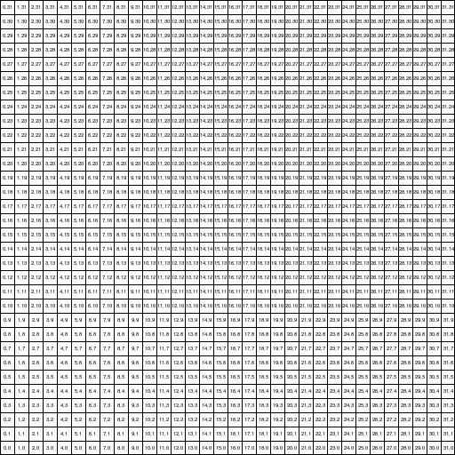
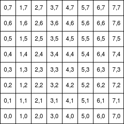

Designing Programs with Class
This book introduces the fundamental elements of class-based program design.
The book is also available in PDF form here.
7.2 Constructor design issue in modulo zombie (Assignment 3, Problem 3) |
Preface
Design Recipes
The Choice of Language and Environment
The Parts of the Book
Acknowledgements
We are grateful to Matthias Felleisen, Dan Brown, and the Northeastern students we have had the privilege of teaching in 2011 and 2012.
1 Objects are Function plus Data
1.1 Functional rocket
Here’s a review of the first program we wrote last semester. It’s the program to launch a rocket, written in the Beginner Student Language:
(require 2htdp/image) (require 2htdp/universe) ; Use the rocket key to insert the rocket here. (define ROCKET (bitmap class/0/rocket.png)) (define WIDTH 100) (define HEIGHT 300) (define MT-SCENE (empty-scene WIDTH HEIGHT)) ; A World is a Number. ; Interp: distance from the ground in AU. ; render : World -> Scene (check-expect (render 0) (place-image ROCKET (/ WIDTH 2) HEIGHT MT-SCENE)) (define (render h) (place-image ROCKET (/ WIDTH 2) (- HEIGHT h) MT-SCENE)) ; next : World -> World (check-expect (next 0) 7) (define (next h) (+ h 7)) (big-bang 0 (on-tick next) (to-draw render))
It’s a shortcoming of our documentation system that we can’t define ROCKET to be the rocket image directly, but as you can see this did the right thing:
> ROCKET
You can use the same trick, or you can copy this rocket image and paste it directly into DrRacket.
1.2 Object-oriented rocket
You’ll notice that there are two significant components to this program. There is the data, which in this case is a number representing the height of the rocket, and the functions that operate over that class of data, in this case next and render.
This should be old-hat programming by now. But in this class, we are going to explore a new programming paradigm that is based on objects. Objects are an old programming concept that first appeared in the 1950s just across the Charles river. As a first approximation, you can think of an object as the coupling together of the two significant components of our program (data and functions) into a single entity: an object.
Since we are learning a new programming language, you will no longer be using BSL and friends. Instead, select Language|Choose Language... in DrRacket, then select the "Use the language declared in the source" option and add the following to the top of your program:
#lang class/0
(define-class world% (fields height))
This declares a new class of values, namely world% objects. (By convention, we will use the % suffix for the name of classes.) For the moment, world% objects consist only of data: they have one field, the height of the rocket.
> (new world% 7) (new world% 7)
This creates a world% representing a rocket with height 7.
In order to access the data, we can invoke the height accessor method. Methods are like functions for objects and they are called (or invoked) by using the send form like so:
> (send (new world% 7) height) 7
; A World is a (new world% Number). ; Interp: height represents distance from the ground in AU.
To add functionality to our class, we define methods using the define/public form. In this case, we want to add two methods on-tick and to-draw:
; A World is a (new world% Number). ; Interp: height represents distance from the ground in AU. (define-class world% (fields height) ; on-tick : ... (define/public (on-tick ...) ...) ; to-draw : ... (define/public (to-draw ...) ...))
We will return to the contracts and code, but now that we’ve seen how to define methods, let’s look at how to invoke them in order to actually compute something. To call a defined method, we again use the send form, which takes an object, a method name, and any inputs to the method:
(send (new world% 7) on-tick ...)
This will call the on-tick method of the object created with (new world% 7). This is analogous to calling the next function on the world 7. The ellided code (...) is where we would write additional inputs to the method, but it’s not clear what further inputs are needed, so now let’s turn to the contract and method signatures for on-tick and to-draw.
When we designed the functional analogues of these methods, the functions took as input the world on which they operated, i.e. they had contracts like:
; tick : World -> World ; render : World -> Scene
But in an object, the data and functions are packaged together. Consequently, the method does not need to take the world input; that data is already a part of the object and the values of the fields are accessible using the field form.
That leads us to the following method signatures:
; A World is a (new world% Number). ; Interp: height represents distance from the ground in AU. (define-class world% (fields height) ; on-tick : -> World (define/public (on-tick) ...) ; to-draw : -> Scene (define/public (to-draw) ...))
Since we have contracts and have seen how to invoke methods, we can now formulate test cases:
(check-expect (send (new world% 7) on-tick) (new world% 8)) (check-expect (send (new world% 7) to-draw) (place-image ROCKET (/ WIDTH 2) (- HEIGHT 7) MT-SCENE))
Finally, we can write the code from our methods:
; A World is a (new world% Number). ; Interp: height represents distance from the ground in AU. (define-class world% (fields height) ; on-tick : -> World (define/public (on-tick) (new world% (add1 (field height)))) ; to-draw : -> Scene (define/public (to-draw) (place-image ROCKET (/ WIDTH 2) (- HEIGHT (field height)) MT-SCENE)))
At this point, we can construct world% objects and invoke methods.
Examples: | ||||||
|
But if we want to see an animation, we need to have our program interact with the big-bang system. Since we are now writing programs in an object-oriented style, we have a new big-bang system that uses an interface more suited to objects. To import this OO-style big-bang, add the following to the top of your program:
(require class/universe)
In the functional setting, we had to explicitly give a piece of data representing the state of the initial world and list which functions should be used for each event in the system. In other words, we had to give both data and functions to the big-bang system. In an object-oriented system, the data and functions are already packaged together, and thus the big-bang form takes a single argument: an object that both represents the initial world and implements the methods needed to handle system events such as to-draw and on-tick. (Our choice of method names was important; had we used the names render and next, for example, big-bang would not have known how to make the animation work.)
So to launch our rocket, we simply do the following:
(big-bang (new world% 0))
Our complete program is:
#lang class/0 (require 2htdp/image) (require class/universe) ; Use the rocket key to insert the rocket here. (define ROCKET (bitmap class/0/rocket.png)) (define WIDTH 100) (define HEIGHT 300) (define MT-SCENE (empty-scene WIDTH HEIGHT)) ; A World is a (new world% Number). ; Interp: height represents distance from the ground in AU. (define-class world% (fields height) ; on-tick : -> World (define/public (on-tick) (new world% (add1 (field height)))) ; to-draw : -> Scene (define/public (to-draw) (place-image ROCKET (/ WIDTH 2) (- HEIGHT (field height)) MT-SCENE))) (check-expect (send (new world% 7) on-tick) (new world% 8)) (check-expect (send (new world% 7) to-draw) (place-image ROCKET (/ WIDTH 2) (- HEIGHT 7) MT-SCENE)) ; Run, program, run! (big-bang (new world% 0))
1.3 Landing and taking off
Let’s now revise our program so that the rocket first descends toward the ground, lands, then lifts off again. Our current representation of a world is insufficient since it’s ambiguous whether we are going up or down. For example, if the rocket is at 42, are we landing or taking off? There’s no way to know. We can revise our data definition to included a representation of this missing information. A simple solution is to add a number representing the velocity of the rocket. When it’s negative, we are moving toward the ground. When positive, we are taking off.
In the functional approach, this new design criterion motivated the use of compound data, which are represented with structures. With objects, atomic and compound data are represented the same way; all that changes are the number of fields contained in each object.
Our revised class definition is then:
(define-class world% (fields height velocity) ...)
When constructing world% objects now give two arguments in addition to the class name:
> (new world% 7 -1) (new world% 7 -1)
Both components can be accessed through the accessor methods:
> (send (new world% 7 -1) height) 7
> (send (new world% 7 -1) velocity) -1
And within method definitions, we can refer to the values of fields using the field form. The signatures for our methods don’t change, and rockets should render just the same as before, however we need a new behavior for on-tick. When a world ticks, we want its new height to be calculated based on its current height and velocity, and its new velocity is the same as the old velocity, unless the rocket has landed, in which case we want to flip the direction of the velocity.
First, let’s make some test cases for the new on-tick:
(check-expect (send (new world% 0 1) on-tick) (new world% 1 1)) (check-expect (send (new world% 10 -2) on-tick) (new world% 8 -2)) (check-expect (send (new world% 0 -1) on-tick) (new world% -1 1))
Based on this specification, we revise the on-tick method definition as follows:
(define-class world% ... (define/public (on-tick) (new world% (+ (field velocity) (field height)) (cond [(<= (field height) 0) (abs (field velocity))] [else (field velocity)]))) ...)
Giving us an overall program of:
#lang class/0 (require 2htdp/image) (require class/universe) (define ROCKET (bitmap class/0/rocket.png)) (define WIDTH 100) (define HEIGHT 300) (define MT-SCENE (empty-scene WIDTH HEIGHT)) ; A World is a (new world% Number Number). ; Interp: height represents the height of the rocket in AU, ; velocity represents the speed of the rocket in AU/seconds. (define-class world% (fields height velocity) ; on-tick : -> World (define/public (on-tick) (new world% (+ (field velocity) (field height)) (cond [(<= (field height) 0) (abs (field velocity))] [else (field velocity)]))) ; to-draw : -> Scene (define/public (to-draw) (place-image ROCKET (/ WIDTH 2) (- HEIGHT (field height)) (empty-scene WIDTH HEIGHT)))) (check-expect (send (new world% 0 1) to-draw) (place-image ROCKET (/ WIDTH 2) HEIGHT MT-SCENE)) (check-expect (send (new world% 0 1) on-tick) (new world% 1 1)) (check-expect (send (new world% 10 -2) on-tick) (new world% 8 -2)) (check-expect (send (new world% 0 -1) on-tick) (new world% -1 1)) (big-bang (new world% HEIGHT -1))
1.4 Adding a moon
Adding more components is straightforward.
Here is a complete program that includes an orbiting moon:
#lang class/0 (require 2htdp/image) (require class/universe) (define ROCKET (bitmap class/0/rocket.png)) (define MOON (circle 20 "solid" "blue")) (define WIDTH 300) (define HEIGHT 300) (define MT-SCENE (empty-scene WIDTH HEIGHT)) ; A World is a (new world% Number Number Number). ; Interp: height represents distance from the ground in AU. ; velocity represents the speed of the rocket in AU/sec. ; moon-height represents the height of the moon. (define-class world% (fields height velocity moon-height) ; on-tick : -> World (define/public (on-tick) (new world% (+ (field velocity) (field height)) (cond [(= (field height) 0) (abs (field velocity))] [else (field velocity)]) (modulo (+ 5 (field moon-height)) 200))) ; to-draw : -> Scene (define/public (to-draw) (place-image MOON (/ WIDTH 3) (field moon-height) (place-image ROCKET (/ WIDTH 2) (- HEIGHT (field height)) MT-SCENE)))) (check-expect (send (new world% 0 1 100) to-draw) (place-image MOON (/ WIDTH 3) 100 (place-image ROCKET (/ WIDTH 2) HEIGHT MT-SCENE))) (check-expect (send (new world% 0 1 100) on-tick) (new world% 1 1 105)) (check-expect (send (send (new world% 10 -2 100) on-tick) height) 8) (big-bang (new world% HEIGHT -1 100))
1.5 Exercise
1.5.1 Complex, with class.
For this exercise, you will develop a class-based representation of complex numbers, which are used in several fields, including: engineering, electromagnetism, quantum physics, applied mathematics, and chaos theory.
A complex number is a number consisting of a real and imaginary part. It can be written in the mathematical notation a+bi, where a and b are real numbers, and i is the standard imaginary unit with the property i2 = −1.
You can read more about the sophisticated number system of Racket in the (part ("(lib scribblings/guide/guide.scrbl)" "top")) section on (part ("(lib scribblings/guide/guide.scrbl)" "numbers")).
Examples: | ||||||||||||||||||||||||||||||
|
Supposing your language was impoverished and didn’t support
complex numbers, you should be able to build them yourself
since complex numbers are easily represented as a pair of real
numbers—
Design a structure-based data representation for Complex values. Design the functions =?, plus, minus, times, div, sq, mag, and sqroot. Finally, design a utility function to-number which can convert Complex values into the appropriate Racket complex number. Only the code and tests for to-number should use Racket’s complex (non-real) numbers and arithmetic since the point is to build these things for yourself. However, you can use Racket to double-check your understanding of complex arithmetic.
For mathematical definitions of complex number operations, see the Wikipedia entries on complex numbers and the square root of a complex number.
Examples: | ||||||||||||||||||||
|
Develop a class-based data representation for Complex values. Add accessor methods for extracting the real and imag parts. Develop the methods =?, plus, minus, times, div, sq, mag, sqroot and to-number.
Examples: | |||||||||||||||||||||||||||||||||||||||||||||
|
2 Designing Classes
One of the most important lessons of How to Design Programs is that the structure of code follows the structure of the data it operates on, which means that the structure of your code can be derived systematically from your data definitions. In this lecture, we see how to apply the design recipe to design data represented using classes as well as operations implemented as methods in these classes.
2.1 Atomic and Compound Data
We saw already in (part "lec01") and in (part "assign01") how to design classes that contain multiple pieces of data. Given a class defined as follows:
; A Posn is (new posn% Number Number) (define-class posn% (fields x y) ...)
the template for a posn% method is:
; -> ??? (define (posn%-method) ... (field x) ... (field y) ...)
Here we see that our template lists the available parts of the posn% object, in particular the two fields x and y.
2.2 Enumerations
An enumeration is a data definition for a finite set of possibilities. For example, we can represent a traffic light like the ones on Huntington Avenue with a finite set of symbols, as we did in Fundies I:
;; A Light is one of: ;; - 'Red ;; - 'Green ;; - 'Yellow
Following the design recipe, we can construct the template for functions on Lights:
; Light -> ??? (define (light-temp l) (cond [(symbol=? 'Red l) ...] [(symbol=? 'Green l) ...] [(symbol=? 'Yellow l) ...]))
Finally, we can define functions over Lights, following the template.
; next : Light -> Light ; switch to the next light in the cycle (define (next l) (cond [(symbol=? 'Red l) 'Green] [(symbol=? 'Green l) 'Yellow] [(symbol=? 'Yellow l) 'Red])) (check-expect (next 'Green) 'Yellow) (check-expect (next 'Red) 'Green) (check-expect (next 'Yellow) 'Red)
That’s all well and good for a function-oriented design, but we want to design this using classes, methods, and objects.
There are two obvious possibilities. First, we could create a light% class, with a field holding a Light. However, this fails to use classes and objects to their full potential. Instead, we will design a class for each state the traffic light can be in. Each of the three classes will have their own implementation of the next method, producing the appropriate Light.
#lang class/0 ; A Light is one of: ; - (new red%) ; - (new green%) ; - (new yellow%) (define-class red% ; -> Light ; Produce the next traffic light (define/public (next) (new green%))) (define-class green% ; -> Light ; Produce the next traffic light (define/public (next) (new yellow%))) (define-class yellow% ; -> Light ; Produce the next traffic light (define/public (next) (new red%))) (check-expect (send (new red%) next) (new green%)) (check-expect (send (new green%) next) (new yellow%)) (check-expect (send (new yellow%) next) (new red%))
If you have a Light L, how do you get the next light?
(send L next)
Note that there is no use of cond in this program, although the previous design using functions needed a cond. Instead, the cond is happening behind your back, because the object system picks the appropriate next method to call.
2.3 Unions and Recursive Unions
Unions are a generalization of enumerations to represent infinite families of data. One example is binary trees, which can contain arbitrary other data as elements. We’ll now look at how to model binary trees of numbers, such as:
7 6 8 |
/ \ / \ |
8 4 2 1 |
/ \ |
3 2 |
How would we represent this with classes and objects?
#lang class/0 ; A BT is one of: ; - (new leaf% Number) ; - (new node% Number BT BT) (define-class leaf% (fields number)) (define-class node% (fields number left right)) (define ex1 (new leaf% 7)) (define ex2 (new node% 6 (new leaf% 8) (new node% 4 (new leaf% 3) (new leaf% 2)))) (define ex3 (new node% 8 (new leaf% 2) (new leaf% 1)))
We then want to design a method count which produces the number of numbers stored in a BT.
Here are our examples:
(check-expect (send ex1 count) 1) (check-expect (send ex2 count) 5) (check-expect (send ex3 count) 3)
Next, we write down the templates for methods of our two classes.
; -> Number ; count the number of numbers in this leaf (define/public (count) ... (field number) ...)
; -> Number ; count the number of numbers in this node (define/public (count) ... (field number) ... (send (field left) count) ... (send (field right) count) ...)
Now we provide a definition of the count method for each of our classes.
; -> Number ; count the number of numbers in this leaf (define/public (count) 1)
; -> Number ; count the number of numbers in this node (define/public (count) (+ 1 (send (field left) count) (send (field right) count)))
Next, we want to write the double function, which takes a number and produces two copies of the BT with the given number at the top. Here is a straightforward implementation for leaf%:
; Number -> BT ; double the leaf and put the number on top (define/public (double n) (new node% n (new leaf% (field number)) (new leaf% (field number))))
Note that (new leaf% (field number)) is just constructing a new leaf% object just like the one we started with. Fortunately, we have a way of referring to ourselves, using the identifier this. We can thus write the method as:
; Number -> BT ; double the leaf and put the number on top (define/public (double n) (new node% n this this))
Since these two methods are so similar, you may wonder if they can be abstracted to avoid duplication. We will see how to do this in a subsequent class.
; Number -> BT ; double the node and put the number on top (define/public (double n) (new node% n this this))
#lang class/0 ; A BT is one of: ; - (new leaf% Number) ; - (new node% Number BT BT) (define-class leaf% (fields number) ; -> Number ; count the number of numbers in this leaf (define/public (count) 1) ; Number -> BT ; double the leaf and put the number on top (define/public (double n) (new node% n this this))) (define-class node% (fields number left right) ; -> Number ; count the number of numbers in this node (define/public (count) (+ 1 (send (field left) count) (send (field right) count))) ; Number -> BT ; double the node and put the number on top (define/public (double n) (new node% n this this))) (define ex1 (new leaf% 7)) (define ex2 (new node% 6 (new leaf% 8) (new node% 4 (new leaf% 3) (new leaf% 2)))) (define ex3 (new node% 8 (new leaf% 2) (new leaf% 1))) (check-expect (send ex1 count) 1) (check-expect (send ex2 count) 5) (check-expect (send ex3 count) 3) (check-expect (send ex1 double 5) (new node% 5 ex1 ex1)) (check-expect (send ex3 double 0) (new node% 0 ex3 ex3))
2.4 Exercises
2.4.1 Lists
Design classes to represent lists of numbers. Implement the methods length, append, sum, prod, contains?, reverse, map, and max. Note that max raises some interesting design decisions in the case of the empty list. One solution is to define the max of the empty list as negative infinity, -inf.0, a number smaller than every other number (except itself).
2.4.2 Home on the Range
A range represents a set of numbers between two endpoints. To
start with, you only need to consider ranges that include the
smaller endpoint and exclude the larger endpoint—
Design a representation for ranges and implement the in-range? method, which determines if a number is in the range. For example, the range [3,7.2) includes the numbers 3 and 5.0137, but not the numbers -17 or 7.2.
Extend the data definition and implementation of ranges to represent ranges that exclude the low end of the range and include the high end, written (lo,hi].
Add a union method to the interface for ranges and implement it in all range classes. This method should consume a range and produces a new range that includes all the numbers in this range and all the numbers in the given range.
You may extend your data definition for ranges to support this method.
Don’t worry if your initial design duplicates code; you can abstract later.
3 Inheritance
3.1 Method inheritance with binary trees
#lang class/0 ; A BT is one of: ; - (new leaf% Number) ; - (new node% Number BT BT) (define-class leaf% (fields number) ... ; Number -> BT ; double the leaf and put the number on top (define/public (double n) (new node% n this this))) (define-class node% (fields number left right) ... ; Number -> BT ; double the node and put the number on top (define/public (double n) (new node% n this this)))
#lang class/0 ; A BT is one of: ; - (make-leaf Number) ; - (make-node Number BT BT) (define-struct leaf (number)) (define-struct node (number left right)) ; BT Number -> BT ; Double the given tree and put the number on top. (define (double bt n) (cond [(leaf? bt) (make-node n bt bt)] [(node? bt) (make-node n bt bt)]))
We would arrive at this code by developing the double function according to the design recipe; in particular, this code properly instantiates the template for binary trees. However, after noticing the duplicated code, it is straightforward to rewrite this structure-oriented function into an equivalent one that duplicates no code. All cases of the cond clause produce the same result, hence the cond can be eliminated, replaced by a single occurrence of the duplicated answer expressions:
; BT Number -> BT ; Double the given tree and put the number on top. (define (double bt n) (make-node n bt bt))
But switching back to the object-oriented version of this code, it is
not so simple to "eliminate the cond"—
(define-class bt% ; -> BT ; Double this tree and put the number on top. (define/public (double n) (new node% n this this)))
The double method can be removed from the leaf% and node% classes and instead these class can rely on the bt% definition of double, but to do this we must establish a relationship between leaf%, node% and bt%: we declare that leaf% and node% are subclasses of bt%, and therefore they inherit the double method; it is as if the code were duplicated without actually writing it twice:
(define-class leaf% (super bt%) (fields number) ; -> Number ; count the number of numbers in this leaf (define/public (count) 1)) (define-class node% (super bt%) (fields number left right) ; -> Number ; count the number of numbers in this node (define/public (count) (+ 1 (send (field left) count) (send (field right) count))))
To accomodate this new feature—
At this point we can construct binary trees just as before, and all binary trees understand the double method even though it is only defined in bt%:
> (new leaf% 7) (new leaf% 7)
> (send (new leaf% 7) double 8) (new node% 8 (new leaf% 7) (new leaf% 7))
> (send (send (new leaf% 7) double 8) double 9) (new node% 9 (new node% 8 (new leaf% 7) (new leaf% 7)) (new node% 8 (new leaf% 7) (new leaf% 7)))
3.2 "Abstract" classes
At this point, it is worth considering the question: what does a bt% value represent? We have arrived at the bt% class as a means of abstracting identical methods in leaf% and node%, but if I say (new bt%), as I surely can, what does that mean? The answer is: nothing.
Going back to our data definition for BTs, it’s clear that the
value (new bt%) is not a BT since a BT is
either a (new leaf% Number) or a (new node% Number BT BT). In other words, a (new bt%) makes no more sense as a
representation of a binary tree than does (new node% "Hello Fred" 'y-is-not-a-number add1). With that in mind, it doesn’t make
sense for our program to ever construct bt% objects—
3.3 Data inheritance with binary trees
Inheritance allows us to share methods amongst classes, but it also
possible to share data. Just as we observed that double was
the same in both leaf% and node%, we can also
observe that there are data similarities between leaf% and
node%. In particular, both leaf% and node%
contain a number field. This field can be abstracted just
like double was—
(define-class bt% (fields number) ; -> BT ; Double this tree and put the number on top. (define/public (double n) (new node% n this this))) (define-class leaf% (super bt%) ; -> Number ; count the number of numbers in this leaf (define/public (count) 1)) (define-class node% (super bt%) (fields left right) ; -> Number ; count the number of numbers in this node (define/public (count) (+ 1 (send (field left) count) (send (field right) count))))
The leaf% and node% class now inherit both the number field and the double method from bt%. This has a consequence for the class constructors. Previously it was straightforward to construct an object: you write down new, the class name, and as many expressions as there are fields in the class. But now that a class may inherit fields, you must write down as many expressions as there are fields in the class definition itself and in all of the super classes. What’s more, the order of arguments is important. The fields defined in the class come first, followed by the fields in the immediate super class, followed by the super class’s super classes, and so on. Hence, we still construct leaf%s as before, but the arguments to the node% constructor are changed: it takes the left subtree, the right subtree, and then the number at that node:
; A BT is one of: ; - (new leaf% Number) ; - (new node% BT BT Number)
> (new leaf% 7) (new leaf% 7)
> (new node% (new leaf% 7) (new leaf% 13) 8) (new node% (new leaf% 7) (new leaf% 13) 8)
Although none of our method so far have needed to access the number field, it is possible to access number in leaf% and node% (and bt%) methods as if they had their own number field. Let’s write a sum method to make it clear:
Notice that the double method swapped the order of arguments when constructing a new node% to reflect the fact that the node constructor now takes values for its fields first, then values for its inherited fields.
(define-class bt% (fields number) ; -> BT ; Double this tree and put the number on top. (define/public (double n) (new node% this this n))) (define-class leaf% (super bt%) ; -> Number ; count the number of numbers in this leaf (define/public (count) 1) ; -> Number ; sum all the numbers in this leaf (define/public (sum) (field number))) (define-class node% (super bt%) (fields left right) ; -> Number ; count the number of numbers in this node (define/public (count) (+ 1 (send (field left) count) (send (field right) count))) ; -> Number ; sum all the numbers in this node (define/public (sum) (+ (field number) (send (field left) sum) (send (field right) sum))))
As you can see, both of the sum methods refer to the number field, which is inherited from bt%.
3.4 Inheritance with shapes
Let’s consider another example and see how data and method inheritance manifests. This example will raise some interesting issues for how super classes can invoke the methods of its subclasses. Suppose we are writing a program that deals with shapes that have position. To keep the example succint, we’ll consider two kinds of shapes: circles and rectangles. This leads us to a union data definition (and class definitions) of the following form:
We are using +Real to be really precise about the kinds of numbers that are allowable to make for a sensible notion of a shape. A circle with radius -5 or 3+2i doesn’t make a whole lot of sense.
; A Shape is one of: ; - (new circ% +Real Real Real) ; - (new rect% +Real +Real Real Real) ; A +Real is a positive, real number. (define-class circ% (fields radius x y)) (define-class rect% (fields width height x y))
Already we can see an opportunity for data abstraction since circ%s and rect%s both have x and y fields. Let’s define a super class and inherit these fields:
; A Shape is one of: ; - (new circ% +Real Real Real) ; - (new rect% +Real +Real Real Real) ; A +Real is a positive, real number. (define-class shape% (fields x y)) (define-class circ% (super shape%) (fields radius)) (define-class rect% (super shape%) (fields width height))
Now let’s add a couple methods: area will compute the area of the shape, and draw-on will take a scene and draw the shape on the scene at the appropriate position:
(define-class circ% (super shape%) (fields radius) ; -> +Real (define/public (area) (* pi (sqr (field radius)))) ; Scene -> Scene ; Draw this circle on the scene. (define/public (draw-on scn) (place-image (circle (field radius) "solid" "black") (field x) (field y) scn))) (define-class rect% (super shape%) (fields width height) ; -> +Real ; Compute the area of this rectangle. (define/public (area) (* (field width) (field height))) ; Scene -> Scene ; Draw this rectangle on the scene. (define/public (draw-on scn) (place-image (rectangle (field width) (field height) "solid" "black") (field x) (field y) scn)))
Examples: | ||||||||
|
The area method is truly different in both variants of the shape union, so we shouldn’t attempt to abstract it by moving it to the super class. However, the two definitions of the draw-on method are largely the same. If they were identical, it would be easy to abstract the method, but until the two methods are identical, we cannot lift the definition to the super class. One way forward is to rewrite the methods by pulling out the parts that differ and making them seperate methods. What differs between these two methods is the expression constructing the image of the shape, which suggests defining a new method img that constructs the image. The draw-on method can now call img and rewriting it this way makes both draw-on methods identical; the method can now be lifted to the super class:
(define-class shape% (fields x y) ; Scene -> Scene ; Draw this shape on the scene. (define/public (draw-on scn) (place-image (img) (field x) (field y) scn)))
But there is a problem with this code. While this code makes sense when it occurrs inside of rect% and circ%, it doesn’t make sense inside of shape%. In particular, what does img mean here? The img method is a method of rect% and circ%, but not of shape%, and therefore the name img is unbound in this context.
On the other hand, observe that all shapes are either rect%s or circ%s. We therefore know that the object invoking the draw-on method understands the img message, since both rect% and circ% implement the img method. Therefore we can use send to invoke the img method on this object and thanks to our data definitions for shapes, it’s guaranteed to succeed. (The message send would fail if this referred to a shape%, but remember that shape%s don’t make sense as objects in their own right and should never be constructed).
We arrive at the folllowing final code:
#lang class/1 (require 2htdp/image) ; A Shape is one of: ; - (new circ% +Real Real Real) ; - (new rect% +Real +Real Real Real) ; A +Real is a positive, real number. (define-class shape% (fields x y) ; Scene -> Scene ; Draw this shape on the scene. (define/public (draw-on scn) (place-image (send this img) (field x) (field y) scn))) (define-class circ% (super shape%) (fields radius) ; -> +Real ; Compute the area of this circle. (define/public (area) (* pi (sqr (field radius)))) ; -> Image ; Render this circle as an image. (define/public (img) (circle (field radius) "solid" "black"))) (define-class rect% (super shape%) (fields width height) ; -> +Real ; Compute the area of this rectangle. (define/public (area) (* (field width) (field height))) ; -> Image ; Render this rectangle as an image. (define/public (img) (rectangle (field width) (field height) "solid" "black"))) (check-expect (send (new rect% 10 20 0 0) area) 200) (check-within (send (new circ% 10 0 0) area) (* pi 100) 0.0001) (check-expect (send (new rect% 5 10 10 20) draw-on (empty-scene 40 40)) (place-image (rectangle 5 10 "solid" "black") 10 20 (empty-scene 40 40))) (check-expect (send (new circ% 4 10 20) draw-on (empty-scene 40 40)) (place-image (circle 4 "solid" "black") 10 20 (empty-scene 40 40)))
3.5 Exercises
3.5.1 Shapes
; bba : -> Number (short for "bounding-box-area") ; Compute the area of the smallest bounding box for this shape.
(check-expect ((rect% 3 4) . bba) 12) (check-expect ((circ% 1.5) . bba) 9)
Design the bba method for the rect% and circ% class.
Design a super class of rect% and circ% and lift the bba method to the super class. Extend the shape interface as needed, but implement any methods you add.
Design a new variant of a Shape, Square, which should support all of the methods of the interface.
4 Interfaces
[This section is still under construction and will be posted soon. Please check back later.]
4.1 Lights, redux
a look back at light
add a draw method
make it a world program that cycles through the lights
what does it mean to be a light? next and draw
alternative design of light class
Q: what changes in world? A: nothing.
add interface to light design. both alternatives implement it, and the world will work with anything that implements it
Q: Is it possible to represent the empty list with empty?
(define-class cons% (fields first rest) (define/public (method-template ...) (field first) ... (send (field rest) method-template ...)))
Notice that the method is sent to the rest of this list. If the rest of the list is empty, then this will break unless the empty list is an object, and moreover, an object that understands method-template.
Q: The define-interface mechanism is a way of enforcing that a class implements a certain set of method names, but is there a way of enforcing things like the number of arguments one of these methods must accept?
A: There are no linguistic mechanisms, but there are meta-linguistic mechanisms. This is no different than our approach last semester to enforcing things like the number of arguments a function accepts. Our approach has been to write down contracts and purpose statements, which specify these things, and unit tests, which check that we’ve followed the specification. Our language does not enforce these specifications, but that is really just a detail of the particulars of the languages we’ve been using. Even though contracts are not a language feature (in the languages we’ve used so far), they are an important concept for organizing software components.
It is important to keep in mind that an interface is more than a set of method names. Think of this analogously to structures: define-struct gives you a mechanism for defining structures, but a structure does not a data definition make. We now have define-interface, but an interface is more than a set of method names; it is a set of method names with contracts and purpose statements. Only the method name part is enforced, but the concept of an interface is what’s important. It is a useful tool for organizing and developing software components. Even if we didn’t have define-interface, interfaces would be a useful conceptual tool for writing programs.
4.2 Exercises
4.2.1 Parametric lists
Consider the parametric data definition for lists we studied last semester:
; A [Listof X] is one of: ; - empty ; - (cons X [Listof X])
Design an analogous class-based representation of parametric lists. Design a list<%> interface that includes cons, empty, length, append, reverse, map, filter, foldl, and foldr.
Using the recipe for a recursive union represented using objects, i.e. similar to the way you developed lists of numbers last week.
Using a "wrapper class", i.e. design a class that has a single field which contains a "real" list—
one built out of cons and empty.
Any program that interacts with either of these representations according to the interface should not be able to tell them apart.
Use inheritance to lift method definitions to a super class to the full extent possible. (Hint: it will help if you realize that many of these methods may be expressed in terms of a few "core" methods.) If possible, have both the recursive union representation and the wrapper representation share a common super class.
The cons and empty methods have been added to facilitate opportunities for abstraction. You might find them useful to use when you lift methods to a common super class so that the right kind of list (either a wrapped or a recursive union list) is constructed.
Another hint: the names of methods we have chosen overlap with the name of some standard values that you may like to use when defining methods, especially in the wrapped list case. If you refer to these names within a class, you refer to the method rather than the built-in value. If you would like to refer to the built-in value, an easy work-around is to do something like this:
(define ls:cons cons) ; etc.
Now when you want to refer to the cons function instead of the cons method, you can use the name ls:cons.
4.2.2 Super Zombie!
Revise your design of the Zombie game to include a zombie<%> and player<%> interface. Implement a live-zombie% and dead-zombie% class that both implement your zombie<%> interface; implement a player% class that implements your player<%> interface.
Do not use the functional abstraction recipe. Instead, if you notice code that could be shared between the various classes you’ve designed, design super classes and use inheritance to abstract the duplicated code.
Design a world% class for playing the Zombie game that interacts with the zombie and player objects only according to the interfaces you’ve designed, i.e. the world% class should work for any objects that correctly implement your zombie and player interfaces.
4.2.3 Modulo Zombie!
Using your interface design from the previous problem, design a modulo-player% class and a modulo-live-zombie% class that implement the player<%> and zombie<%> interfaces, respectively.
These alternative implementations should behave as follows: the player and the zombies may now "wrap around" on the screen. If a player goes off the top of the screen, they should re-appear on the bottom; if the go off of the left side, they should appear on the right, etc., and likewise for the zombies. When calculating in which direction they should go, the player and zombies should take into account the possibility of wrapping around the screen. So for example, if the player is on the far right side and there is a zombie on the far left side, the zombie should head left to wrap around the screen and quickly arrive upon the player and feast upon his or her brains. Similarly if the mouse is on the very top and the player is on the very bottom, the player should move down to get to the top quickly.
If you need to make changes to your interface design to accommodate these new game requirements, you must re-implement your solution to problem 2 in order to satisfy the revised interfaces. In the end, the interfaces used and your implementation of the world% class be the same in both problem 2 and 3.
4.2.4 Mixed Zombie!
Experiment with different combinations of your classes from part 2 and 3 (only the player can wrap around; only the zombies can wrap around; some of the zombies and the player; some of the zombies, but not the player, etc.) until you find a combination you like best. Write down an expression that launches the game using this combination.
5 Larger system design: Snakes on a plane
5.1 Questions and answers
Q: I’ve designed a single interface being<%> that subsumes both zombie<%> and player<%> in the current assignment. Do I still have to design a zombie<%> and player<%> interface?
A: Yes. There are a couple reasons for this. One is that there really are some differences between the operations that should be supported by a player versus a zombie. For example, zombies eat brains; players don’t. Another is that, as you are probably noticing, much of this course is about interface specification and implementation. As we build larger and larger programs, interfaces become a much more important engineering tool. An interface can be viewed as a contract—
an agreement on the terms of engagement— between the implementor and the consumer of a software component. In this assignment, even though you are acting simultaneously as both of these parties, we are asking you to write down the agreement you are making between the world program that uses zombies and players and the classes that implement zombies and players. Part of our agreement with you, is that you’ll write separate specifications; so that’s what you need to do. That said, if really believe that there should be a single uniform interface that all zombies and players should adhere to, you can write a being<%> interface. You still need to write down the zombie<%> and player<%> interfaces, but if you’re careful, you may be able to arrange things so that your classes that implement zombies and players declare to implement the being<%> interface which implies they also implement the zombie<%> and player<%> interface, respectively. We will cover this topic in more depth next Monday.
Q: Interfaces often have overlapping sets of behaviors. For example, zombies and players share much of the same functionality. Is there a way to do abstraction at the interface level?
A: In class/1, there is currently no way to express this kind of abstraction. We will consider adding this feature and covering it in future lectures.
Q: Which is considered a better design: a union with two variants, or a single variant with a Boolean field that indicates "which part of the union this data belongs to"? For example, is it better to have a live-zombie% and dead-zombie% class or a single zombie% class with a dead? field.
A: One of the themes of this and last semester is that once you have settled on choice for the representation of information in your program, the structure of your program follows the structure of that data. We’ve trained you to systematically derive code structure from data structure; there’s a recipe—
you don’t even have to think. That’s great because it frees up significant quantities of the most precious and limited resource in computing: your brain. But unfortunately, that recipe kicks in only after you’ve chosen how information will be represented, i.e. after you’ve written down data definitions. Much of the hard work in writing programs, and where your creative energy and brain power is really needed, is going from information to representation. There is no recipe for this part of program design. You need to develop the ability to analyze problems, take an account of what knowledge needs to be represented to solve a problem, and practice making decisions about how that knowledge can be represented computationally. The good news is you don’t have to be struck by divine inspiration to manage this step. Program design is a process of iterative refinement: make some choices, follow the recipe. You will discover ways to improve your initial choices, so go back and revise, then carry out the changes in code structure those design decision entail. Rinse and repeat. This is a long winded way of saying: there is no universal "right" answer to this question. It will depend on the larger context. That said, there are some important things to take into account for this particular question. It is much easier to add new variants to a union than it is to create Boolean values other than true and false. Good program design is often based on anticipating future requirements. If you think it’s possible that there might be some other kind of zombie down the road, the union design will be less painful to extend and maintain.
5.2 Information in the Snake Game
In the previous lecture, we introduced a lot of important new concepts such as interfaces and data and method inheritance for class-based abstraction. Today we are going to see these concepts being applied in the context of a larger program design that we will develop together. It’s a game you’ve all seen and designed before; we’re going to develop a class-based version of the Snake Game.
Our first task in designing the Snake Game is to take an account of the information that our program will need to represent. This includes:
a system of coordinates
- a snake, which has
direction
segments
food
a world
5.3 The world
Let’s start by designing a minimal world% class. We will iteratively refine it later to add more an more features. For now, let’s just have the snake move.
; A World is a (new world% Snake Food). (define-class world% (fields snake food) (define/public (on-tick) (new world% (send (field snake) move) (field food))) (define/public (tick-rate) 1/8) (define/public (to-draw) (send (field food) draw (send (field snake) draw MT-SCENE))))
5.4 Coordinate interface
Let’s focus on the system of coordinates. There are really two coordinate systems we will need to represent; one is necessitated by the animation system we are using, the other by the logic of the Snake Game. We are consumers of the big-bang animation system, which uses a pixel-based, graphics-coordinate system (meaning the origin is at the Northwest corner). This is part of big-bang’s interface, which we don’t have the power to change, and therefore we have to communicate to big-bang using pixels in graphics-coordinates. In general, when we design programs, the interfaces of libraries we use impose obligations on our code.
On the other hand, using pixel-based graphics-coordinates is probably not the best representation choice for the information of the Snake Game. We’ll be better off if we design our own representation and have our program translate between representations at the communication boundaries between our code and big-bang. Let’s use a grid-based coordinate system where the origin is the Southwest corner. We can define a mapping between the coordinate systems by defining some constants such as the grid size and the size of the screen:
#lang class/1 (define WIDTH 32) ; in grid units (define HEIGHT 32) ; in grid units (define SIZE 16) ; in pixels / grid unit (define WIDTH-PX (* SIZE WIDTH)) ; in pixels (define HEIGHT-PX (* SIZE HEIGHT)) ; in pixels
This defines that our game is logically played on a 32x32 grid, which we will render visually as a 512x512 pixel image. This are the values we cooked up in class, which results in the following grid for our game:
As an exercise, try to write an expression that produces this image.

But for the sake of our notes, let’s develop the game for a much smaller grid that is rendered on a larger scale. It will be easy to change our definitions at the end in order to recover the original design. If done properly, all of test cases will remain unaffected by the change.
(define WIDTH 8) ; in grid units (define HEIGHT 8) ; in grid units (define SIZE 32) ; in pixels / grid unit
This defines that our game is logically played on a 8x8 grid, which we will render visually as a 256x256 pixel image. The grid for our game now looks like:

Now we need to consider the interface for coordinates (henceforth, the term "coordinate" refers to our representation of coordinates in the Snake Game, not the graphics-coordinates of big-bang). What do we need to do with coordinates? Here’s a coarse first approximation:
Compare two coordinates for equality.
Draw something at a coordinate on to a scene.
Move a coordinate.
Check that a coordinate is on the board.
This list suggest the following interface for coordinates:
; A Coord implements coord<%>. (define-interface coord<%> [; Coord -> Boolean ; Is this coordinate at the same position as the given one? compare ; Scene -> Scene ; Draw this coordinate on the scene. draw ; -> Coord ; Move this coordinate. move ; -> Boolean ; Is this coordinate on the board? check])
This is a good place to start, but as we start thinking about what these methods should do and how we might write them, some issues should come to mind. For example, in thinking about the what: what should be drawn when the draw method is invoked? Perhaps we want the coordinate "to just know" what should be drawn, which suggests that when we implement coordinates they should contain data representing what to draw. Perhaps we want to tell the draw method what to draw, which suggests we should revise the contract to include an argument or arguments that represent what to draw. For the time-being, let’s decide that the coordinate will know what to draw.
In the thinking about the how: how do you imagine the draw coordinate will be written? Assuming we know what to draw, the next question is how will the method know where to draw it? We have a coordinate, which is a grid coordinate, but will need to use place-image to actually draw that image on the given scene. But place-image works in the pixel-based graphics-coordinate system. We need to be able to convert a coordinate to a pixel-based graphics-coordinate in order to write the draw method, but there is nothing in the interface that gives us that capability, and the interface is all we will have to work with. This suggests we should revise the interface to include this needed behavior.
Similarly, if we consider how to write the compare method, we will want to compare the x- and y-components of the given coordinate with the x- and y-components of this coordinate. Again, there is nothing in the interface as given that allows this, so we need to revise.
Now consider the move method. How can we write it? What do
we expect to happen? There’s not enough information to know—
Finally, the names check and compare are less informative than they could be. The compare method answers the question "are two coordinates at the same position?", so let’s instead call it same-pos?. The check method answers the question "is this coordinate on the board?", so let’s instead call it on-board?.
Interface design is incredibly important, especially when, unlike in
our current situation, it is not easy to revise in the future. Modern
computer systems are littered with detritus of past interface design
choices because interfaces are difficult and expensive, if not
impossible, to change. As an example, the developers of the UNIX
operating system, which was developed in the 1970s and is now the
basis of both Linux and Mac OS, made the choice to save characters and
call the operation that creates a file "CREAT". Forty years later,
I’m writing these notes on a portable computer while flying from
Boston to Houston. My machine, which weighs far less than any
computer that ran UNIX in the 70’s, has not one, but two 2.66 GHz
processors and 8 gigs of RAM: unimaginable computing resources in the
70s. And yet, when my OS wants to make a new file, it calls the
"CREAT" function—
You won’t be able to make the perfect interface on the first try, but the closer you get, the better your life will be in the future.
Revising our interface as described above, we arrive at the following:
; A Coord implements coord<%>. (define-interface coord<%> [; Coord -> Boolean ; Is this coordinate at the same position as the given one? same-pos? ; Scene -> Scene ; Draw this coordinate on the scene. draw ; Dir -> Coord ; Move this coordinate in the given direction. move ; -> Boolean ; Is this coordinate on the board? on-board? ; -> Nat ; The {x,y}-component of grid-coordinate. x y ; -> Nat ; The {x,y}-component of pixel-graphics-coordinate. x-px y-px])
We haven’t designed Dir data definition for representing direction; let’s take care of that quickly. In our game, a direction is one of four possibilities, i.e. it is an enumeration. We could use a class-based enumeration, but for the sake of simplicity, let’s just use strings and say that:
; A Dir is one of: ; - "left" ; - "right" ; - "up" ; - "down"
This representation has the nice property of being a subset of big-bang’s KeyEvent representation, so we can rely on the coincidence and handle the "up" key event by moving in the "up" direction without need to convert between representations.
5.5 An implementation of coordinates: segments
At this point, we’ve flushed out enough of the initial design of the coordinate interface we can now start working on an implementation of it. There are two components that will implement the coordinate interface: segments and food. Let’s start with segments.
; A Segment is a (new seg% Int Int) ; Interp: represents a segment grid-coordinate. (define-class seg% (implements coord<%>) (fields x y) ...)
Our template for seg% methods is:
; ? ... -> ? (define/public (seg-template ...) (field x) ... (field y) ...)
We’ve now made a data definition for segments and committed ourselves to implementing the interface. This obligates us to implement all of the methods in coord%. We’ve decided to implement the coord% using a class with an x and y field. This satisfies part of our implementation right off the bat: we get an x and y method by definition. Let’s now do same-pos?:
(check-expect (send (new seg% 0 0) same-pos? (new seg% 0 0)) true) (check-expect (send (new seg% 0 0) same-pos? (new seg% 1 0)) false)
seg%
(define/public (same-pos? c) (and (= (field x) (send c x)) (= (field y) (send c y))))
And now draw:
(check-expect (send (new seg% 0 0) draw MT-SCENE) (place-image (square SIZE "solid" "red") (* 1/2 SIZE) (- HEIGHT-PX (* 1/2 SIZE)) MT-SCENE))
seg%
(define/public (draw scn) (place-image (square SIZE "solid" "red") (x-px) (y-px) scn))
And now move:
(check-expect (send (new seg% 0 0) move "up") (new seg% 0 1)) (check-expect (send (new seg% 0 0) move "down") (new seg% 0 -1)) (check-expect (send (new seg% 0 0) move "left") (new seg% -1 0)) (check-expect (send (new seg% 0 0) move "right") (new seg% 1 0))
seg%
(define/public (move d) (cond [(string=? d "up") (new seg% (field x) (add1 (field y)))] [(string=? d "down") (new seg% (field x) (sub1 (field y)))] [(string=? d "left") (new seg% (sub1 (field x)) (field y))] [(string=? d "right") (new seg% (add1 (field x)) (field y))]))
And now on-board?:
(check-expect (send (new seg% 0 0) on-board?) true) (check-expect (send (new seg% 0 -1) on-board?) false) (check-expect (send (new seg% 0 (sub1 HEIGHT)) on-board?) true) (check-expect (send (new seg% 0 HEIGHT) on-board?) false)
seg%
(define/public (on-board?) (and (<= 0 (field x) (sub1 WIDTH)) (<= 0 (field y) (sub1 HEIGHT))))
And finally, the x-px and y-px methods:
(check-expect (send (new seg% 0 0) x-px) (* 1/2 SIZE)) (check-expect (send (new seg% 0 0) y-px) (- HEIGHT-PX (* 1/2 SIZE)))
seg%
(define/public (x-px) (* (+ 1/2 (field x)) SIZE)) (define/public (y-px) (- HEIGHT-PX (* (+ 1/2 (field y)) SIZE)))
That completes all of the obligations of the seg% interface.
5.6 Another implementation of coordinates: food
Food is another implementation of the coord<%> interface, and it is largely similar to the seg% class, which suggests that seg% and food% may be good candidates for abstraction, but that’s something to worry about later. For now, let’s implement food%. Since we’ve already been through the design of seg%, we’ll do food% quickly:
; A Food is a (new food% Nat Nat). (define-class food% (implements coord<%>) (fields x y) (define/public (same-pos? c) (and (= (field x) (send c x)) (= (field y) (send c y)))) (define/public (draw scn) (place-image (square SIZE "solid" "green") (x-px) (y-px) scn)) (define/public (move d) (cond [(string=? d "up") (new food% (field x) (add1 (field y)))] [(string=? d "down") (new food% (field x) (sub1 (field y)))] [(string=? d "left") (new food% (sub1 (field x)) (field y))] [(string=? d "right") (new food% (add1 (field x)) (field y))])) (define/public (on-board?) (and (<= 0 (field x) (sub1 WIDTH)) (<= 0 (field y) (sub1 HEIGHT)))) (define/public (x-px) (* (+ 1/2 (field x)) SIZE)) (define/public (y-px) (- HEIGHT-PX (* (+ 1/2 (field y)) SIZE))))
You’ll notice that this class definition is nearly identical to the definition of seg%. The key differences are in move and draw. We’ll hold off on abstracting for now.
5.7 Representing the snake
What information needs to be represented in a snake?
Direction
Segments
What are the operations we need to perform on snakes?
(define-interface snake<%> [; -> Snake ; Move this snake in its current direction. move ; -> Snake ; Grow this snake in its current direction. grow ; Dir -> Snake ; Turn this snake in the given direction. turn ; Scene -> Scene ; Draw this snake on the scene. draw])
Here’s a possible data definition:
; A Snake is a (new snake% Dir [Listof Seg]) (define-class snake% (fields dir segs))
But after a moment of reflection, you will notice that a snake with no
segments doesn’t make sense—
Here’s our revised data definition:
; A Snake is a (new snake% Dir (cons Seg [Listof Seg])) (define-class snake% (fields dir segs) (implements snake<%>) ...)
An alternative data definition that might be worth considering is:
; A Snake is a (new snake% Dir Seg [Listof Seg]) (define-class snake% (fields dir head segs))
But for the time being let’s stick with the former one.
Now let’s implement the interface. Here’s the template:
; ? ... -> ? (define/public (snake-template ...) (field dir) ... (field segs) ...)
The move method works by moving the head of the snake and dropping the last element of the list of segments:
(check-expect (send (new snake% "right" (list (new seg% 0 0))) move) (new snake% "right" (list (new seg% 1 0))))
snake%
(define/public (move) (new snake% (field dir) (cons (send (first (field segs)) move (field dir)) (all-but-last (field segs)))))
This relies on a helper function, all-but-last, which is straightforward to write (recall that segs is a non-empty list):
(check-expect (all-but-last (list "x")) empty) (check-expect (all-but-last (list "y" "x")) (list "y")) ; (cons X [Listof X]) -> [Listof X] ; Drop the last element of the given list. (define (all-but-last ls) (cond [(empty? (rest ls)) empty] [else (cons (first ls) (all-but-last (rest ls)))]))
The grow method is much like move, except that no element is dropped from the segments list:
(check-expect (send (new snake% "right" (list (new seg% 0 0))) grow) (new snake% "right" (list (new seg% 1 0) (new seg% 0 0))))
snake%
(define/public (grow) (new snake% (field dir) (cons (send (first (field segs)) move (field dir)) (field segs))))
Now let’s write the turn method:
(check-expect (send (new snake% "left" (list (new seg% 0 0))) turn "up") (new snake% "up" (list (new seg% 0 0))))
snake%
(define/public (turn d) (new snake% d (field segs)))
And finally, draw:
(check-expect (send (new snake% "left" (list (new seg% 0 0))) draw MT-SCENE) (send (new seg% 0 0) draw MT-SCENE))
snake%
(define/public (draw scn) (foldl (λ (s scn) (send s draw scn)) scn (field segs)))
As this method shows, functions and methods can co-exist nicely in a single language.
5.8 Seeing the world
At this point we have a working but incomplete system and we can interact with it in the interactions window:
Examples: | ||||||||||||||||
|
We’ll leave it at this point and further the refine the program in the future.
5.9 The whole ball of wax
#lang class/1 (require 2htdp/image) (require class/universe) (define WIDTH 8) ; in grid units (define HEIGHT 8) ; in grid units (define SIZE 32) ; in pixels / grid unit (define WIDTH-PX (* SIZE WIDTH)) ; in pixels (define HEIGHT-PX (* SIZE HEIGHT)) ; in pixels (define MT-SCENE (empty-scene WIDTH-PX HEIGHT-PX)) ; A World is a (new world% Snake Food). (define-class world% (fields snake food) (define/public (on-tick) (new world% (send (field snake) move) (field food))) (define/public (tick-rate) 1/8) (define/public (to-draw) (send (field food) draw (send (field snake) draw MT-SCENE)))) ; A Coord implements coord<%>. (define-interface coord<%> [; Coord -> Boolean ; Is this coordinate at the same position as the given one? same-pos? ; Scene -> Scene ; Draw this coordinate on the scene. draw ; Dir -> Coord ; Move this coordinate in the given direction. move ; -> Boolean ; Is this coordinate on the board? on-board? ; -> Nat ; The {x,y}-component of grid-coordinate. x y ; -> Nat ; The {x,y}-component of pixel-graphics-coordinate. x-px y-px]) ; A Dir is one of: ; - "left" ; - "right" ; - "up" ; - "down" ; A Segment is a (new seg% Int Int) ; Interp: represents a segment grid-coordinate. (define-class seg% (implements coord<%>) (fields x y) (define/public (same-pos? c) (and (= (field x) (send c x)) (= (field y) (send c y)))) (define/public (draw scn) (place-image (square SIZE "solid" "red") (x-px) (y-px) scn)) (define/public (move d) (cond [(string=? d "up") (new seg% (field x) (add1 (field y)))] [(string=? d "down") (new seg% (field x) (sub1 (field y)))] [(string=? d "left") (new seg% (sub1 (field x)) (field y))] [(string=? d "right") (new seg% (add1 (field x)) (field y))])) (define/public (on-board?) (and (<= 0 (field x) (sub1 WIDTH)) (<= 0 (field y) (sub1 HEIGHT)))) (define/public (x-px) (* (+ 1/2 (field x)) SIZE)) (define/public (y-px) (- HEIGHT-PX (* (+ 1/2 (field y)) SIZE)))) (check-expect (send (new seg% 0 0) same-pos? (new seg% 0 0)) true) (check-expect (send (new seg% 0 0) same-pos? (new seg% 1 0)) false) (check-expect (send (new seg% 0 0) draw MT-SCENE) (place-image (square SIZE "solid" "red") (* 1/2 SIZE) (- HEIGHT-PX (* 1/2 SIZE)) MT-SCENE)) (check-expect (send (new seg% 0 0) move "up") (new seg% 0 1)) (check-expect (send (new seg% 0 0) move "down") (new seg% 0 -1)) (check-expect (send (new seg% 0 0) move "left") (new seg% -1 0)) (check-expect (send (new seg% 0 0) move "right") (new seg% 1 0)) (check-expect (send (new seg% 0 0) on-board?) true) (check-expect (send (new seg% 0 -1) on-board?) false) (check-expect (send (new seg% 0 (sub1 HEIGHT)) on-board?) true) (check-expect (send (new seg% 0 HEIGHT) on-board?) false) (check-expect (send (new seg% 0 0) x-px) (* 1/2 SIZE)) (check-expect (send (new seg% 0 0) y-px) (- HEIGHT-PX (* 1/2 SIZE))) ; A Food is a (new food% Nat Nat). (define-class food% (implements coord<%>) (fields x y) (define/public (same-pos? c) (and (= (field x) (send c x)) (= (field y) (send c y)))) (define/public (draw scn) (place-image (square SIZE "solid" "green") (x-px) (y-px) scn)) (define/public (move d) (cond [(string=? d "up") (new food% (field x) (add1 (field y)))] [(string=? d "down") (new food% (field x) (sub1 (field y)))] [(string=? d "left") (new food% (sub1 (field x)) (field y))] [(string=? d "right") (new food% (add1 (field x)) (field y))])) (define/public (on-board?) (and (<= 0 (field x) (sub1 WIDTH)) (<= 0 (field y) (sub1 HEIGHT)))) (define/public (x-px) (* (+ 1/2 (field x)) SIZE)) (define/public (y-px) (- HEIGHT-PX (* (+ 1/2 (field y)) SIZE)))) (define-interface snake<%> [; -> Snake ; Move this snake in its current direction. move ; -> Snake ; Grow this snake in its current direction. grow ; Dir -> Snake ; Turn this snake in the given direction. turn ; Scene -> Scene ; Draw this snake on the scene. draw]) ; A Snake is a (new snake% Dir Seg [Listof Seg]) (define-class snake% (fields dir segs) (define/public (move) (new snake% (field dir) (cons (send (first (field segs)) move (field dir)) (all-but-last (field segs))))) (define/public (grow) (new snake% (field dir) (cons (send (first (field segs)) move (field dir)) (field segs)))) (define/public (turn d) (new snake% d (field segs))) (define/public (draw scn) (foldl (λ (s scn) (send s draw scn)) scn (field segs)))) (check-expect (send (new snake% "right" (list (new seg% 0 0))) move) (new snake% "right" (list (new seg% 1 0)))) (check-expect (send (new snake% "right" (list (new seg% 0 0))) grow) (new snake% "right" (list (new seg% 1 0) (new seg% 0 0)))) (check-expect (send (new snake% "left" (list (new seg% 0 0))) turn "up") (new snake% "up" (list (new seg% 0 0)))) (check-expect (send (new snake% "left" (list (new seg% 0 0))) draw MT-SCENE) (send (new seg% 0 0) draw MT-SCENE)) (check-expect (all-but-last (list "x")) empty) (check-expect (all-but-last (list "y" "x")) (list "y")) ; (cons X [Listof X]) -> [Listof X] ; Drop the last element of the given list. (define (all-but-last ls) (cond [(empty? (rest ls)) empty] [else (cons (first ls) (all-but-last (rest ls)))])) (big-bang (new world% (new snake% "right" (list (new seg% 5 1) (new seg% 5 0) (new seg% 4 0))) (new food% 3 4)))
5.10 Exercises
5.10.1 Zombie!
Design and develop an interactive game called Zombie!. In this game, there are a number of zombies that are coming to eat your brains. The object is simple: stay alive. You can maneuver by moving the mouse. The player you control always moves toward the mouse position. The zombies, on the other hand, always move toward you. If the zombies ever come in contact with you, they eat your brains, and you die. If two zombies happen to come in to contact with each other, they will mistakenly eat each other’s brain, which it turns out is fatal to the zombie species, and so they both die. When a zombie dies, the zombie flesh will permanently remain where it is and should any subsequent zombie touch the dead flesh, they will try to eat it and therefore die on the spot. Survive longer than all the zombies, and you have won the game.
(This game is based on the Attack of the Robots! game described in Land of Lisp. Unlike the Land of Lisp version, this game is graphical and interactive rather than text-based. Hence, our game doesn’t suck.)
You can play the game by running:
#lang class/0 (require class/0/zombie) (require class/universe) (big-bang zombie!)
Once you have a working version of the game, add the following feature: whenever the user does a mouse-click, the player should be instantly teleported to a random location on the screen.
5.10.2 Primum non copy-and-paste
A natural design for the Zombie game is to have a Zombie and Player class of data. But you may find your first iteration of the Zombie game duplicates a lot of code between these classes. In fact, the Zombie and Player classes have more in common than apart. It may even be tempting to pursue an unnatural design in which there is only a single class of data, which must consist of an additional bit, which is interpreted as signifying "zombieness" versus "playerness". Down that path waits shame, defeat, and a brittle design that makes babies cry.
To recoil at the prospect of copy-and-paste is commendable, but we shouldn’t throw the crying babies out with the bathwater. Let’s step back and ask ourselves if this dilemma is really inescapable.
First, let’s consider the information that needs to be represented in a game. When you look at the game, you see several things: live zombies, dead zombies, a player, and a mouse. That might lead you to a representation of each of these things as a separate class, in which case you may later find many of the methods in these classes are largely identical. You would like to abstract to avoid the code duplication, but thus far, we haven’t seen any class-based abstraction mechanisms. So there are at least two solutions to this problem:
Re-consider your data definitions.
Program design is an iterative process; you are continually revising your data definitions, which induces program changes, which may cause you to redesign your data definitions, and so on. So when you find yourself wanting to copy and paste lots of code, you might want to reconsider how you’re representing information in your program. In the case of zombie, you might step back and see that although the game consists of a player, dead zombies, live zombies, and a mouse, these things have much in common. What changes over time about each of them is their position. Otherwise, what makes them different is how they are rendered visually. But it’s important to note that way any of these things are rendered does not change over the course of the game—
a dead zombie is always drawn as a gray dot; a live zombie is always drawn as a green dot; etc. Taking this view, we can represent the position of each entity uniformly using a single class. This avoids duplicating method definitions since there is only a single class to represent each of these entities. Abstract using the functional abstraction recipe of last semester.
Just because we are in a new semester and studying a new paradigm of programming, we should not throw out the lessons and techniques we’ve previously learned. In particular, since we are writing programs in a multi-pararadigm language—
one that accomodates both structural and functional programming and object-oriented programming— we can mix and match as our designs necessitate. In this case, we can apply the recipe for functional abstraction to the design of identical or similar methods, i.e. two methods with similar implementations can be abstracted to a single point of control by writing a helper function that encapsulates the common code. The method can then call the helper function, supplying as arguments values that encapsulate the differences of the original methods.
Revise your Zombie! program.
6 Universe
6.1 A look at the Universe API
Today we’re going to start looking at the design of multiple, concurrently running programs that communicate we each other. We will use the universe system as our library for communicating programs.
The basic universe concept is that there is a "universe" program that is the adminstrator of a set of world programs. The universe and the world programs can communicate with each other by sending messages, which are represented as S-Expressions.
So far we have focused on the design of single programs; we are now going to start looking at the design of communicating systems of programs.
In addition to these notes, be sure to read the documentation on (part ("(lib teachpack/teachpack.scrbl)" "2htdp" "world2")).
6.2 Messages
A message is represented as an S-Expression. Here is there is their data definition:
An S-expression is roughly a nested list of basic data; to be precise an S-expression is one of:
a string,
a symbol,
a number,
a boolean,
a char, or
a list of S-expressions.
The way that a world program sends a message to the universe is by constructing a package:
; A Package is a (make-package World SExp).
The world component is the new world just like the event handler’s produced for single world programs. The s-expression component is a message that is sent to the universe.
6.3 Simple universe example
As a simple example, let’s look at a world program that counts up and sends messages to a universe server as it counts. In this simple example there is only one world that communicates with the server, and the server does nothing but receive the count message (it sends no messages back to the world).
Let’s start with the counting world program:
#lang class/1 (require class/universe) (require 2htdp/image) (define-class counter-world% (fields n) (define/public (on-tick) (new counter-world% (add1 (field n)))) (define/public (tick-rate) 1) (define/public (to-draw) (overlay (text (number->string (field n)) 40 "red") (empty-scene 300 100)))) (big-bang (new counter-world% 0))
When you run this program, you see the world counting up from zero.
Now to register this program with a universe server, we need to implement a register method that produces a string that is the IP address of the server. (Since we’re going to run the universe and world on the same computer, we will use LOCALHOST which is bound to the address of our computer.)
world%
(define/public (register) LOCALHOST)
Now when you run this program you will see the world program try to
connect to the universe, but since we have not written—
Now let’s write a seperate simple universe server. To do this, you want to open a new tab or window.
A universe program, much like a world program, consists of a current state of the universe and is event-driven, invoking methods to produce new universe states.
We’ll be working with the OO-style universe, but you should read the documentation for 2htdp/universe and translate over the concepts to our setting as you’ve done for big-bang.
At a minimum, the universe must handle the events of:
a world registering with this universe, and
a registered world sending a message to the universe.
The first is handled by the on-new method and the second by the on-msg:
#lang class/1 (require class/universe) (define-class universe% ; IWorld -> Bundle (define/public (on-new iw) ...) ; IWorld S-Expr -> Bundle (define/public (on-msg iw m) ...))
When a world registers, the on-new method is called with an IWorld value. An IWorld value opaquely represents a world, that is you do not have the ability to examine the contents of the value, but you can compare it for equality with other IWorld values using iworld=?.
When a world sends message, the on-msg method is called with the IWorld representing the world that sent the message and the S-Exp message that was sent.
In both cases, the method must produce a bundle:
; A Bundle is a (make-bundle Universe [Listof Mail] [Listof IWorld]).
The universe component is the new state of the universe; the list of mail is a list of messages that will be sent back to the worlds (more on this in a moment), and the list of worlds are worlds that the server has chosen to disconnect from.
For the purposes of our example, the universe maintains no state (the class has no data). When a new world registers, we do nothing, and when a world sends a message, we also do nothing, send nothing in response, and disconnect no worlds:
#lang class/1 (require class/universe) (define-class universe% ; IWorld -> Bundle (define/public (on-new iw) (make-bundle this empty empty)) ; IWorld S-Expr -> Bundle (define/public (on-msg iw m) (make-bundle this empty empty))) (universe (new universe%))
Running this program launches the universe server, making it ready to receive registrations from worlds. After starting the universe server, if we switch back to the world program tab and run it, we’ll see that it successfully registers with the universe and the universe console reports that the world signed up with it.
Thrilling.
At this point, the world registers, but never sends any message to the server. Now let’s modify the world program to notify the server when it ticks by sending it’s current count as a message.
That requires changing our on-tick method from:
world%
(define/public (on-tick) (new counter-world% (add1 (field n))))
to one that constructs a package:
world%
(define/public (on-tick) (make-package (new counter-world% (add1 (field n))) (add1 (field n))))
Now let’s re-run the world program. Notice that messages are being received by the server in the console.
6.4 Migrating computation from client to server
Now let’s change the system so that "work" of adding is done on the server side. When the world ticks it sends its current count to the server; when the server receives the count, it responds by sending a message back to the world that is the count plus one. On the world side, that means we must now add the ability to receive messages by implementing the on-receive method, which will update the world state appropriately and the on-tick method will do no computation, but only communication:
world%
(define/public (on-tick) (make-package this (field n))) (define/public (on-receive m) (new counter-world% m))
On the server side, we now need to send a message back to the world, so we need to consider the data definition for mail:
; A Mail is a (make-mail IWorld S-Exp).
This constructs a message that will be sent to the world represented by the IWorld value consisting of the S-Exp value.
universe%
(define/public (on-msg iw m) (make-bundle this (list (make-mail iw (add1 m))) empty))
If we restart the universe and world, you’ll notice that the universe console is now showing messages going in both directions.
Now let’s see an example of multiple world programs communicating with a single server.
If we were to just write this:
(big-bang (new counter-world% 0)) (big-bang (new counter-world% 50))
the program would wait for the first big-bang expression to finish evaluating before moving on the second one. To make it possible to run many worlds at the same time, the universe library provides the launch-many-worlds form that will evaluate all of its subexpressions in parallel:
(launch-many-worlds (big-bang (new counter-world% 0)) (big-bang (new counter-world% 50)))
Notice that both worlds count independently.
6.5 Guess my number
Now let’s a more interesting game. We’ll start by considering the guess my number game.
In this game, the server is thinking of a number and you have to guess it.
Here’s the server:
#lang class/1 (require class/universe) (define-class universe% (fields the-number) (define/public (on-new iw) (make-bundle this empty empty)) (define/public (on-msg iw m) (make-bundle this (list (make-mail iw (respond m (field the-number)))) empty))) ; Number Number -> String (define (respond guess number) (cond [(< guess number) "too small"] [(> guess number) "too big"] [else "just right"])) ; the universe is thinking of 2. (universe (new universe% 2))
The universe now has a single peice of data, which is the number it is thinking of. It responds to guesses by sending back a string indicating whether the guess is just right, too big, or too small.
Here is the client:
#lang class/1 (require class/universe) (require 2htdp/image) (define-class guess-world% (fields status) (define/public (on-receive m) (new guess-world% m)) (define/public (to-draw) (overlay (text (field status) 40 "red") (empty-scene 300 100))) (define/public (on-key k) (local [(define n (string->number k))] (if (number? n) (make-package this n) this))) (define/public (register) LOCALHOST)) (big-bang (new guess-world% "guess a number"))
The client has a single peice of data, which represents the status of its guess. It responds to numeric key events by sending the guess to the server and ignores all other key events.
The string->number function is being used to test for numeric
key events—
6.6 Two player guess my number
Now let’s write a 2-player version of the game where one player thinks of a number and the other player guesses.
Here is the server:
#lang class/1 (require class/universe) ; A Universe is a (new universe% [U #f Number] [U #f IWorld] [U #f IWorld]). (define-class universe% (fields number picker guesser) ; is the given world the picker? (define/public (picker? iw) (and (iworld? (field picker)) (iworld=? iw (field picker)))) ; is the given world the guesser? (define/public (guesser? iw) (and (iworld? (field guesser)) (iworld=? iw (field guesser)))) (define/public (on-new iw) (cond [(false? (field picker)) (make-bundle (new universe% false iw false) (list (make-mail iw "pick a number")) empty)] [(false? (field guesser)) (make-bundle (new universe% (field number) (field picker) iw) empty empty)] [else (make-bundle this empty (list iw))])) (define/public (on-msg iw m) (cond [(and (picker? iw) (false? (field number))) (make-bundle (new universe% m (field picker) (field guesser)) empty empty)] [(picker? iw) ; already picked a number (make-bundle this empty empty)] [(and (guesser? iw) (number? (field number))) (make-bundle this (list (make-mail iw (respond m (field number)))) empty)] [(guesser? iw) (make-bundle this (list (make-mail iw "no number")) empty)]))) ; Number Number -> String (define (respond guess number) (cond [(< guess number) "too small"] [(> guess number) "too big"] [else "just right"])) (universe (new universe% false false false))
The client stays the same! You can launch the two players with:
(launch-many-worlds (big-bang (new guess-world% "guess a number")) (big-bang (new guess-world% "guess a number")))
7 Delegation
7.1 New language features
7.1.1 Interface intheritance
Interfaces can now inherit from other interfaces. In this example, the foo% class promises to implement the methods specified in bar<%>, but also the methods listed in the super-interfaces baz<%> and foo<%>.
#lang class/1 (define-interface baz<%> (blah)) (define-interface foo<%> (blah)) (define-interface bar<%> (super foo<%>) (super baz<%>) (x y)) (define-class foo% (implements bar<%>) (fields x y z blah))
7.1.2 Dot notation
To make programming with objects more convenient, we’ve added new syntax to class/1 to support method calls. In particular, the following now sends method x to object o with argument arg:
(x . o arg)
(send x o arg)
We can chain method calls like this:
(x . o arg . m arg*)
(send (send x o arg) m arg*)
Although in lecture this didn’t work in the interactions window, it now works everywhere that you use class/1.
7.2 Constructor design issue in modulo zombie (Assignment 3, Problem 3)
Course staff solution for regular zombie game:
world%
(define/public (teleport) (new world% (new player% (random WIDTH) (random HEIGHT)) (field zombies) (field mouse)))
This has a significant bug: it always produces a plain player%, not a modulo-player%.
Bug (pair0MN):
modulo-player%
(define/public (teleport) (new player% (* -1 (random WORLD-SIZE)) (* -1 (random WORLD-SIZE))))
This has a similar bug: it always produces a plain player%, not a modulo-player%. However, it’s in the the modulo-player% file, so there’s an easy fix.
Lack of abstraction (pair0PQ):
modulo-player%
; warp : Real Real -> ModuloPlayer ; change the location of this player to the given location (define/public (warp x y) (new modulo-player% (field dest-x) (field dest-y) x y))
player%
; warp : Real Real -> Player ; change the location of this player to the given location (define/public (warp x y) (new player% (field dest-x) (field dest-y) x y))
This works correctly (this is the fix for the bug in Pair0MN’s solution), but it duplicates code.
We want to fix these bugs without duplicating code.
Parameterize the teleport method with a class name. Unfortunately, this doesn’t work because the class name in new is not an expression.
Use this as the class name. This doesn’t work because this is an instance, not a class.
The solution is to add a new method to the interface, which constructs a new method of the appropriate class. So, we add this method to the player% class:
(define/public (move x y) (new player% x y))
And this method to the modulo-player% class:
(define/public (move x y) (new modulo-player% x y))
Here’s an example of the technique in full. We start with these classes:
#lang class/1 (define-class s% (fields x y)) ;; A Foo is one of: ;; - (new c% Number Number) ;; - (new d% Number Number) (define-class c% (super s%) (define/public (make x y) (new c% x y)) (define/public (origin) (new c% 0 0))) (define-class d% (super s%) (define/public (make x y) (new d% x y)) (define/public (origin) (new d% 0 0)))
Now we abstract the origin method to use make, and we can abstract origin to the superclass s%, since it becomes identical in both classes, avoiding the code duplication.
#lang class/1 (define-class s% (fields x y) (send this make 0 0)) ;; A Foo is one of: ;; - (new c% Number Number) ;; - (new d% Number Number) (define-class c% (super s%) (define/public (make x y) (new c% x y))) (define-class d% (super s%) (define/public (make x y) (new d% x y))) (new c% 50 100) (send (new c% 50 100) origin)
7.3 Abstracting list methods with different representations
Here is the list interface from the last homework assignment:
; ========================================================== ; Parametric lists ; A [Listof X] implements list<%>. (define-interface list<%> [; X -> [Listof X] ; Add the given element to the front of the list. cons ; -> [Listof X] ; Produce the empty list. empty ; -> Nat ; Count the number of elements in this list. length ; [Listof X] -> [Listof X] ; Append the given list to the end of this list. append ; -> [Listof X] ; Reverse the order of elements in this list. reverse ; [X -> Y] -> [Listof Y] ; Construct the list of results of applying the function ; to elements of this list. map ; [X -> Boolean] -> [Listof X] ; Construct the list of elements in this list that ; satisfy the predicate. filter ; [X Y -> Y] Y -> Y ; For elements x_0...x_n, (f x_0 ... (f x_n b)). foldr ; [X Y -> Y] Y -> Y ; For elements x_0...x_n, (f x_n ... (f x_0 b)). foldl])
Here’s the usual implementation of a small subset of this interface, first for the recursive union implementation:
(define-class cons% (fields first rest) (define/public (cons x) (new cons% x this)) (define/public (empty) (new empty%)) (define/public (length) (add1 (send (field rest) length))) (define/public (foldr c b) (c (field first) (send (field rest) foldr c b)))) (define-class empty% (define/public (cons x) (new cons% x this)) (define/public (empty) this) (define/public (length) 0) (define/public (foldr c b) b))
And for the wrapper list implementation:
(define-class wlist% (fields ls) (define/public (cons x) (new wlist% (ls:cons x (field ls)))) (define/public (empty) (new wlist% ls:empty)) (define/public (length) (ls:length (field ls))) (define/public (foldr c b) (ls:foldr c b (field ls))))
None of these look the same, so how can we abstract? Our abstraction design recipe for using inheritance requires that methods look identical in order to abstract them into a common super class. But, for example, the length method looks like this for wlist%:
(define/public (length) (ls:length (field ls)))
Like this for empty%:
(define/public (length) 0)
And like this for cons%:
(define/public (length) (add1 (send (field rest) length)))
In fact, all of them—
but that’s a topic for another day.
(define/public (length) (send this foldr (λ (a b) (add1 b)) 0))
Note that this isn’t specific to any one implementation of lists—
(define-class list% (define/public (length) (send this foldr (λ (a b) (add1 b)) 0)) ; other methods here)
The only methods that need to be implemented differently for different list versions are empty and cons, because they construct new lists, and foldr, because it’s the fundamental operation we use to build the other operations out of. It’s also helpful to implementat foldl, since it’s fairly complex to factor out.
7.4 Solidifying what we’ve done
So far in this class, we’ve seen a number of different ways of specifying the creation and behavior of the data we work with. At this point, it’s valuable to take a step back and consider all of the concepts we’ve seen, and how they differ from what we had in Fundies 1.
7.4.1 Data Definitions
Data defintions describe how data is constructed. For example, primitive classes of data such as Number and String are examples, of data defintions, as is (make-posn Number Number). We can also describe enumerations and unions, just as we did previously.
In this class, we’ve introduced a new way of writing data defintions, referring to classes. For example:
; A [WList X] is (new wlist% [Listof X])
We can combine this style of data defintion with other data definition
forms, such as unions. However, classes also need to describe one
other important aspect—
; A [WList X] is (new wlist% [Listof X]) ; and implements the [IList X] interface
7.4.2 Interface Definitions
An interface defintion lists the operations that something that implements the interface will support. Just as we have a convention that data defintions start with a capital letter, interface defintions start with a capital letter "I". The interface defintion for [IList X] is:
;; An [IList X] implements ;; empty : -> [IList X] ;; Produce an empty list ;; cons : X -> [IList X] ;; Produce a list with the given element at the front. ;; empty? : -> Boolean ;; Determine if this list is empty. ;; length : -> Number ;; Count the elements in this list ;; ... and other methods ...
There are several important aspects of this interface defintion to note.
First, it lists all of the methods that can be used on an [IList X], along
with their contracts and purpose statements. Mere method names are not
enough—
Of course, just like data defintions don’t have to be named, interface defintions don’t have to be named either. If you need to describe an interface just once, it’s fine to write the interface right there where you need it.
7.4.3 Contracts
Contracts describe the appropriate inputs and outputs of functions and methods. In the past, we’ve seen many contracts that refer to data defintions. In this class, we’ve also seen contracts that refer to interface defintions, like so:
; [IList Number] -> [IList Number]
When describing the contract of a function or method, it’s almost always preferable to refer to an interface definition instead of a data defintion that commits to a specific representation.
7.4.4 Design Recipe
The fields of this object, accessed with field,
The methods of this object, accessed by calling them,
And the operations of the arguments, which are given by their interfaces.
For example, if a method takes an input a-list which is specified in the contract to be an IList, then we know that (send a-list empty?), (send a-list length), and so on.
7.5 Delegation
So far, we’ve seen multiple ways to abstract repeated code. First, in Fundies 1, we saw functional abstraction, where we take parts of functions that differ and make them parameters to the abstracted function. Second, in this class we’ve seen abstraction by using inheritance, where if methods in two related classes are identical, they can be lifted into one method in a common superclass.
However, can we still abstract common code without either of these mechanisms? Yes.
Consider the class/0, without helper functions. We can write a binary tree class like this:
#lang class/0 ; A BT is one of: ; - (new leaf% Number) ; - (new node% Number BT BT) ; double : Number -> BT ; Double this tree and put the number on top. (define-class leaf% (fields number) (define/public (double n) (new node% n this this))) (define-class node% (fields number left right) (define/public (double n) (new node% n this this)))
Unfortunately, the double method is identical in both the leaf% and node% classes. How can we abstract this without using inheritance or a helper function?
One solution is to create a new class, and delegate the responsibility of doing the doubling to it. Below is an example of this:
(define-class helper% ; Number BT -> BT ; Double the given tree and puts the number on top. (define/public (double-helper number bt) (new node% number bt bt))) (define tutor (new helper%)) (define-class leaf% (fields number) (define/public (double n) (send tutor double-helper n this))) (define-class node% (fields number left right) (define/public (double n) (send tutor double-helper n this)))
The helper% class has just one method, although we could add as many as we wanted. We also need only one instance of helper%, called tutor, although we could create new instances when we needed them as well. Now the body of double-helper contains all of the doubling logic in our program, which might become much larger without needing duplicate code.
8 Functions
Functions were a useful abstraction mechanism.
; An ISequence implements ; - term : Natural -> Number ; compute the i^th element of this sequence (define-class even% ; term : Natural -> Natural ; compute the i^th even number (check-expect ((even%) . term 7) 14) (define/public (term i) (* i 2))) (define-class odd% ; term : Natural -> Natural ; compute the i^th odd number (check-expect ((odd%) . term 7) 15) (define/public (term i) (add1 (* i 2)))) (define-class even-series% ; term : Natural -> Natural ; sum up the first n even numbers (check-expect ((even-series%) . term 10) 90) (define/public (term n) (cond [(zero? n) 0] [else (+ ((even%) . term (sub1 n)) (term (sub1 n)))]))) (define-class odd-series% ; term : Natural -> Natural ; sum up the first n odd numbers (check-expect ((odd-series%) . term 10) 100) (define/public (term n) (cond [(zero? n) 0] [else (+ ((odd%) . term (sub1 n)) (term (sub1 n)))])))
We can now apply the process for designing abstractions with functions-as-values from HtDP Section 22.2 adapted for functions-as-objects.
(define-class series% ; Σ : ISequence -> ISequence ; Make sequence summing up first n numbers of sequence (check-expect ((series%) . |Σ| (even%) . term 10) 90) (check-expect ((series%) . |Σ| (odd%) . term 10) 100) (define/public (|Σ| seq) (local [(define-class s% (define/public (term n) (cond [(zero? n) 0] [else (+ (seq . term (sub1 n)) (term (sub1 n)))])))] (s%))))
8.1 Exercises
8.1.1 Functional programming with objects
One perspective that unifies the paradigms of programming with functions and programming with objects is to view a “function” as an object that understands a method called apply. With that in mind, we can define an interface for functions-as-objects:
; A [IFun X Y] implements: ; apply : X -> Y ; Apply this function to the given input.
Here we are representing a X -> Y function as an object that has an apply method that consumes an X and produces a Y.
Design a class that wraps a real function with contract (X -> Y) to implement [IFun X Y].
Using your wrapper class, construct the objects representing the “add 1” function and “sub 1” function.
Another useful operation on functions is composition. Here is the interface for a compose method that composes two functions represented as objects:
; [IFun X Y] also implements: ; compose : [IFun Y Z] -> [IFun X Z] ; Produce a function that applies this function to its input, ; then applies the given function to that result. For example, if addone and subone refer to the objects you constructed in part 2, the following check should succeed:
(check-expect ((addone . compose subone) . apply 5) 5) (check-expect ((addone . compose addone) . apply 5) 7) Implement the compose method for your wrapper class.
9 Abstraction, Invariants, Testing
9.1 New language features: check-expect in new places
It’s now possible to use check-expect in several places that didn’t work before. First, it now works inside functions. The test is run every time the function is called. Second, it works inside class definitions. Tests in classes are lifted out of the class, so they cannot refer to fields, or directly call methods, or refer to this.
#lang class/1 (define-class c% (fields x y z) ;; works (check-expect ((new c% 1 2 3) . m) 1) ;; doesn't work (check-expect ((new c% 1 2 3) . m) (field x)) (define/public (m) 1)) (define (f x) (check-expect 1 1)) (f 5)
When used in an expression, as in a function, check-expect does not produce any value, and should not be combined with any other expressions that do computation.
9.2 Invariants of Data Structures
Here’s an interface for a sorted list of numbers.
#lang class/1 ;; An ISorted implements ;; insert : Number -> Sorted ;; contains? : Number -> Boolean ;; ->list : -> [Listof Number] ;; empty? : -> Boolean ;; Invariant: The list is sorted in ascending order. ;; Precondition: the list must not be empty ;; max : -> Number ;; min : -> Number
How would we implement this interface?
#lang class/1 ;; A Sorted is one of ;; - (new smt%) ;; - (new scons% Number Sorted) (define-class smt% (check-expect ((new smt%) . contains? 5) false) (define/public (contains? n) false)) (define-class scons% (fields first rest) (check-expect ((new scons% 5 (new smt%)) . contains? 5) true) (check-expect ((new scons% 5 (new smt%)) . contains? 7) false) (check-expect ((new scons% 5 (new scons% 7 (new smt%))) . contains? 3) false) (check-expect ((new scons% 5 (new scons% 7 (new smt%))) . contains? 9) false) (define/public (contains? n) (or (= n (field first)) ((field rest) . contains? n))))
However, we can write a new implementation that uses our invariant to avoid checking the rest of the list when it isn’t necessary.
(define/public (contains? n) (cond [(= n (field first)) true] [(< n (field first)) false] [else ((field rest) . contains? n)]))
Because the list is always sorted in ascending order, if n is less than the first element, it must be less than every other element, and therefore can’t possibly be equal to any element in the list.
Now we can implement the remaining methods from the interface. First, insert
smt%
(check-expect ((new smt%) . insert 5) (new scons% 5 (new smt%))) (define/public (insert n) (new scons% n (new smt%)))
scons%
(check-expect ((new scons% 5 (new smt%)) . insert 7) (new scons% 5 (new scons% 7 (new smt%)))) (check-expect ((new scons% 7 (new smt%)) . insert 5) (new scons% 5 (new scons% 7 (new smt%)))) (define/public (insert n) (cond [(< n (field first)) (new scons% n this)] [else (new scons% (field first) ((field rest) . insert n))]))
Note that we don’t have to look at the whole list to insert the elements. This is again a benefit of programming using the invariant that we have a sorted list.
Next, the max method. We don’t have to do anything for the empty list, because we have a precondition that we can only call max when the list is non-empty.
scons%
(define real-max max) (check-expect ((new scons% 5 (new smt%)) . max) 5) (check-expect ((new scons% 5 (new scons% 7 (new smt%))) . max) 7) (define/public (max) (cond [((field rest) . empty?) (field first)] [else ((field rest) . max)]))
Again, this implementation relies on our data structure invariant. To make this work, though, we need to implement empty?.
smt%
(check-expect ((new smt%) . empty?) true) (define/public (empty?) true)
scons%
(check-expect ((new scons% 1 (new smt%)) . empty?) false) (define/public (empty?) false)
smt%
; no min method (define/public (->list) empty)
scons%
(define/public (min) (field first)) (define/public (->list) (cons (field first) ((field rest) . ->list)))
9.3 Properties of Programs and Randomized Testing
A property is a claim about the behavior of a program. Unit tests check particular, very specific properties, but often there are more general properties that we can state and check about programs.
Here’s a property about our sorted list library, which we would like to be true:
∀ sls : ISorted . ∀ n : Number . ((sls . insert n) . contains? n)
How would we check this? We can check a few instances with unit tests, but this property makes a very strong claim. If we were working in ACL2, as in the Logic and Computation class, we could provide a machine-checked proof of the property, verifying that it is true for every single Sorted and Number.
For something in between these two extremes, we can use randomized testing. This allows us to gain confidence that our property is true, with just a bit of programming effort.
First, we want to write a program that asks the question associated with this property.
; Property: forall sorted lists and numbers, this predicate holds ; insert-contains? : ISorted Number -> Boolean (define (insert-contains? sls n) ((sls . insert n) . contains? n))
Now we make lots of randomly generated tests, and see if the predicate holds. First, let’s build a random sorted list generator.
; build-sorted : Nat (Nat -> Number) -> Sorted (define (build-sorted) (cond [(zero? i) (new smt%)] [else (new scons% (f i) (build-sorted (sub1 i) f))])) (build-sorted 5 (lambda (x) x))
Oh no! We broke the invariant. The scons% constructor allows you to break the invariant, and now all of our methods don’t work. Fortunately, we can implement a fixed version that uses the insert method to maintain the sorted list invariant:
; build-sorted : Nat (Nat -> Number) -> Sorted (define (build-sorted) (cond [(zero? i) (new smt%)] [else ((build-sorted (sub1 i) f) . insert (f i))])) (check-expect (build-sorted 3 (lambda (x) x)) (new scons% 1 (new scons% 2 (new scons% 3 (new smt%)))))
Now build-sorted produces the correct answer, which we can easily verify at the Interactions window.
Using build-sorted, we can develop random-sorted, which generates a sorted list of random numbers.:
; Nat -> Sorted (define (random-sorted i) (build-sorted i (lambda (_) (random 100))))
Given these building blocks, we can write a test that checks our property.
(check-expect (insert-contains? (random-sorted 30) (random 50)) true)
Every time we hit the Run button, we generate a random sorted list of numbers, and check if a particular random integer behaves appropriately when inserted into it. But if we could repeatedly check this property hundreds or thousands of times, it would be even more unlikely that our program violates the property. After all, we could have just gotten lucky.
; Nat (Any -> Any) -> 'done ; run the function f i times (define (do i f) (cond [(zero? i) 'done] [else (f (do (sub1 i) f))]))
(do 1000 (lambda (_) (check-expect (insert-contains? (random-sorted 30) (random 50)) true)))
When this says that we’ve passed 1000 tests, we’ll be more sure that we’ve gotten our function right.
; Property: forall sorted lists and numbers, this predicate holds ; insert-contains? : ISorted Number -> Boolean (define (insert-contains? sls n) (sls . contains? n))
Now we get lots of test failures, but the problem is not in our
implementation of sorted lists, it’s in our property definition. If
we had instead had a bug in our implementation, we would have
similarly seen many failures. Thus, it isn’t always possible to tell
from a test failure, or even many failures, whether it’s the code or
the specification is wrong—
This is why it’s extremely important to get your specifications (like contracts, data definitions, and interface definitions) correct. Your program can only be correct if they are.
9.4 Abstraction Barriers and Modules
Recall that in our original version of build-sorted, we saw that the
scons% constructor allowed us to violate the invariant—
To address this, we set up an abstraction barrier, preventing other people from seeing the scons% constructor. To create these barriers, we use a module system. We will consider our implementation of sorted lists to be one module, and we can add a simple specification to allow other modules to see parts of the implementation (but not all of it).
Modules in our languages are very simple—
Here’s the module implementing our sorted list, which we save in a file called "sorted-list.rkt".
sorted-list.rkt
#lang class/1 ;; ... all of the rest of the code ... (define smt (new smt%)) (provide smt)
We’ve added two new pieces to this file. First, we define smt to be an instance of the empty sorted list. Then, we use provide to make smt, but not any other definition from our module, available to other modules.
Therefore, the only part of our code that the rest of the world can see is the smt value. To add new elements, the rest of the world has to use the insert method.
#lang class/1 (require "sorted-list.rkt") (smt . insert 4)
Here, we’ve used require, which we’ve used to refer to libraries that come with DrRacket. However, we can specify the name of a file, and we get everything that the module in that file provides, which here is just the smt definition. Everything else, such as the dangerous scons% constructor, is hidden, and our implementation of sorted lists can rely on its invariant.
10 Constructors
10.1 Canonical forms
Today we’re going to look more at the concept of invariants. Invariants often let us write code that takes advantage of the fact that we know some property, the invariant, of our data. We saw this last class using sorted lists of numbers. Today we’re going to examine a new example: fractions.
A fraction can be represented as a compound data that consists of two numbers representing the numerator and denominator:
;; A Fraction is a (new fraction% Integer Integer). (define-class fraction% (fields numerator denominator))
The problem here is that we’d like to consider the fractions:
(new fraction% 1 2) (new fraction% 2 4)
as representing the same number, namely 1/2, but these are different representations of the same information. The issue with fractions is a recurring issue we’ve seen with information that allows for multiple representations (sets are another example).
There are a couple approaches to solving this issue:
Represents information is some canonical way.
Codify the interpretation of data as a program.
The first approach basically eliminates the problem of multiple representations by picking a unique representation for any given piece of information. For example, with fractions, we might choose to represent all fractions in lowest terms. This means any fraction admits only a single representation and therefore any fractions which are interpreted as "the same" have exactly the same structure. (This approach is not always possible or feasible.)
The second approach requires us to write a program (a function, a method, etc.) that determines when two pieces of data are interpreted as representing the same information. For example, we could write a method that converts fractions to numbers and compares them for numerical equality; or we simplify the fraction to lowest terms and compare them structurally.
Along the lines of the second approach, let’s consider adding the following method:
fraction%
; to-number : -> Number ; Convert this fraction to a number. (define/public (to-number) (/ (field numerator) (field denominator)))
This method essentially embodies our interpretation of the fraction% class of data. It doesn’t help with this issues:
(check-expect (new fraction% 1 2) (new fraction% 2 4))
But of course now we can write our tests to rely on this interpretation function:
(check-expect ((new fraction% 1 2) . to-number) ((new fraction% 2 4) . to-number))
But what if we wanted to go down the second route? We could define a method that computes a fraction in lowest terms:
fraction%
; simplify : -> Fraction ; Simplify a fraction to lowest terms. (check-expect ((new fraction% 3 6) . simplify) (new fraction% 1 2))
We can use the gcd function to compute the greatest common denominator of the terms:
fraction%
(define/public (simplify) (new fraction% (/ (field numerator) (gcd (field numerator) (field denominator))) (/ (field denominator) (gcd (field numerator) (field denominator)))))
This allows us to structurally compare two fractions that have been simplified to lowest terms:
(check-expect ((new fraction% 3 6) . simplify) ((new fraction% 1 2) . simplify))
But it does not prevent us from constructing fractions that are not in
lowest terms, which is what we were aiming for —
;; fract-constructor : Number Number -> Fraction ;; construct a fraction in lowest terms. (define (fract-constructor n d) (new fraction% (/ n (gcd n d)) (/ d (gcd n d))))
So we are able to write a new function with the behavior we want and it establishes our invariant. That’s good, but there are still some inconveniences:
We have to write a function.
We have to remember to use it everywhere in place of the constructor.
We still have the fraction% constructor around, which allows users, including ourselves, to violate the invariant.
If we want to have a stronger guarantee that we maintain the lowest term invariant, we need a stronger mechanism for enforcing our discipline at construction-time. The idea is to allow arbitrary computation to occur between the call to a constructor and the initialization of an object. To enable this mechanism, we need to bump the language level up to class/2.
All class/1 programs continue to work in class/2. The main difference is that we now the ability to write constructors.
fraction%
(constructor (n d) ;;...some expression that uses the fields form to return values ;; for all of the fields... ...)
The constructor form can take any number of arguments and must use the fields to initialize each of the fields. If you leave off the constructor form, a default constructor is generated as:
(constructor (n d) (fields n d))
And in general if you have n fields, the defaults constructor looks like:
(constructor (field1 field2 ... fieldn) (fields field1 field2 ... fieldn))
But by writing our own constructor, we can insert computation to convert arguments in a canonical form. For our fraction% class, we can use the following code:
;; Number Number -> Fraction (constructor (n d) (fields (/ n (gcd n d)) (/ d (gcd n d))))
This code is used every time we have a (new fraction% Number Number) expression. Since this is the only way to construct a fraction, we know that all fractions are represented in lowest terms. It is simply impossible, through both error or malice, to construct an object that does not have this property.
Returning to our simplify method; we don’t really need it any longer. (We could, if need be, re-write the code to take advantage of the invariant and give a correct implementation of simplify as (define/public (simplify) this), since all fractions are already simplified.) Likewise, we no longer need the fract-constructor function.
(check-expect (new fraction% 1 2) (new fraction% 2 4))
Q: Can you have multiple constructor?
A: No. We’ve been thinking about multiple constructors, but we don’t have a strong story for them yet. Remember: you can always write functions and you can think of these as alternative constructors.
That brings up another feature in the class/2 language
—
Examples: | |||||||||
|
Q: Can you have a different number of arguments to the constructor than to the number of fields?
A: Yes. There’s no relation between the number of arguments to your constructor and the number of fields in the object being constructed.
One thing to note is that printing values has changed. You’ll notice that fraction% values no longer print as (new fraction% Number Number), but instead as (object:fraction% Number Number). This is because by adding arbitrary computation at construction-time, there’s no longer a close relationship between a call to a constructor and the contents of an object. So in printing values we have a choice to make: either print the constructor call, which doesn’t tell us about the contents of the object, or print the contents of the object, which doesn’t tell us about the call to the constructor. We chose the latter.
Q: Can you call methods on the object being constructed?
A: No. What would they do? Suppose you invoked a method that
referred to fields of this object —
Some languages allow this. Java for example, will let you invoke methods from within constructors and should those methods reference fields that are not initialized, bad things happen. (This is just poor language design, and descends from Sir Tony Hoare’s "Billion Dollar Mistake": the null reference.)
10.2 Integrity checking
Beyond computing canonical forms, constructors are also useful for checking the integrity of data given to a constructor. For example, suppose we are writing a class to represent dates in terms of their year, month, and day of the month. Now, what if we’re given the 67th day of March in the year -17? What should that data represent? Maybe it should be March 40 (because as we heard in class, (= 40 (- 67 17)); maybe it should be May 6th, 17 B.C., maybe it should May 6th, 17 years before the UNIX epoch of 1970; maybe it should be March 5, 17 A.D., which we arrive at by mod’ing 67 by the number of days in March and making the year positive; or maybe... this data is just bogus and we should raise an error and refuse to continue computing.
Let’s see how we can implement a simple form of integrity checking in a constructor. We will implement a class to represent dates and raise an error in case of a situation like the above.
;; A Date is (date% Number Number Number). ;; Interp: Year Month Day. ;; Year must be positive. ;; Month must be in [1,12]. ;; Day must be in [1,31]. (define-class date% (fields year month day))
We can still construct meaningless dates, so what we would like to do
is check the inputs to a constructor make some sense. This let’s us
establish the integrity of all date% objects —
The simplest way to satisfy the specification is with this constructor:
date%
(constructor (y m d) (error "I didn't like this date!"))
This is known as a "sound" solution in the program verification community. Notice: if you have your hands on a date% object, you can safely assume it satisfies the specification we’ve given in the data definition. Why? Because you cannot construct a date% object.
We’d like to do better by accepting more legitimate dates. Here is one that accepts all the things deemed acceptable in our specification (this is both "sound" and "complete"):
date%
(constructor (y m d) (cond [(<= y 0) (error "year was negative or zero")] [(or (> m 12) (< m 1)) (error "month too big or too small")] [(or (> d 31) (< d 1)) (error "day too big or too small")] [else (fields y m d)]))
Example: | ||
|
It is still possible to construct meaningless dates, such as February 31, 2011. However, more stringent validation is just some more code away, and since we are more concerned with the concept of integrity checking than in a robust date library, we won’t go into the details.
Thus we can establish invariants with computation, or we can reject inputs that don’t have the invariant we want to maintain. And we can combine these approaches. (You may want to compute fractions in lowest terms and reject 0 as a denominator in fraction%, for example.)
10.3 Ordered binary trees
Now we want to look at a slightly larger program and how we use constructors to enforce important invariants. In this section, we want to develop a representation of sorted lists of numbers, which is what we did in the last lecture, but this time we’re going to represent a sorted list of numbers as an ordered binary tree.
An ordered binary tree looks like this:
* |
/ \ |
* 3 |
/ \ |
1 2 |
Notice that there is data only at the leaves of the tree and that if you traverse the leaves in left-to-right order, you recover the sorted list of numbers. Thus there is an important invariant about this data structure: whenever we have an ordered binary tree node, the left sub-tree is sorted and the right sub-tree is sorted and and numbers in the left sub-tree are smaller than or equal to all the numbers in the right sub-tree.
Here is our data and class definition for ordered binary trees:
;; A OBT is one of: ;; - (node% OBT OBT) ;; - (leaf% Number) (define-class leaf% (fields number)) (define-class node% (fields left right))
Some examples:
(leaf% 7) (node% (leaf% 1) (leaf% 2))
Now, is this an example?
(node% (leaf% 7) (leaf% 2))
This example points out that we are currently missing the specification of our invariant in the data definition:
;; A OBT is one of: ;; - (node% OBT OBT) ;; - (leaf% Number) ;; Invariant: numbers are in ascending order from left to right.
What happens if we try to construct something that violates our invariant? Nothing – we just construct bogus things. Now how could enforce this ascending order invariant?
Well, let’s first think about the leaf% case. We are given a
number and we need to construct an ordered binary tree, meaning all
the numbers in the tree are in ascending order. Since we are
constructing a tree with only one number in it, it’s trivial to
enforce this invariant—
Now consider the node% case. We are given two ordered binary
trees. What does that mean? It means the numbers of each tree are in
ascending order. But wait—
OK, so the challenge at hand is not in verifying that the input OBTs posses the invariant, but in guaranteeing that the result of the constructor possesses it. If we can do that, than we know the given OBTs must have the property.
But now this assumption is not sufficient to guarantee that the default constructor works:
node%
;; OBT OBT -> OBT (constructor (a b) (fields a b))
Why? Although we know that the left and right sub-tree are OBTs, we know nothing about the relationship between the left and right sub-tree, which was an important part of the invariant. Consider for example, the OBTs:
(node% (leaf% 4) (leaf% 5)) (node% (leaf% 2) (leaf% 3))
Independently considered, these are definitely OBTs. However, if we construct a node% out of these two trees, we get:
(node% (node% (leaf% 4) (leaf% 5)) (node% (leaf% 2) (leaf% 3)))
which is definitely not an OBT. (Thus we have broken the stated contract on the constructor.)
We could correctly compute an OBT by determining that, in this example, the first given tree needs to be the right sub-tree and the second given tree needs to be the left sub-tree. We can make such a determination based on the maximum and minimum numbers in each of the given trees, and that suggest the following constructor:
node%
;; OBT OBT -> OBT (constructor (a b) (cond [(<= (b . max) (a . min)) (fields b a)] [(<= (a . max) (b . min)) (fields a b)] [else ...]))
The max and min methods are easily dismissed from our wish list:
leaf%
(define/public (min) (field n)) (define/public (max) (field n))
node%
(define/public (min) ((field left) . min)) (define/public (max) ((field right) . max))
At this point, our constructor does the right thing when given two OBTs that do not overlap, as in the example we considered, but a troubling pair of examples to ponder over is:
(node% (leaf% 2) (leaf% 4)) (node% (leaf% 3) (leaf% 5))
Again, considered independently, these are definitely OBTs, but there’s no way to construct an ordered binary tree with one of these as the left and the other as the right; either order you pick will be wrong. This case is the else clause of our constructor. What should we do? One solution is just to reject this case and raise and error:
node%
;; OBT OBT -> OBT (constructor (a b) (cond [(<= (b . max) (a . min)) (fields b a)] [(<= (a . max) (b . min)) (fields a b)] [else (error "trees overlap")]))
But really this again fails to live up to the stated contract since we should be able to take any two OBTs and construct an OBT out of them. We know that if the trees overlap, we can’t simple make a node with them as sub-trees; we have to do something more sophisticated. Here’s an idea: insert all of the elements of one into the other. So long as we make this insertion do the right thing, our constructor will succeed in maintaining the invariant properly.
So if we indulge in some wishful thinking and suppose we have a insert-tree in our interface:
;; insert-tree : OBT -> OBT ;; Insert all elements of this tree into the given one.
then we can write the constructor as follows:
node%
(constructor (a b) (cond [(<= (b . max) (a . min)) (fields b a)] [(<= (a . max) (b . min)) (fields a b)] [else (local [(define t (a . insert-tree b))] (fields (t . left) (t . right)))]))
That leaves insert-tree to be written. First let’s consider the case of inserting a leaf% into a tree. If we again rely on some wishful thinking and relegate the work to another method that inserts a number into a list, we can easily write insert-tree for the leaf% case:
leaf%
(define/public (insert-tree other) (send other insert (field number)))
In the node% case, if we first consider the template (the inventory of what we have available to use), we have:
node%
(define/public (insert-tree other) ((field left) . insert-tree other) ... ((field right) . insert-tree other) ...)
But here we don’t really want to insert the left tree into the other and the right into the other. We want to insert the right tree into the other, then insert the left tree into that one (other permutations of the order of insertions would work, too). That leads us to:
node%
(define/public (insert-tree other) ((field left) . insert-tree ((field right) . insert-tree other)))
We have only a single item remaining on our wish list—
First let’s consider the case of inserting a number into a leaf%. If we have a leaf and we insert a number into it, we know we get a node with two leaves. But where should the inserted number go? One solution is to compare the inserted number against the existing number to determine which side the number should go to:
leaf%
(define/public (insert m) (node% (leaf% (the-real-min n m)) (leaf% (the-real-max n m))))
In the case of inserting a number into a node, we compare the number against the maximum of the left sub-tree to determine if the number should be inserted in the left or right:
node%
(define/public (insert n) (cond [(> n ((field left) . max)) (node% (field left) ((field right) . insert n))] [else (node% ((field left) . insert n) (field right))]))
10.4 Exercises
10.4.1 Queues
The University Registrar is instituting a new course registration system, in which each student will wait in a “Virtual Line” until every student ahead of them has registered. A simple way to represent a line (also known as a queue) is by using a list. But this representation makes it slow to add somebody to the end of the line (or to take somebody off the front of the line, depending on whether the front of the list represents the front or rear of the line).
In order to provide maximal waiting efficiency, you have been tasked with implementing a representation that uses two lists! The key idea of this fancy representation is that one list will represent some portion of the front of the line, while the other will represent the remainder of the line in reverse order. So if you’re the first element of the first list, you are at the head of the line. On the other hand, if you’re the first element of the second list, you are the very last person in line.
;; A [IQ X] implements: ;; head : -> X ;; Produce the element at the head of this queue. ;; Assume: this queue is not empty. ;; deq : -> [IQ X] (Short for "dequeue") ;; Produces a new queue like this queue, but without ;; this queue's first element. ;; Assume: this queue is not empty. ;; enq : X -> [IQ X] (Short for "enqueue") ;; Produce new queue with given element added to the ;; END of this queue. ;; emp? : -> Boolean ;; Is this queue empty?
The head and deq operations require that the queue be non-empty when they are used, but this can be assumed and these operations do not need to check for an empty queue.
Further, the Registrar’s office has just learned about invariants, and insists on maintaining the following invariant about all of their queues:
if the front of the queue is empty, the whole queue must also be empty.
The Registrar’s office has given you three tasks to prepare their Virtual Line for its launch later this semester:
Design an implementation of the queue data structure to the Registrar’s specifications. You must maintain the invariant stated above, and you should take advantage of the invariant when implementing the operations.
Unfortunately, when testing the queue, the Registrar has discovered that some queues with the same elements in the same order can be represented in multiple ways. Give an example of two different representations of the same queue. Implement a to-list operation which produces a list of elements going in order from the front to the rear of the queue. In your tests, you should show how this addresses the problem.
The Registrar has a problem with careless data entry. Design and implement a constructor for queues which, given two input lists of elements, ensures that the invariant is maintained.
11 Being Smart
11.1 The 3-In-A-Row Game
Today we’re going to look at this game we made up. It’s called 3-in-a-row. The object of the game is to place three peices in a row. You take turns playing against the computer.
Here is an example of playing the game. You start with an empty board. You can place a peice by pressing a number, which puts the peice at the slot with that number (counting from zero).
...
What we’re going to work on today is coming up with a smart computer player. In class we’ll develop one for the 3-in-a-row game. On the current homework, you
;; A Board is a [Listof Color] ;; A Color is one of ;; 'red ;; 'black
What’s wrong with this? It’s hard to represent the current board state that is all empty.
We modify our data definition as:
;; A Board is a [Listof Color] ;; A Color is one of: Interp: ;; 'red - the player ;; 'black - the computer ;; 'white - blank
What’s an important function for us to write to manipulate a board like this? How about determinining who, if anybody, has won the game?
Let’s write the function:
;; player-win? : Board -> Boolean ;; Are there three red peices in a row on the board?
Idea: use an accumulator to remember how many red peices in a row we’ve seen so far. When you see a non-red peice, you reset the accumulator. When you see a red peice you increment the accumulator. When the accumulator gets to three, the player has won.
So we define a local function that adds an accumulator argument.
(define (player-win? b) ;; win-helper : Board Number -> Boolean ;; Acc : hom many red peices we've seen so far (local [(define (win-helper b acc) (cond [(= acc WIN) true] [(empty? b) false] [else (cond [(symbol=? 'red (first b)) (win-helper (rest b) (add1 acc))] [else (win-helper (rest b) 0)])]))] (win-helper b 0)))
Now let’s program the computer-win? predicate:
(define (player-win? b) ;; win-helper : Board Number -> Boolean ;; Acc : hom many red peices we've seen so far (local [(define (win-helper b acc) (cond [(= acc WIN) true] [(empty? b) false] [else (cond [(symbol=? 'red (first b)) (win-helper (rest b) (add1 acc))] [else (win-helper (rest b) 0)])]))] (win-helper b 0)))
Apply the abstraction recipe and we see to abstract out the symbol and make it a parameter to the function:
(define (win? p b) ;; win-helper : Board Number -> Boolean ;; Acc : hom many red peices we've seen so far (local [(define (win-helper b acc) (cond [(= acc WIN) true] [(empty? b) false] [else (cond [(symbol=? p (first b)) (win-helper (rest b) (add1 acc))] [else (win-helper (rest b) 0)])]))] (win-helper b 0))) (define (win-player? b) (win? 'red b)) (define (win-computer? b) (win? 'black b))
Now...
;; play : Color Number Board -> Board ;; place the appropriate piece on the board
Is the board going to be a constant size?
Why are you asking?
Because if the board is a constant size, then the board could be represented with a vector.
Looking at our win? predicate suggests the list representation is good.
But our play function suggests that an indexed view of our data is a appropriate.
So you can think of a list with two views: one is recursive, the other is indexed; each position in the list is numbered and we can refer to values in the list according to the index at which they reside.
Why do we need play, when you just call play with the same arguments?
Because what if we changed the representation of the board. Also, play has it’s own purpose.
(define (play c n b) (list-set b n c))
Game works like this: we play, computer plays, we play, computer plays, etc. until someone wins.
A World is going to have two things: a board and a representation of the computer player. We’ll see the computer data definition later.
(define-class world% (fields board computer) ;; -> Scene ;; Render this world as a scene. (define/public (to-draw) (overlay (foldr beside empty-image (map (lambda (clr) (circle 20 "solid" clr)) (field board))) (empty-scene 500 500))) ;; KeyEvents ;; Handle number keys by playing and N-key by reseting the game. (define/public (on-key k) (cond [(number? ...) (world% (play 'red (string->number k) (field board)) (field computer))] ...))) (define INITIAL (build-list SIZE (lambda (_) 'white))) (big-bang (world% INITIAL 'computer)) ; Bogus value for the computer, since we don't use it currently
Now we can play, but the computer never plays. (The white circles don’t look great).
Now let’s think about how the computer is going to play.
What should a computer player do? What should it’s interface be? What’s the job of a computer player?
Looks at the board and picks a move.
Reducing this to a decision problem. Where do we want to play (OK, not a decision problem).
[Missed the discussion at this point.]
We’ve got a new board that represents where the player has played.
How can get the computer to choose a place to play?
Make a new board, play ’black wherever the computer picks to play (giving the board that we just played on.
What would be the problem with the computer returning a board?
We want to have a strict seperation of concerns.
Chooses a number and we play there.
(define-class computer% (define/public (pick brd) ...))
Q: Speaking of cheating, what do we do to enforce that the player make a legal move?
Let’s implement the simplest strategy for the computer. What is the simplest strategy for the computer playing? Play on Zero.
Now play until player wins. What happened? Nothing. We never used the win? predicate even though we wrote it.
Let’s do on-key.
What are the possible outcomes?
- Player wins - Computer wins - It’s a draw
When the game is over, should we respond to key board events? No. That world is going to behave pretty differently than this world. The best way to represent that is with another class.
;; A DoneWorld
What information does a done world need to maintain?
- Who won - The computer (since the computer is going to learn as it plays)
It wouldn’t learn much if we reset what it had learned after each round.
We draw by saying who won. We’re going to handle the N-key event by start a new game, which will start with the computer we have.
When we have a tie, go to done, saying there was a tie.
Nice design pattern for implementing world games; for example, in tron or connect four: the universe has multiple states it could be in (no worlds connected, one connected, two connected). Also comes up in local games: states of the world (playing, done).
State machine, transition system. Pattern comes up all the time.
---> PLAY ---------> DONE |
^ | |
+--------------+ |
Models nicely in an OO language.
We no longer need to conditionally something if we’re in the done state or play state – we can just rely on the object itself being a done object or a play object. The conditional goes away.
How can we check for a tie?
There are no white pieces.
(define (tie? b) (not (member 'white b)))
Still failing to do a bunch of things:
- Checking that player doesn’t cheat. - The computer plays in a dumb (and illegal) way
Let’s consider how to make the computer smarter.
Start with seven peices.
How can pick a good spot? How can pick the best spot?
- Pick the first spot that you win?
What if the board is blank?
So *if* you can win, you want to win.
- Block the other player from winning.
Which do we want to do first?
If you can win, win. If you can’t but you can block a win, block. Otherwise, ... who knows.
We don’t want to think in advance.
Might want to consult our past experience (our predictions).
We got to this situation and played at the end and always lost.
We haven’t decided how much to remember from previous plays.
Indexed data and lists (works just fine for small lists).
Play – you lose your turn if you play off the board, or if you pick a spot that has already been played.
First goal: play in an empty space.
How can find an empty space? Pick a number, see if it’s empty.
Idea: iterate through numbers and pick the first one that is empty.
Is there a problem here? We might go off the end.
Invariant: never asked to play on a full board. So we don’t have to worry about that case.
Let’s make sure we are maintaining that invariant. We make sure there’s an empty spot just before asking the player to pick.
We have the computer play, then not checking to see if the computer won – we just keep on playing.
Let’s fix that.
EVALUATION
How do we evaluate a position?
W C P P W
What information do we get out?
Summarize by where we should play or false.
Before we do that, we should gather information on all possible plays.
We have 5 spots and we need to evaluate each position.
_ _ _ _ _ |
What are the possibilities:
- it’s full - don’t know - we win if we play here - we lose if we play here
Sufficient to capture everything we could know.
Other more compicated games might need more information. Which comes from refining the unkown bit to reason about "likely" outcomes.
Develop a function that takes a board and evaluates it.
Develop a data definition for an evaluation:
;; An Eval is a [Listof Result]. ;; A Result is one of: ;; - 'win ;; - 'lose ;; - 'full ;; - 'unkown ;; Board -> Eval (define/public (evaluate brd) ...)
Maybe have an evaluate-element function. It needs the the index and the board.
(local [;; Board Number -> Result (define (eval-elem index) ...)] (build-list SIZE evaluate-elem))
How do we evaluate a position?
(local [;; Board Number -> Result (define (eval-elem index) (cond [(not (symbol=? 'white (list-ref brd index))) 'full] [(computer-win? (play 'black index brd)) 'win] [(player-win? (play 'red index brd)) 'lose] [else 'unkown]))] (build-list SIZE evaluate-elem))
Going back to pick:
if there’s a win, play there; otherwise if there’s a block, play there; otherwise play at the first place we can.
We need a function that will tells us the first postion
;; find-res : Eval Result -> (U Number False) ;; find the first occurrence of the given result.
But what if the whole board is bad for us? If we say, where can I when, what should we get back.
What if we return -1 instead? Why is false a better choice? It is a different KIND of value that we won’t confuse with other kinds of indexes.
Write obvious recursive function. What’s the problem? Might try to add one to false. Avoid doing that.
Now, let’s go back to pick.
Now play. Tada: we block the player after it plays two.
But we could have done better. When did the program go wrong? With it’s first move.
It makes the mistake again and again.
Needs to remember that playing in spot 0 is not going to work out well.
What does our computer need to do in order to learn things?
A list of boards and where it went.
What tells us where to move? Evaluations.
Save previous evaluations.
Tie evaluations to end result of that game.
Idea for next time: mark evaluations as a loss when you lose.
11.2 Indexed Views on Data
11.3 State Transition Patterns
11.4 Designing a Computer Player
11.4.1 A simple player
11.4.2 Evaluating positions
11.4.3 Picking a move
11.4.4 Remembering the past
11.5 Completed code
As written in class.
#lang class/2 |
(require 2htdp/image class/universe) |
|
;; A Board is a [Listof Color] |
;; A Color is one of |
;; - 'white - blank |
;; - 'black - the computer |
;; - 'red - the player |
|
(define WIN 3) |
(define SIZE 10) |
|
;; player-win? : Board -> Boolean |
(define (player-win? b) |
(win-helper 'red b 0)) |
|
;; computer-win? : Board -> Boolean |
(define (computer-win? b) |
(win-helper 'black b 0)) |
|
;; tie: Board -> Boolean |
(define (tie? b) |
(not (member 'white b))) |
|
;; win-helper : Color Board Number -> Boolean |
;; Acc : how many pieces we've seen so far |
(define (win-helper sym b acc) |
(cond [(= acc WIN) true] |
[(empty? b) false] |
[else (cond [(symbol=? sym (first b)) |
(win-helper sym (rest b) (add1 acc))] |
[else (win-helper sym (rest b) 0)])])) |
|
;; play : Color Number Board -> Board |
;; place the appropriate piece on the board |
(define (play c n b) |
(cond |
[(> n (add1 SIZE)) b] |
[(symbol=? 'white (list-ref b n)) |
(list-set b n c)] |
[else b])) |
|
|
;; list-set : Listof[X] Nat X -> Listof[X] |
;; replaces the kth element of l with e |
(define (list-set l k e) |
(cond [(= k 0) (cons e (rest l))] |
[else (cons (first l) (list-set (rest l) (sub1 k) e))])) |
|
;; find-res : Evaluation Result -> Number or False |
;; find the first occurence of this result |
(define (find-res eval r) |
(cond [(empty? eval) false] |
[else (cond [(symbol=? r (first eval)) 0] |
[else |
(local [(define result (find-res (rest eval) r))] |
(cond [(number? result) (add1 result)] |
[else false]))])])) |
|
;; A Computer implements: |
;; pick : Board -> Number |
(define-class computer% |
|
;; An Evaluation is a [Listof Result] |
;; A Result is one of 'Win 'Block 'Full 'Unk |
|
;; evaluate Board -> Evaluation |
(define/public (evaluate brd) |
(local [(define (evaluate-elem index) |
(cond [(not (symbol=? 'white (list-ref brd index))) 'Full] |
[(computer-win? (play 'black index brd)) 'Win] |
[(player-win? (play 'red index brd)) 'Block] |
[else 'Unk]))] |
(build-list SIZE evaluate-elem))) |
|
;; Pick a space to play in |
;; Invariant : brd is not full |
;; Board -> Number |
(define/public (pick brd) |
(local [(define eval (evaluate brd))] |
(cond [(member 'Win eval) |
(find-res eval 'Win)] |
[(member 'Block eval) |
(find-res eval 'Block)] |
[else |
(find-res eval 'Unk)])))) |
|
(define SCENE (empty-scene 500 500)) |
|
;; A World is (world% Board Computer) |
(define-class world% |
(fields board computer) |
(define/public (to-draw) |
(overlay |
(foldr beside empty-image (map (λ (clr) (circle 20 "solid" clr)) (field board))) |
SCENE)) |
|
(define/public (on-key k) |
(cond [(number? (string->number k)) |
(local [(define new-board (play 'red (string->number k) (field board)))] |
(cond [(player-win? new-board) (done% "Player Win!" (field computer))] |
[(tie? new-board) (done% "Tie!" (field computer))] |
[else |
(local [(define second-board (play 'black |
(send (field computer) pick new-board) |
new-board))] |
(cond [(computer-win? second-board) (done% "Computer Win!" |
(field computer))] |
[(tie? second-board) (done% "Tie!" (field computer))] |
[else (world% second-board (field computer))]))]))] |
[(key=? "n" k) (world% INITIAL (field computer))] |
[else this])) |
) |
|
;; A DoneWorld is (done% String Computer) |
(define-class done% |
(fields msg computer) |
|
(define/public (to-draw) |
(overlay (text (field msg) 30 "black") |
SCENE)) |
|
(define/public (on-key k) |
(cond [(key=? "n" k) (world% INITIAL (field computer))] |
[else this]))) |
|
(define INITIAL (build-list SIZE (λ (i) 'white))) |
|
(big-bang (new world% INITIAL (computer%))) |
12 Mutation
We want to design a class, counter%, with the following interface
;; m : -> Number ;; Produce the number of times `m' has been called
Now let’s try to implement this class.
(define-class counter% (fields called) (define/public (m) hmmm))
Unfortunately, it’s not immediately clear what to put in the body of m. We can understand our task better by writing examples.
(check-expect ((counter% 0) . m) 1) (check-expect ((counter% 4) . m) 5)
This suggests the following implementation:
counter%
(define/public (m) (add1 (field called)))
Now our all of our tests pass.
However, when we try our a few more examples, we see this:
> (define c (counter% 0))
> (send c m) 1
> (send c m) 1
Of course, this is the wrong answer. We shouldn’t be surprised, since
nothing has changed about c—
One possibility is to change m to produce both the desired result and a new counter.
> (define-struct r (n new-counter))
> (define-class counter% (fields called) (define/public (m) (make-r (add1 (field called)) (counter% (add1 (field called))))))
> (define c (counter% 0))
> (send c m) (make-r 1 (object:counter% 1))
> (define d (r-new-counter (send c m)))
> d (object:counter% 1)
> (send d m) (make-r 2 (object:counter% 2))
So far, so good—
> (send c m) (make-r 1 (object:counter% 1))
This is the same answer that we had before, and not the desired one.
In fact, this behavior is the result of one of the important design principles of this class, and of Fundies 1, up until this point. If you call a function or method with the same inputs, you get the same result. Always!
Unfortunately, that make it impossible to implement m, because ms spec
violates this assumption—
Previously, we’ve always been able to rely on this test passing, regardless of what you put in E
(check-expect E E)
(random 5)
User input, such as in big-bang
Now, however, we are proposing a much more fundament violation of this principle.
Before we violate the principle, though, let’s look at one more possible idea: accumulators.
We could add an acummulator to m, which is the previous number of times we’ve been called. We’ve used this solution before to create functions and methods that remember previous information. In this case, though, accumulators are a non-solution. If we add an accumulator to m to indicate what we’re remembering, we get this method:
counter%
(define/public (m accum) (add1 accum))
But that’s a pretty boring method—
12.1 Ch-Ch-Ch-Ch-Changes
To truly solve our problem, and implement m, we need new language support. This support is provided in class/3.
The class/3 language provides the new set-field! form, which is used like this:
(set-field! f new-value)
This changes the value of the field named f in this object to whatever new-value is.
We can now revise our defintion of m to
counter%
(define/public (m) (begin (set-field! called (add1 (field called))) (add1 (field called))))
Note that set-field! doesn’t produce a new version of the field, instead it changes the field named called to something new.
Question: How would we do something like this in a purely functional language?
Answer: We would do something similar to the make-r approach presented above. In Haskell, this approach is frequently used.
We’ve also introduced one more language feature in class/3: begin. The begin form works by evaluating each expression in turn, throwing away the result of every expression except that last one. Then it does the last part, and produces that result.
Question: Do we have begin0?
Answer: No.
Unlike set-field!, begin doesn’t add any new capability to the language. For example, we can simulate begin using local. For example:
(local [(define dummy (set-field! called (add1 (field called))))] (add1 (field called)))
This is very verbose, and requires creating new variables like dummy that are never used. Therefore, begin is a useful addition to our language, now that we work with expressions like set-field! that don’t produce any useful results.
A brief discussion of void
What happens if we return the result of set-field!? It produces nothing—
DrRacket doesn’t print anything at all. However, there’s no way for DrRacket to truly have nothing at all, so it has an internal value called void. This value doesn’t have any uses, though, and you shouldn’t ever see it.
Now Expressions do two things: - produce a result (everything does this) - has some effect (some expressions do this)
Now we write effect statements. Have to write them for every method/function that has an effect.
counter%
; m : -> Number ; Produce the number of times m has been called ; Effect : increment the called field (define/public (m) (begin (set-field! called (add1 (field called))) (add1 (field called))))
We’ve lost a lot of reasoning power but gained expressiveness.
What have I really gained, though?
Imagine that you’re modeling bank financial systems. You want to deposit money into the account, and then the money should be there afterwards.
;; An Account is (account% Number) (define-class account% (fields amt) ;; Number -> Account (define/public (deposit n) (account% (+ (field amt) n))))
But this doesn’t model bank accounts properly.
I deposit, my valentine deposits, I deposit – whoops!
New version:
;; An Account is (account% Number) (define-class account% (fields amt) ;; Number -> Void ;; Effect: increases the field amt by n ;; Purpose: add money to this account (define/public (deposit n) (set-field! amt (+ (field amt) n))))
;; A Person is (person% String Account Number) (define-class person% (fields name bank paycheck) ;; -> Void ;; Deposit the appropriate amount ;; Effect: changes the the bank account amt (define/public (pay) (send (field bank) deposit (field paycheck))))
> (define dvh-acct (account% 0))
> (define dvh (person% "DVH" dvh-acct 150))
> (define sweetie (person% "Sweetie" dvh-acct 3000))
> (send dvh pay)
> dvh-acct (object:account% 150)
> (send sweetie pay)
> dvh-acct (object:account% 3150)
Note that we cannot replace dvh-acct with (account% 0) – we’d get totally different results.
Now equality is much more subtle – intensional equality vs extensional equality. Same fork example.
> (define new-acct dvh-acct)
> (define p (person% "Fred" new-acct 400))
> (send p pay)
; updated > dvh-acct (object:account% 3550)
What if we create new account% with 0? Then the effects are not shared.
> (define x (send dvh-acct amt))
> x 3550
> (send dvh pay)
; still the same > x 3550
> (define y (send dvh bank))
> y (object:account% 3700)
> (send dvh pay)
; now different > y (object:account% 3850)
The differece is that x is the name of a number, and numbers don’t change, but y is the name of an account, and accounts change over time.
Objects can change, but other things do not change. Structures and lists can contain objects that change, but the structures and lists themselves do not change, the object they point to are the same objects.
Testing is hard with mutation. Give an example in the notes.
12.2 Circular Data
Books & Authors
Books have: title : String author : Author
Authors have: name : String books : [Listof Book]
;; A Book is (book% String Author) ;; An Author is (author% String [Listof Book])
(author% "Rose" empty) (book% "Reign of Roquet" (author% "Rose" empty))
But this is wrong: the Rose has written a book, but the author object doesn’t know about it.
Do we need books to know the author? Yes.
;; A Book is (book% String Author) (define-class book% (fields title author)) ;; An Author is (author% String [Listof Book]) (define-class author% (fields name books)) (define rose (author% "Rose" empty)) (define reign (book% "Reign of Roquet" rose))
reign rose
Question: Does reign contain a copy of rose, or are they all the same rose? Answer: always the same, because we use the name rose, we didn’t construct a new one.
(define/public (add-book b) (set-field! books (cons b (field books))))
(define rose (author% "Rose" empty)) (define reign (book% "Reign of Roquet" rose)) (send rose add-book reign)
How does it print?
> rose #0=(object:author% "Rose" (list (object:book% "Reign of Roquet" #0#)))
> reign #0=(object:book% "Reign of Roquet" (object:author% "Rose" '(#0#)))
See graph-style printing.
But every times we construct a book with an author, we want to use add-book. So, let’s use the constructor.
(constructor (t a) (fields t a) (send a add-book this))
In the first expression, we cannot use this, and we must produce the result using fields. Later, we can use this, and we get the desired result.
12.3 Yet another kind of equality
Mutation exposes yet another sense in which two things may be consider "the same": two things are the same if mutating one mutates the other.
12.4 Back-channels
Up until this point, computations communicate by consuming arguments and producing values. Mutation enables more channels of communication between computations via shared mutable data.
As an example, recall our counter world program from Simple universe example:
; A Counter is a (counter-world% Natural) (define-class counter-world% (fields n) ... ; on-tick : -> Counter (define/public (on-tick) (new counter-world% (add1 (field n))))) (big-bang (new counter-world% 0))
To illustrate how mutable data provides alternative channels of communication, let’s develop a variant of the program that communicates the state of the world through an implicit stateful back-channel.
; A Counter is a (counter-world% Natural) (define-class counter-world% (fields n) ... ; on-tick : -> Counter (define/public (on-tick) (begin (set-field! n (add1 (field n))) this))) (big-bang (new counter-world% 0))
Notice how the new on-tick method doesn’t produce a new counter-world% object with an incremented counter; instead it mutates its own counter and returns its (mutilated) self.
You’ll find that this program appears to behave just like the old version, but backchannels open up new forms of interaction (and interference) that may not be intended. For example, can you predict what thise program will do?
(launch-many-worlds (big-bang (new counter-world% 0)) (big-bang (new counter-world% 0)))
How about this (seemingly equivalent) one?
(define w (new counter-world% 0)) (launch-many-worlds (big-bang w) (big-bang w))
13 Exam Review
13.1 Problem 1
The hard part is translating english prose into a data defintion. |
This is the most fundamental skill in CS. |
|
For ranges, here's what the spec is: |
[lo,hi) -- a closed open range |
|
Data Def: |
A Range is a (co% Number Number) |
|
Then we add (lo,hi]. |
|
A Range is one of: |
- (co% Number Number) |
- (oc% Number Number) |
|
Then we add: |
[4,5) union (6,8] union [100,101) |
|
Thus we get the data def: |
|
A Range is one of |
- (co% Number Number) |
- (oc% Number Number) |
- (u% Range Range) ;; note recursive data def |
|
Let's write the u% class: |
|
(define-class u% |
(fields left right) ;; not min/max |
(define/public (in-range? n) |
(or (send (field left) in-range? n) |
(send (field right) in-range? n)))) |
|
How would we write @r[union] in @r[co]? |
|
(define/public (union r) |
(u% r this)) |
|
same in u% and oc% |
|
@section{Problem 2: Shapes} |
|
Data Def: |
|
A Shape is one of: |
- (rect% N N) |
- (circ% N) |
|
Part 1: |
Write the bba (bounding-box-area) method. Everyone did well on this. |
|
Part 2: |
Abstract the two methods to a super class. |
|
in rect% |
(define/public (bba) |
(* (field width) (field height))) |
|
in circ% |
(define/public (bba) |
(sqr (* 2 (field radius)))) |
|
So, let's extend the Shape interface: |
|
; Shape implements: |
; width : -> N |
;; compute the width of this shape |
; height : -> N |
;; compute the height |
|
Now we can rewrite our methods: |
|
in rect% |
(define/public (bba) |
(* (width) (height))) |
|
in circ% |
(define/public (bba) |
(* (width) (height))) |
|
Now our methods are identical. We can lift them up to a superclass: |
|
(define-class shape% |
(define/public (bba) |
(* (width) (height)))) |
|
Except we need to change this to: |
|
(define-class shape% |
(define/public (bba) |
(* (this . width) (this . height)))) |
|
Now we have to implement our interface in rect% and circ% |
|
In rect%, we're already done -- define-class has generated the |
accessor methods for us. |
|
In circ%, we do this: |
|
(define/public (width) |
(* 2 (field radius))) |
|
(define/public (height) |
(* 2 (field radius))) |
or |
(define/public (height) |
(width)) |
|
Extend our data definintion: |
|
A Shape is one of: |
- (rect% N N) |
- (circ% N) |
- (square% N) |
|
(define-class square% |
(super shape%) |
(fields width) |
(define/public (height) (field width))) |
|
or, to be cuter (not necessarily a good idea on exams) : |
|
(define-class square% |
(super rect%) |
(constructor (x) (fields x x))) |
|
@section{Problem 3: Functions as Objects} |
|
In this problem, we give you an interface: |
|
An [IFun X Y] implements |
apply : X -> Y |
apply this function to the given input |
|
Explanation of parametric interfaces. Analogy to parametric data |
definitions, ie [Listof X]. |
|
What do we know about someting that implements [IFun Number String]? |
It has an apply method which takes a Number and produces a String. |
|
Let's consider Part 1 of this problem. |
|
You're given an (X -> Y) function. You should construct something |
that implements [IFun X Y]. |
|
So, we must construct a data definition, since we don't have any way |
yet of constructing [IFun X Y]. |
|
; A [Fun X Y] is a (f% (X -> Y)) and implements [IFun X Y] |
|
(define-class f% |
(fields f) |
;; template |
(define/public (apply x) |
... (field f) ... x)) |
|
code: |
|
(define/public (apply x) |
((field f) x)) |
|
Now, on to part 2: |
|
(define addone (f% add1)) |
> (addone . apply 3) |
4 |
(define subone (f% sub1)) |
> (subone . apply 3) |
2 |
|
Now, on to part 3: |
|
We extend the interface with the compose method: |
|
;; compose : [IFun Y Z] -> [IFun X Z] |
;; produce a function that applies this function and then the given |
;; function |
|
Since we extended the interface, we must implement the compose method |
in f%. |
|
(define/public (compose g) |
... (field f) g (g . apply ...) (g . compose ...) ...) |
|
remove the useless bits: |
|
(define/public (compose g) |
... (field f) (g . apply ...) ...) |
|
First, we need to construct an [IFun X Z]. But the only way to do |
that is with (f% ...), which requires a function as input: |
|
(define/public (compose g) |
(f% (lambda (x) |
... (field f) |
... (g . apply ...) ...))) |
|
Now our inventory is extended: |
|
(define/public (compose g) |
(f% (lambda (x) |
... x ;; contract: X |
... (field f) ;; contract : X -> Y |
... (g . apply ...) ;; contract : Y -> Z |
...))) |
|
(define/public (compose g) |
(f% (lambda (x) |
(g . apply ((field f) x))))) |
|
|
Possible mistakes: |
|
(define/public (compose g) |
(f% (lambda (x) |
(g ((field f) x))))) |
|
g is not a function, this doesn't work |
|
(define/public (compose g) |
(f% (lambda (x) |
(g . f ((field f) x))))) |
|
f is not in the [IFun Y Z] interface, this doesn't work |
|
@section{Problem 4: Queues} |
|
This problem is all about maintaining invariants. |
|
@codeblock{ |
;; A [IQ X] implements: |
;; |
;; head : -> X |
;; Produce the element at the head of this queue. |
;; Assume: this queue is not empty. |
;; |
;; deq : -> [IQ X] (Short for "dequeue") |
;; Produces a new queue like this queue, but without |
;; this queue's first element. |
;; Assume: this queue is not empty. |
;; |
;; enq : X -> [IQ X] (Short for "enqueue") |
;; Produce new queue with given element added to the |
;; END of this queue. |
;; |
;; emp? : -> Boolean |
;; Is this queue empty? |
} |
|
here's the representation idea: |
|
front: (list 'x 'y) |
rear: (list 'z 'p 'q) -- reverse order |
|
So this has the elements in this order: |
'x 'y 'q 'p 'z |
|
Invariants have dual roles: they give us things to ensure, and things |
we can rely on. |
|
Let's consider one case where we can simply rely on the invariant. |
|
;; A [Q% X] is a (q% [Listof X] [Listof X]) |
(define/class q% |
(fields front rear) |
(define/public (emp?) |
(empty? (field front))) |
... |
) |
|
The @r[head] method is another such case. |
We know, from the assumption, that the queue isn't empty. From the |
invariant, we therefore know that the front isn't empty. |
So we just get: |
(define/public (head) |
(first (field front))) |
|
Now let's consider a case where we have to ensure the invariant -- the |
@r[enq] method. |
|
(define/public (enq x) |
(q% (field front) (cons x (field rear)))) |
|
But what if the queue is empty? We just broke the invariant. Whoops. |
|
(define/public (enq x) |
(cond [(emp?) |
(q% (list x) empty)] |
[else |
(q% (field front) (cons x (field rear)))])) |
|
Now we maintain the invariant in both cases. |
|
Now we get to the trickiest method, @r[deq]. Here's a simple way of |
doing it. |
|
(define/public (deq) |
(q% (rest (field front)) |
(field rear))) |
|
But what if there's only one person? Then we're ok, because the whole |
queue is empty? |
|
What if there's only one person in the front, but a million people in |
the rear? Then we've broken the invariant. |
|
We need to distinguish the two possible cases: |
|
(define/public (deq) |
(cond [(empty? (rest (field front))) |
(q% (reverse (field rear)) |
empty)] |
[else (q% (rest (field front)) |
(field rear))])) |
part 2: |
|
(q% '(x y z) '(p q r)) has the same interp as |
(q% '(x y) '(p q r z)) but different representations |
|
Now we define a to-list method that does the interpretation for |
testing purposes. |
|
;; to-list : -> [Listof X] |
;; produce a list of the elements of this queue in order |
(define/public (to-list) |
(append (field front) (reverse (field rear)))) |
|
Now we can use this to test that the interp of the two queue in our |
example is the same. |
|
part 3: |
Write a constructor. |
|
In the q% class: |
(constructor (f r) |
(cond [(empty? f) |
(fields (reverse r) empty)] |
[else (fields f r)])) |
|
Various other possibilites. |
|
(constructor (f r) |
(fields (append f (reverse r)) empty)) |
|
@section{Problem 5: Properties and Dictionaries} |
|
|
@codeblock{ |
;; A Dict is one of: |
;; - (ld-empty%) |
;; - (ld-cons% Nat String Dict) |
;; implements: |
;; |
;; has-key? : Nat -> Boolean |
;; Does this dict. have the given key? |
;; |
;; lookup : Nat -> String |
;; Produce the value associated with the given key in this dict. |
;; Assume: the key exists in this dict. |
;; |
;; set : Nat String -> Dict |
;; Associate the given key to the given value in this dict. |
|
(define-class ld-empty% |
(define/public (has-key? k) false) |
|
(define/public (set k v) |
(ld-cons% k v this))) |
|
(define-class ld-cons% |
(fields key val rest) |
|
(define/public (has-key? k) |
(cond [(= (field key) k) true] |
[else ((field rest) . has-key? k)])) |
|
(define/public (lookup k) |
(cond [(= (field key) k) (field val)] |
[else ((field rest) . lookup k)])) |
|
(define/public (set k v) |
(ld-cons% k v this))) |
} |
|
In this problem, we're not asking you to develop new code, but to |
reason about existing code. You need to develop properties |
that the dictionary implmentation has, and then embody those |
properties as predicates that we can test. |
|
First, the "set/lookup" property: |
|
(d . set n s . lookup n) should produce s. As a predicate: |
|
;; Dict Number String -> Boolean |
;; check the set/lookup property on these inputs |
(define (set/lookup? d n s) (string=? (d . set n s . lookup n) s)) |
|
Now, we can use this to write tests. |
|
(check-expect (set/lookup? (ld-empty%) 3 "Wilma") true) |
(check-expect (set/lookup? (ld-empty%) 17 "Fred") true) |
|
Then, we consider a generalization of this property to consider |
multiple keys and values. |
|
(define (2-set/lookup? d n s m t) |
(and |
(string=? (d . set n s . set m t . lookup n) |
s) |
(string=? (d . set n s . set m t . lookup m) |
t))) |
|
Here's an example where this works: |
|
(check-expect (2-set/lookup? (ld-empty%) 3 "Fred" 4 "Wilma") true) |
|
14 Visitors
Here is a high-level outline of what we covered in class today. Below is the
code we wrote. These notes will be fleshed out soon—
|
Number generation game |
|
Want to remember and avoid generating numbers rejected by player |
Store in generator |
|
Why does `pick' terminate? |
You could stay unlucky forever... |
We'll avoid the delicious subtleties of this issue and move on |
|
sudo read xkcd |
|
With mutation |
Q: Is mutation bad design? |
Functional design is easier to test |
But mutation can sometimes simplify our programs |
|
Testing randomness is hard |
Testing mutation is hard |
|
Question Dan's attitude |
Question Dan's entropy |
|
Change `tell-bad : Number ->' to `tell-bad : ->' |
|
Property testing: as the number of inputs goes down, the amount of state |
stored in the generator goes up, along with the complexity of the test |
|
How do we apply the number generator game to the homework? |
Telling the number generator ``bad'' is a simple model of how we could |
tell our AI player not to repeat the last set of decisions it made. |
|
14.1 The Visitor Pattern
The visitor pattern is a general design pattern that allows you to seperate data from functionality in an object-oriented style.
For instance, suppose you want to develop a library of ranges. Users of your library are going to want a bunch of different methods, and in principal, you can’t possibly know or want to implement all of them. On the other hand, you may not want to expose the implementation details of how you chose to represent ranges.
The visitor pattern can help—
So here is our data definition for ranges:
; A Range is one of |
;; - (new lo-range% Number Number) |
;; Interp: represents the range between `lo' and `hi' |
;; including `lo', but *not* including `hi' |
|
;; - (new hi-range% Number Number) |
;; Interp: represents the range between `lo' and `hi' |
;; including `hi', but *not* including `lo' |
|
;; - (new union-range% Range Range) |
;; Interp: including all the numbers in both ranges |
|
(define-class lo-range% |
(fields lo hi)) |
|
(define-class hi-range% |
(fields lo hi)) |
|
(define-class union-range% |
(fields left right)) |
We will add a single method to the interface for ranges:
;; The IRange interface includes: |
;; - visit : [IRangeVisitor X] -> X |
We haven’t said what is in the [IRangeVisitor X] interface, but the key idea is that something that implements a [IRangeVisitor X] represents a computation over ranges that computes an X. So for example, if we wanted to compute where a number is included in a range, we would want to implement the [IRangeVistitor Boolean] interface since that computation would produce a yes/no answer.
The idea, in general, of the visitor pattern is that the visitor will have a method for each variant of a union. And the method for a particular variant takes as many arguments as there are fields in that variant. In the case of a recursive union, the method takes the result of recursively visiting the data.
Under that guideline, the [IRangeVisitor X] interface will contain 3 methods:
;; An [IRangeVisitor X] implements: |
;; lo-range : Number Number -> X |
;; hi-range : Number Number -> X |
;; union-range : X X -> X |
Notice that the contracts for lo and hi-range match the contracts on the constructors for each variant, but rather than constructing a Range, we are computing an X. In the case of union-range, the method takes two inputs which are Xs, which represent the results of visiting the left and right ranges, respectively.
Now we need to implement the visit method in each of the Range classes, which will just invoke the appropriate method of the visitor on its data and recur where needed:
(define-class lo-range% |
(fields lo hi) |
|
(define/public (visit v) |
(v . lo-range (field lo) (field hi)))) |
|
(define-class hi-range% |
(fields lo hi) |
|
(define/public (visit v) |
(v . hi-range (field lo) (field hi)))) |
|
(define-class union-range% |
(fields left right) |
|
(define/public (visit v) |
(v . union-range ((field left) . visit v) |
((field right) . visit v)))) |
We’ve now established the visitor pattern. Let’s actually construct a visitor that does something.
We forgot to implement the in-range? method, but no worries – we dont’ need to edit our class definitions, we can just write a visitor that does the in-range? computation, which is an implementation of [IRangeVisitor Boolean]:
;; An InRange? is an (in-range?% Number) |
;; implements [IRangeVisitor Boolean]. |
|
(define-class in-range%? |
(field n) |
|
(define (lo-range lo hi) |
(and (>= (field n) lo) |
(< (field n) hi))) |
|
(define (hi-range lo hi) |
(and (> (field n) lo) |
(<= (field n) hi))) |
|
(define (union-range left right) |
(or left right))) |
Now if we have our hands on a range and want to find out if a number is in the range, we just invoke the visit method with an instance of the in-range?% class:
(some-range-value . visit (in-range?% 5)) ;; is 5 in some-range-value ? |
14.2 Generators
generator-bad.rkt
#lang class/2 (require 2htdp/image class/universe) ; A World is (world% Generator Number) ; and implements IWorld (define-class world% (fields generator num) ; to-draw : -> Scene (define/public (to-draw) (overlay (text (number->string (field num)) 20 "black") (empty-scene 500 500))) ; on-key : Key -> World (define/public (on-key k) (world% (field generator) ((field generator) . pick)))) ; A Generator is a (generator% [Listof Number]) ; and implements ; pick : -> Number ; produce a number to show that isn't in bad (define-class generator% (fields bad) (define/public (pick) (local [(define x (random 10))] (cond [(member x (field bad)) (pick)] [else x])))) (check-expect (<= 0 ((generator% empty) . pick) 10) true) (check-expect (= ((generator% (list 4)) . pick) 4) false) (big-bang (world% (generator% empty) 0))
generator-register.rkt
#lang class/2 (require 2htdp/image class/universe) ; A World is (world% Generator Number) ; and implements IWorld (define-class world% (fields generator num) ; to-draw : -> Scene (define/public (to-draw) (overlay (text (number->string (field num)) 20 "black") (empty-scene 500 500))) ; on-key : Key -> World (define/public (on-key k) (cond [(key=? k "x") (local [(define g ((field generator) . add-bad (field num)))] (world% g (g . pick)))] [else (world% (field generator) ((field generator) . pick))]))) ; A Generator is a (generator% [Listof Number]) ; and implements ; pick : -> Number ; produce a number to show that isn't in bad ; add-bad : Number -> Generator ; produce a generator like that with an additional bad number (define-class generator% (fields bad) (define/public (add-bad n) (generator% (cons n (field bad)))) (define/public (pick) (local [(define x (random 10))] (cond [(member x (field bad)) (pick)] [else x])))) (check-expect (<= 0 ((generator% empty) . pick) 10) true) (check-expect (= ((generator% (list 4)) . pick) 4) false) (check-expect (= (((generator% empty) . add-bad 4) . pick) 4) false) (big-bang (world% (generator% empty) 0))
generator-initial.rkt
#lang class/3 (require 2htdp/image class/universe) ; A World is (world% Generator Number) ; and implements IWorld (define-class world% (fields generator num) ; to-draw : -> Scene (define/public (to-draw) (overlay (text (number->string (field num)) 20 "black") (empty-scene 500 500))) ; on-key : Key -> World (define/public (on-key k) (cond [(key=? "x" k) (begin ((field generator) . tell-bad) (world% (field generator) ((field generator) . pick)))] [else (world% (field generator) ((field generator) . pick))]))) ; A Generator is a (generator% [Listof Number] Number) ; interp: the list of bad numbers, and the last number picked ; and implements ; pick : -> Number ; produce a number to show not in the list ; tell-bad : -> ; produces nothing ; effect : changes the generator to add the last number picked to the bad list (define-class generator% (fields bad last) (define/public (tell-bad) (set-field! bad (cons (field last) (field bad)))) (define/public (pick) (local [(define rnd (random 10))] (cond [(member rnd (field bad)) (pick)] [else (begin (set-field! last rnd) rnd)])))) (check-expect (<= 0 ((generator% (list 2 4 6) 0) . pick) 100) true) (big-bang (world% (generator% (list 2 4 6) 0) 0)) (check-expect (member ((generator% (list 2 4 6) 0) . pick) (list 2 4 6)) false) (define (tell-bad-prop g) (local [(define picked (g . pick))] (begin (g . tell-bad) (not (= picked (g . pick)))))) (check-expect (tell-bad-prop (generator% (list 1 2 3) 0)) true)
generator-mutate.rkt
#lang class/3 (require 2htdp/image class/universe) ; A World is (world% Generator Number) ; and implements IWorld (define-class world% (fields generator num) ; to-draw : -> Scene (define/public (to-draw) (overlay (text (number->string (field num)) 20 "black") (empty-scene 500 500))) ; on-key : Key -> World (define/public (on-key k) (cond [(key=? k "x") (world% (field generator) ((field generator) . pick-bad))] [else (world% (field generator) ((field generator) . pick))]))) ; A Generator is a (generator% [Listof Number] Number) ; interp: numbers not to pick, last number picked ; and implements ; pick : -> Number ; produce a number to show that isn't in bad ; pick-bad : -> Number ; pick a number to show, and remember that the last one was bad (define-class generator% (fields bad last) (define/public (pick-bad) (begin (set-field! bad (cons (field last) (field bad))) (pick))) (define/public (pick) (local [(define x (random 10))] (cond [(member x (field bad)) (pick)] [else (begin (set-field! last x) x)])))) (check-expect (<= 0 ((generator% empty 0) . pick) 10) true) (check-expect (= ((generator% (list 4) 0) . pick) 4) false) (big-bang (world% (generator% empty 0) 0))
15 Java
15.1 EWD’s rules for science
Van Horn presented some slides.
15.2 Two Ideas: Java and Types
Types are a mechanism for enforcing data definitions and contracts.
Java is a programming language like the one we’ve seen, with a different syntax and with types.
15.3 Programming in Java
15.3.1 Java Syntax
; A C is (C Number String String) (define-class C (fields x y z) ; Number Number -> C (define/public (m p q) ...))
class C { |
Number x; |
String y; |
String z; |
public C m(Number p, Number q) { |
... |
} |
public C(Number x, String y, String z) { |
this.x = x; |
this.y = y; |
this.z = z; |
} |
} |
Let’s create a simple pair of numbers:
class Pair { |
Number left; |
Number right; |
|
public Pair(Number left, Number right) { |
this.left = left; |
this.right = right; |
} |
|
public Pair swap() { |
return new Pair(this.right, this.left); |
} |
} |
But really, this doesn’t work, because Java doesn’t have the type Number. So we’ll choose Integer instead.
class Pair { |
Integer left; |
Integer right; |
|
public Pair(Integer left, Integer right) { |
this.left = left; |
this.right = right; |
} |
|
public Pair swap() { |
return new Pair(this.right, this.left); |
} |
} |
To test this, we’ll import a testing library:
import tester.Tester; |
and write some examples:
class Examples { |
public Examples() {} |
public boolean testSwap(Tester t) { |
return t.checkExpect(new Pair(3,4).swap(), |
new Pair(4,3)); |
} |
} |
15.4 Running Java Programs
We don’t have a Run button in Java, so we need a different way to run our program. To do this, we first need to install our test library. This requires installing a JAR file from the NU Tester web site.
The we have to compile the program.
javac
The classpath and the -cp option
Now we have class files, which are binary and all mashed up
To run this, we use the java command, which also has a -cp option
If we change things, we have to recompile and then rerun.
15.5 A More Complex Example
What if we want to represent a union?
class Square { |
Integer size; |
public Square(Integer size) { |
this.size = size; |
} |
} |
class Circ { |
Integer radius; |
public Circ(Integer radius) { |
this.radius = radius; |
} |
} |
How do we declare that both of these are Shapes?
import tester.Tester; |
|
interface IShape {} |
|
class Square implements IShape { |
Integer size; |
public Square(Integer size) { |
this.size = size; |
} |
public IShape nothing(IShape i) { |
return i; |
} |
} |
|
class Circ implements IShape { |
Integer radius; |
public Circ(Integer radius) { |
this.radius = radius; |
} |
} |
|
class Examples { |
Examples () {} |
public boolean testNothing(Tester t) { |
Square s = new Square(5); // A local binding |
return t.checkExpect(s.nothing(new Circ(2)), |
new Circ(2)); |
} |
} |
|
15.6 Recursive Unions
import tester.Tester; |
class Mt implements IList { |
public Mt() {} |
} |
|
class Cons implements IList { |
Integer first; |
IList rest; |
|
public Cons(Integer first, IList rest) { |
this.first = first; |
this.rest = rest; |
} |
} |
|
interface IList {} |
|
class Examples { |
public Examples() {} |
|
public boolean testList(Tester t) { |
return t.checkExpect(new Mt(), new Mt()) |
&& t.checkExpect(new Cons(5, new Mt()), new Cons(5, new Mt())); |
} |
} |
|
15.7 Enumerations
In Fundies I, we might have written:
;; A Title is one of ;; - 'dr ;; - 'mr ;; - 'ms
In Java, we write:
interface ITitle {} |
class Dr implements ITitle { |
Dr() {} |
} |
class Mr implements ITitle { |
Mr() {} |
} |
class Ms implements ITitle { |
Ms() {} |
} |
Why write these silly constructors?
interface ITitle {} |
class Dr implements ITitle { |
Dr() {} |
} |
class Mr implements ITitle { |
Mr() {} |
} |
class Ms implements ITitle { |
Integer x; |
Ms() {} |
|
public Integer m() { |
return x+1; |
} |
} |
|
class Main { |
public static void main(String[] args) { |
new Ms().m(); |
return; |
} |
} |
Now we get a NullPointerException. But what is that?
A discussion of the evils of null.
For example, this compiles:
interface ITitle {} |
class Dr implements ITitle { |
Dr() {} |
} |
class Mr implements ITitle { |
Mr() {} |
} |
class Ms implements ITitle { |
Integer x; |
Ms(Integer x) { |
this.x = x; |
} |
|
public Integer m() { |
return null; |
} |
} |
|
class Main { |
public static void main(String[] args) { |
new Ms().m(); |
return; |
} |
} |
Never write null in your program!
A long sermon on null.
15.8 Parameterized Data Definitions
Consider our Pair class:
class Pair { |
Integer left; |
Integer right; |
|
public Pair(Integer left, Integer right) { |
this.left = left; |
this.right = right; |
} |
|
public Pair swap() { |
return new Pair(this.right, this.left); |
} |
} |
Now if we want a Pair of Strings:
class PairString { |
String left; |
String right; |
|
public Pair(String left, String right) { |
this.left = left; |
this.right = right; |
} |
|
public Pair swap() { |
return new Pair(this.right, this.left); |
} |
} |
This is obviously bad—
class Pair<T,V> { |
T left; |
V right; |
|
public Pair(T left, V right) { |
this.left = left; |
this.right = right; |
} |
|
public Pair<V,T> swap() { |
return new Pair<V,T>(this.right, this.left); |
} |
} |
|
class Examples { |
public Examples() {} |
public boolean testSwap(Tester t) { |
return t.checkExpect(new Pair<Integer,Integer>(3,4).swap(), |
new Pair<Integer,Integer>(4,3)); |
} |
} |
|
15.9 Abstraction
|
class C { |
Integer x; |
Integer y; |
C(Integer x, Integer y) { |
this.x = x; |
this.y = y; |
} |
|
public Integer sq() { |
return this.x * this.x; |
} |
} |
|
|
class D { |
Integer x; |
String z; |
D(Integer x, String z) { |
this.x = x; |
this.z = z; |
} |
|
public Integer sq() { |
return this.x * this.x; |
} |
} |
|
Now to abstract:
|
class S { |
Integer x; |
public Integer sq() { |
return this.x * this.x; |
} |
S(Integer x) { |
this.x = x; |
} |
} |
|
class C extends S { |
Integer y; |
C(Integer x, Integer y) { |
super(x); |
this.y = y; |
} |
} |
|
|
class D { |
Integer x; |
String z; |
D(Integer x, String z) { |
this.x = x; |
this.z = z; |
} |
|
public Integer sq() { |
return this.x * this.x; |
} |
} |
|
16 Overriding
Is the test really on the 22nd? -- yes. |
|
Inheritance and overriding |
|
Why do we use inheritance? |
1. Abstracting common code |
2. Managing the type system (in other languages) |
3. Extend existing system -- often overused, but very useful |
|
Example: points |
color-point% extends point% |
Use overriding to implement mv correctly for color-point% |
color-point% contains point% |
1. Class relationships aren't explicit |
2. Must manually delegate every inherited behavior |
|
Use mutation? |
Use update methods? |
Use copying + mutation? |
Performance analysis is hard and is best done empirically |
|
Dispatch |
Call the method most specific to the _object_ |
e.g. double-move calls mv which dispatches to the appropriate method body |
|
Example: worlds |
big-bang expects many behaviors that we usually don't want to specify |
|
super to dispatch one level up |
Jumping >1 level would very often be a bad idea and break modularity |
|
With inheritance, data definitions are always _open_ |
e.g. A Point is one of |
- (point% Num Num) |
- (color-point% Color Num Num) |
- ... |
|
Overriding lets you parametrize behavior of methods by supplying new behavior |
Powerful, just like higher-order functions in FP |
But power comes with responsibility: must respect behavioral subtyping! |
Overriding in Java:
class Point { |
Integer x; |
Integer y; |
|
public Point(Integer x, Integer y) { |
this.x = x; |
this.y = y; |
} |
|
public Point mv(Integer dx, Integer dy) { |
return new Point(this.x + dx, this.y + dy); |
} |
|
public Point double_move(Integer dxy) { |
return this.mv(dxy,dxy); |
} |
|
} |
|
class CPoint extends Point { |
String color; |
|
public CPoint(String color, Integer x, Integer y) { |
super(x,y); |
this.color = color; |
} |
|
public CPoint mv(Integer dx, Integer dy) { |
return new CPoint(this.color, this.x-dx, this.y-dy); |
} |
|
} |
|
Overriding in class/4:
#lang class/4 ;; A Point is (point% Number Number) ;; and implements ;; mv : Number Number -> Point ;; moves the point by this much in each direction ;; double-move : Number -> Point ;; move both x and y by the given amount (define-class point% (fields x y) (define/public (mv dx dy) (point% (+ dx (field x)) (+ dy (field y)))) (define/public (double-move dxy) (mv dxy dxy)) (check-expect (send (point% 1 2) mv 3 3) (point% 4 5)) (check-expect (send (point% 1 2) double-move 3) (point% 4 5)) ) (define-class color-point% (super point%) (fields color) (define/public (mv dx dy) (color-point% (field color) (+ dx (field x)) (+ dy (field y))))) (check-expect (send (color-point% "red" 1 2) mv 2 2) (color-point% "red" 3 4))
Delegation in class/4:
#lang racket ;; A Point is (point% Number Number) ;; and implements ;; mv : Number Number -> Point ;; moves the point by this much in each direction (define-class point% (fields x y) (define/public (mv dx dy) (point% (+ dx (field x)) (+ dy (field y)))) (check-expect (send (point% 1 2) mv 3 3) (point% 4 5)) ) (define-class color-point (fields color pt) (define/public (mv dx dy) (color-point% (field color) (send (field pt) mv dx dy))))
A default World:
#lang class/4 (require class/universe 2htdp/image) ;; A DWorld is (default-world%) ;; and implements ;; on-tick : DWorld -> DWorld ;; to-draw : DWorld -> Scene ;; ... (define-class default-world% (define/public (on-tick) this) (define/public (to-draw) (empty-scene 300 300 ) ) ) (define-class circle-world% (super default-world%) (define/public (to-draw) (overlay (circle 20 "solid" "red") (empty-scene 300 300)))) (big-bang (circle-world%))
17 Equality
17.1 Equality
17.1.1 Several kinds of equality
Structural equality—
identical twins are the "same". Intensional equality—
are we pointing at the same thing?
17.2 Defining structural equality
#lang class/4 ;; A Posn is a (posn% Number Number) (define-class posn% (fields x y) ;; =? : Posn -> Bool ;; is the given posn the same as this one? (define/public (=? p) (and (= (field x) (send p x)) (= (field y) (send p y)))) (check-expect (send (posn% 3 4) =? (posn% 3 4)) true) (check-expect (send (posn% 3 4) =? (posn% 3 5)) false) )
What about lists?
#lang class/3 ;; A LoP is one of either ;; - (mt%) ;; - (cons% Posn LoP) (define-class mt%) (define-class cons% (fields first rest))
What does it mean for the elements have to be the same?
In mt%:
;; LoP -> Boolean (define/public (=? lop) (send lop empty?))
;; A LoP is one of either ;; - (mt%) ;; - (cons% Posn LoP) ;; and implements: ;; empty? : -> Boolean ;; is this LoP empty?
(define/public (empty?) true)
(define/public (empty?) false)
Now to implement equality for cons%:
(define/public (=? lop) (and (not (send lop empty?) (send (field first) =? (send lop first)) (send (field rest) =? (send lop rest)))))
Note that we’re using the =? method to compare the Posns in the list.
17.3 Multiple Representations
;; A Posn implements IPosn ;; An IPosn implements ;; x : -> Number ;; y : -> Number ;; =? : IPosn -> Bool ;; is the given posn the same as this one? ;; A Posn2 is a (posn2% Number Number) (define-class posn2% (fields ls) (constructor (x y) (fields (list x y))) (define/public (x) (first (field ls))) (define/public (y) (second (field ls))) (define/public (=? p) (and (= (x) (send p x)) (= (y) (send p y)))))
Now we can compare the two different kinds of posns and everything works properly.
What about multiple representations for lists of posns?
#lang class/3 ;; A Posn implements IPosn. ;; An IPosn implements: ;; ;; x : -> Number ;; y : -> Number ;; =? : IPosn -> Boolean ;; A Posn2 is a (posn2% Number Number). ;; implement IPosn. (define-class posn2% (fields ls) (constructor (x0 y0) (fields (list x0 y0))) (define/public (x) (first (field ls))) (define/public (y) (second (field ls))) (check-expect (send (posn2% 3 4) =? (posn2% 3 4)) true) (check-expect (send (posn2% 3 4) =? (posn2% 3 5)) false) (define/public (=? p) (and (= (send this x) (send p x)) (= (send this y) (send p y))))) (check-expect (send (posn% 1 2) =? (posn2% 1 2)) true) (check-expect (send (posn% 1 2) =? (posn2% 1 1)) false) ;; A Posn1 is a (posn% Number Number). ;; implements IPosn. (define-class posn% (fields x y) ;; Posn -> Boolean ;; Is the given posn the same as this? (check-expect (send (posn% 3 4) =? (posn% 3 4)) true) (check-expect (send (posn% 3 4) =? (posn% 3 5)) false) (define/public (=? p) (and (equal? (field x) (send p x)) (equal? (field y) (send p y))))) ;; A LoP is one of: ;; - (mt%) ;; - (cons% Posn LoP) ;; implements ILoP ;; An ILoP implements: ;; ;; first : -> Posn ;; rest : -> ILoP ;; empty? : -> Boolean (define the-real-empty? empty?) (define the-real-first first) (define the-real-rest rest) (define-class list% (fields ls) (define/public (empty?) (the-real-empty? (field ls))) (define/public (first) (the-real-first (field ls))) (define/public (rest) (list% (the-real-rest (field ls)))) (define/public (=? lop) (cond [(send this empty?) (send lop empty?)] [else (and (not (send lop empty?)) (send (send this first) =? (send lop first)) (send (send this rest) =? (send lop rest)))]))) ;; A [Listof X] is one of: ;; - (mt%) ;; - (cons% X [Listof X]) ;; where X implements ;; =? : X -> Boolean (define-class mt% ;; [Listof X] -> Boolean ;; Is the given list of posns the same as this? (define/public (=? lop) (send lop empty?)) (define/public (empty?) true)) (define-class cons% (fields first rest) (define/public (=? lop) (and (not (send lop empty?)) (send (field first) =? (send lop first)) (send (field rest) =? (send lop rest)))) (define/public (empty?) false)) (check-expect (send (mt%) =? (mt%)) true) (check-expect (send (cons% (posn% 3 4) (mt%)) =? (cons% (posn% 3 4) (mt%))) true) (check-expect (send (cons% (posn% 3 4) (mt%)) =? (mt%)) false) (check-expect (send (cons% (posn% 3 4) (mt%)) =? (cons% (posn% 3 5) (mt%))) false) (check-expect (send (list% empty) =? (list% empty)) true) (check-expect (send (list% (list (posn% 3 4))) =? (list% (list (posn% 3 4)))) true) (check-expect (send (list% (list (posn% 3 4))) =? (list% (list))) false) (check-expect (send (list% (list (posn% 3 4))) =? (list% (list (posn% 3 5)))) false) (check-expect (send (list% (list (posn% 3 4))) =? (cons% (posn2% 3 4) (mt%))) true)
Now we can make all of the appropriate combinations work together: different kinds of lists with the same kind of posns, the same kind of lists with different kinds of posns, and different kinds of lists with different kinds of posns.
17.4 Intensional equality
How can we tell if two posns are two different names for the same thing, or if they’re two different posns with the same contents?
For example:
(define p1 (posn% 3 4)) (define p2 (posn% 3 4))
or
(define p1 (posn% 3 4)) (define p2 p1)
These are very different in the presence of mutation. We have a way of testing this: eq?. Similarly, the equal? function checks structural equality.
But that didn’t shed any light on the question. Is there a way we can check this in our language?
Answer: yes. Do some operation to one of them that changes the state of the object, and see if it also happens to the other one.
Drawback: you can’t necessarily undo this operation.
(define (really-the-same? p1 p2) ....)
Now we need some operation to perform on p1.
posn%
;; -> (posn% 'black-eye Number) (define/public (punch!) (begin (set-field! x 'black-eye) this))
(define sam (posn% 3 4)) (send sam punch!)
"I punched him so hard, I punched him right out of the data defintion."
Now we can define really-the-same?.
(define (really-the-same? p1 p2) (begin (send p1 punch!) (symbol? (send p2 x))))
(really-the-same? p1 p2) p1
Now p1 is permanently broken, and can’t be undone. So really-the-same? is a very problematic, and you should use eq?, which uses DrRacket’s internal knowledge of where things came from to answer this question without changing the objects.
Question:
(eq? p1 (send p1 punch!))
Produces true.
(send p2 =? (send p2 punch!))
Produces true (or crashes).
(send (send p3 punch!) =? p3)
Produces true (or crashes).
Question: Does intensional equality imply structural equality? Yes.
17.5 Parameterized Data Defintions and Equality
Generalizing LoP to [Listof X].
;; A [Listof X] is one of: ;; - (mt%) ;; - (cons% X [Listof X])
But we have to change one more thing. Our =? method assumes that X implements an =? method themselves.
;; A [Listof X] is one of: ;; - (mt%) ;; - (cons% X [Listof X]) ;; where X implements ;; =? : X -> Boolean
We could also change the signature of =? to take a comparison. But then we’d have to change all of our code. We’ve lifted a restriction, but only to things that can be compared for equality.
17.6 Equality in Java
|
class Posn { |
Integer x; |
Integer y; |
Posn(Integer x, Integer y) { |
this.x = x; |
this.y = y; |
} |
|
public Boolean isEqual(Posn p) { |
return this.x == p.x |
&& this.y == p.y; |
} |
} |
|
interface LoP { |
Boolean isEmpty(); |
Posn getFirst(); |
LoP getRest(); |
} |
|
class MT implements LoP { |
MT() {} |
|
public Posn getFirst() { |
return null; |
} |
|
public LoP getRest() { |
return ????; |
} |
|
public Boolean isEmpty() { |
return true; |
} |
|
public Boolean isEqual(LoP lop) { |
return lop.isEmpty(); |
} |
} |
|
class Cons implements LoP { |
Posn first; |
LoP rest; |
|
Cons(Posn first, LoP rest) { |
this.first = first; |
this.rest = rest; |
} |
|
public Boolean isEmpty() { |
return false; |
} |
|
public Boolean isEqual(LoP lop) { |
return (!lop.isEmpty()) |
&& this.first.isEqual(lop.getFirst()) |
&& this.rest.isEqual(lop.getRest()); |
} |
|
public Posn getFirst() { |
return this.first; |
} |
|
public LoP getRest() { |
return this.rest; |
} |
|
|
} |
|
18 More about Equality
18.1 Announcements
Exam 2 is in 5 days, 3/22, in Room 110 WVH
Next homework is out, due on Friday 3/25.
18.2 Types in Java
What sorts of things count as types in Java?
Class names
Interface names
Other stuff: int, boolean, ...
What should be a part of the contract and purpose in Java? Well, we
don’t need to write down things that are already part of the type. If
the contract corresponds to the type, you don’t have to repeat it.
However, some contracts can’t be checked by the type system—
18.3 Returning to the code from last time
interface LoP { |
Boolean isEmpty(); |
Posn getFirst(); |
LoP getRest(); |
Boolean isEqual(); |
} |
|
class MT implements LoP { |
MT() {} |
|
public Posn getFirst() { |
return ????; |
} |
|
public LoP getRest() { |
return ????; |
} |
|
public Boolean isEmpty() { |
return true; |
} |
|
public Boolean isEqual(LoP lop) { |
return lop.isEmpty(); |
} |
} |
|
class Cons implements LoP { |
Posn first; |
LoP rest; |
|
Cons(Posn first, LoP rest) { |
this.first = first; |
this.rest = rest; |
} |
|
public Boolean isEmpty() { |
return false; |
} |
|
public Boolean isEqual(LoP lop) { |
return (!lop.isEmpty()) |
&& this.first.isEqual(lop.getFirst()) |
&& this.rest.isEqual(lop.getRest()); |
} |
|
public Posn getFirst() { |
return this.first; |
} |
|
public LoP getRest() { |
return this.rest; |
} |
|
|
} |
|
How did we get into this situation? Let’s look at isEqual again:
public Boolean isEqual(LoP lop) { |
return (!lop.isEmpty()) |
&& this.first.isEqual(lop.getFirst()) |
&& this.rest.isEqual(lop.getRest()); |
} |
After the first conjunct, we know that lop is a Cons, and so we want to get the first and rest. But Java doesn’t know that, and so we created the getFirst and getRest methods.
If we return null, then we create problems for all possible clients of the getFirst method. So instead we raise an error:
public Posn getFirst() { |
throw new RuntimeException("Can't take the first of an empty list.") |
} |
|
public Posn getRest() { |
throw new RuntimeException("Can't take the rest of an empty list.") |
} |
But if we think about isEqual again, can we help Java do something smarter? Let’s try taking getFirst and getRest out of the interface. If we do that, we get an error message about not finding those methods in the interface. But can we persuade Java that lop is really a Cons? Yes:
public Boolean isEqual(LoP lop) { |
return (!lop.isEmpty()) |
&& this.first.isEqual(((Cons)lop).getFirst()) |
&& this.rest.isEqual(((Cons)lop).getRest()); |
} |
This is called casting, and it’s crucial for (some kinds of) programming using the Java type system. However, it’s important to remember that we’re cheating the type system here. The cast is turned into a runtime check, and we could write anything down that we want. It’s only when running the program that Java can check whether lop is really a Cons.
18.4 Equality and Parameterized Types
We try writing a parameterized version of Listof<X> with equality.
It doesn’t work, because X doesn’t have an isEqual method.
Fix: restrict X to implement the IEqual interface.
Question about structural vs nominal typing.
Discussion about polymorphism/bounds/extends/etc.
The class language version:
;; An [IEqual X] implements ;; =? : X -> Boolean ;; A [Listof X] implements ;; empty?: -> Boolean ;; and implements [IEqual [Listof X]] ;; where X implements [IEqual X]
If we unroll our definitions a little, we get:
;; An [IEqual X] implements ;; =? : X -> Boolean ;; A [Listof X] implements ;; empty? : -> Boolean ;; =? : [Listof X] -> Boolean ;; where X implements ;; =? : X -> Boolean
18.5 Comparing different kinds of things
This works:
(equal? 5 "fred")
This doesn’t work:
new Posn(3,4).isEqual("fred")
The reason this doesn’t work is that we’re violating the contract on isEqual, which is enforced by the type system.
So let’s create a different isEqual method:
public Boolean isEqualPosn(Posn p) { |
return this.x == p.x |
&& this.y == p.y; |
} |
|
public Boolean isEqual(Object o) { |
return (o instanceof Posn) |
&& this.x == p.x |
&& this.y == p.y; |
} |
This doesn’t typecheck, so we have to add casts again.
public Boolean isEqual(Object o) { |
return (o instanceof Posn) |
&& this.x == ((Posn)p).x |
&& this.y == ((Posn)p).y; |
} |
Or, we can use our way of comparing Posns.
public Boolean isEqual(Object o) { |
return (o instanceof Posn) |
&& this.isEqualPosn((Posn)o); |
} |
But why would we want to compare things of different types? It turns out that Java has a built-in notion of equality, called the equals method. And this method expects its input to be an Object.
We can reuse this implementation:
public Boolean equals(Object o) { |
return (o instanceof Posn) |
&& this.isEqualPosn((Posn)o); |
} |
There are two big problems with this:
If we extend Posn, then equals will behave differently in different directions.
We forgot to override hashCode.
18.5.1 equals and hashCode
The fundamental rules for overriding equal:
If you override equals, you must override hashCode.
o.equals(p) implies o.hashCode() == p.hashCode()
The rule of hashCode: if two objects have differnet hash codes, they are different. hashCode is a fast way to check if two objects are different.
Here’s a quick and correct implementation of hashCode:
public int hashCode() { |
return 0; |
} |
19 Under the Hood: Implementing OO
19.1 Pulling back the veil from object-oriented programming
We will implement OO in ISL+lambda.
In Fundies 1 we saw a way to implement the language we were writing programs in. Today we’re going to do something similar. How can we do this?
We could write a Java compiler, which would help us program Java, but the JLS is like 900 pages long.
Structs with functions in them. That would be similar to having objects because we’d have data with functionality bundled together.
We could also implement dictionary and use those to associate values and fields and values and methods.
We could use built-in Racket objects. That would be similar to what we’ve done, and would be similar to structure and functions.
We could use functions to represents objects.
We could write an interpreter for class/1 in ISL+.
We are going to start out by using functions to represent objects. Ask yourself: WHAT IS AN OBJECT?
- Data + functions - this is the "how they are made" or "what they are |
contructed out of". |
19.2 Objects as Functions
Another view is: what do objects do?
- Objects respond to messages. |
What are messages? Messages are names.
- side |
- area |
If we make a square-10 object, what’s its contract:
;; square-10 : Message -> Number |
How should we represent messages? Symbols.
;; A Message is a Symbol |
|
;; square-10 : Message -> Number |
(define (square-10 msg) |
(cond [(symbol=? msg 'side) 10] |
[(symbol=? msg 'area) 100] |
[else "message not understood"])) |
|
(check-expect (square-10 'side) 10) |
(check-expect (square-10 'area) 100) |
(check-error (square-10 'bad)) |
How would we write a square-5 object?
;; square-5 : Message -> Number |
(define (square-5 msg) |
(cond [(symbol=? msg 'side) 5] |
[(symbol=? msg 'area) 25] |
[else "message not understood"])) |
|
(check-expect (square-5 'side) 5) |
(check-expect (square-5 'area) 25) |
(check-error (square-5 'bad)) |
Now we have two simple objects that look very similar. Let’s abstract.
;; A Square is a Message -> Number |
;; square% : Number -> Square |
(define (square% side) |
(local [(define (the-square msg) |
(cond [(symbol=? msg 'side) side] |
[(symbol=? msg 'area) (sqr side)] |
[else (error "message not understood")]))) |
the-square)) |
|
(define square-10 (square% 10)) |
(define square-5 (square% 5)) |
Why is what’ve done a little weird considering we said that an object is data plus functions.
Depending on your perspective:
- We only have data. |
- We only have functions. |
Our messages are always just a symbol. But what about arguments?
But there’s something else. Where did the data go?
The trick is that when we produce the square function, it remembers the values it can see, like side, when it was created. So the data is remember in the function.
*Functions are really code plus data.*
Basically a list of fields that map to values, plus code.
That’s why we are able to implement objects so easily.
But how do we do inheritance?
Let’s create another kind of shape – let’s create circles.
;; A Circle is a Message -> Number |
;; Number -> Circle |
(define (circle% radius) |
(local [(define (the-circle msg) |
(cond [(symbol=? msg 'radius) radius] |
[(symbol=? msg 'area) (* radius radius pi)] |
[else (error "message not understood")]))] |
the-circle)) |
|
(define circle-2 (circle% 2)) |
(check-expect (circle-2 'radius) 2) |
(check-within (circle-2 'area) (* 2 2 pi) 0.0001) |
There’s a lot of repeated code here. How can we abstract something common to both of these definitions.
We have different code for handling message, but all of the objects have the same code for the message that is not understood.
(define (dumb-object msg) |
(error "message not understood")) |
This is an object – not a constructor for an object.
Let’s write a constructor for this:
(define (dumb%) |
(local [(define (the-dumb-object msg) |
(error "message not understood"))] |
the-dumb-object)) |
Now how could we use this?
(define (square% side super) |
(local [(define (the-square msg) |
(cond [(symbol=? msg 'side) side] |
[(symbol=? msg 'area) (sqr side)] |
[else ((super) msg)]))] |
the-square)) |
This is odd – we can make squares with different super classes. Let’s fix that.
(define (square% side super) |
(local [(define (the-square msg) |
(cond [(symbol=? msg 'side) side] |
[(symbol=? msg 'area) (sqr side)] |
[else ((dumb%) msg)]))] |
the-square)) |
dumb% is actually object%.
(define (object%) |
(local [(define (the-dumb-object msg) |
(error "message not understood"))] |
the-dumb-object)) |
How many times are we going to create an object% objecct? How do we have it happen only once.
(define (square% side super) |
(local [(define super (object%)) |
(define (the-square msg) |
(cond [(symbol=? msg 'side) side] |
[(symbol=? msg 'area) (sqr side)] |
[else (super msg)]))] |
the-square)) |
And likewise for circle:
(define (circle% radius) |
(local [(define super (object%)) |
(define (the-circle msg) |
(cond [(symbol=? msg 'radius) radius] |
[(symbol=? msg 'area) (* radius radius pi)] |
[else (super msg)]))] |
the-circle)) |
We’ve now abstracted out the behavior of the error message.
But, let’s come back to the observation that we can add methods to object% that every object will now understand.
For example, we could add =?, but that sounds hard. Let’s do something really simple:
(define (object%) |
(local [(define (the-dumb-object msg) |
(cond [(symbol=? msg 'hi) "Howdy"] |
[else (error "message not understood")]))] |
the-dumb-object)) |
But we’ve broken the contract. So we’ll say instead that an object can respond to any message and produce anything.
OK, let’s see how it works:
(check-expect ((square% 10) 'hi) "Howdy") |
Look! We have inheritance! All istances of subclasses of object% understand the hi message!
This almost everything that is going on under the hood in classN, Java, Ruby, etc.
But does this do overridding?
(define (square% side) |
(local [(define super (object%)) |
(define (the-square msg) |
(cond [(symbol=? msg 'side) side] |
[(symbol=? msg 'area) (sqr side)] |
;; Overriding the hi method. |
[(symbol=? msg 'hi) "Good day, sir."] |
[else (super msg)]))] |
the-square)) |
Great, but none of our messages take arguments. How can we do that? We could change our representation of a messages to include arguments.
;; A Message is a (make-msg Symbol [Listof Anything]). |
(define-struct msg (name args)) |
|
;; Symbol Message -> Boolean |
(define (msg-is? sym msg) |
(symbol=? sym (msg-name msg))) |
|
(define (object%) |
(local [(define (the-dumb-object msg) |
(cond [(msg-is? 'hi msg) "Howdy"] |
[else (error "message not understood"))))] |
the-dumb-object)) |
|
(check-expect ((object%) (make-msg 'hi empty)) "Howdy") |
Another approach, revert back to Message = Symbol.
;; An Object is a Message [Listof Symbol] -> Anything |
|
(define (object%) |
(local [(define (the-dumb-object msg args) |
(cond [(msg-is? 'hi msg) "Howdy"] |
[else (error "message not understood"))))] |
the-dumb-object)) |
Another approach, return a function that takes the arguments.
Suppose we want to add a multiply method to circles.
(define (circle% radius) |
(local [(define super (object%)) |
(define (the-circle msg) |
(cond [(symbol=? msg 'radius) radius] |
[(symbol=? msg 'area) (* radius radius pi)] |
[(symbol=? msg 'multiply) |
(lambda (factor) |
(circle% (* factor radius)))] |
[else (super msg)]))] |
the-circle)) |
These contracts suck. We really want to talk about the contract of each method that is supported by an object.
;; A Circle is a Object that implements |
;; 'radius -> Number |
;; 'area -> Number |
;; 'multiply -> (Number -> Circle) |
|
(((circle% 10) 'multiply) 4) => circle with radius 40 |
|
(check-expect ((((circle% 10) 'multiply) 4) 'radius) 40) |
So we’ve got classes, objects, inheritance, overriding, and basically everything you’d want in a class system.
We might like to have a nice notation to make it more convenient to write programs in this style, but this is really all that is going on.
Suppose we add a field to square%, called area, which is computed at construction time and store away in the field.
(define (square% side) |
(local [(define super (object%)) |
(define area (sqr side)) |
(define (the-square msg) |
(cond [(symbol=? msg 'side) side] |
[(symbol=? msg 'area) area] |
;; Overriding the hi method. |
[(symbol=? msg 'hi) "Good day, sir."] |
[else (super msg)]))] |
the-square)) |
So we can write constructors that do computation.
What about this?
(define (square% side) |
(local [(define super (object%)) |
(define area (sqr side)) |
(define (this msg) |
(cond [(symbol=? msg 'side) side] |
[(symbol=? msg 'area) area] |
;; Overriding the hi method. |
[(symbol=? msg 'hi) "Good day, sir."] |
[else (super msg)]))] |
this)) |
Let’s redefine area to use. So in class/1 we might write (sqr (this . side)). We’ll if we pick our names better, it should become obvious.
(define (square% side) |
(local [(define super (object%)) |
(define (this msg) |
(cond [(symbol=? msg 'side) side] |
[(symbol=? msg 'area) (sqr (this 'side))] |
;; Overriding the hi method. |
[(symbol=? msg 'hi) "Good day, sir."] |
[else (super msg)]))] |
this)) |
19.3 Objects as Structures
Now I want to step back and look at a different approach for doing this.
Guiding principle: Data + Functions
;; A Method is a Function. |
;; An Object is a (make-obj [Listof Any] [Listof Method]). |
|
(define-struct obj (fields methods)) |
But the "is a Function" contract is not very useful, but really we don’t know what the contract on a method is until later.
Let’s create our simple square-10 object:
(define square-10 (make-obj (list ...) (list ...))) |
What should go in these lists?
(define square-10 |
(make-obj (list 10) |
(list |
;; side : -> Number |
(lambda () 10) |
;; area : -> Number |
(lambda () 100)))) |
|
(check-expect ((first (obj-methods square-10))) 10) |
(check-expect ((second (obj-methods square-100))) 100) |
What’s wrong with this? Nothing is called by name.
Methods can’t access the fields! What the hell is going on here?
Here’s an idea: pass the object itself to the methods.
(define square-10 |
(make-obj (list 10) |
(list |
;; side : -> Number |
(lambda (itself) |
(first (object-fields itself))) |
;; area : -> Number |
(lambda (itself) |
(* (first (obj-fields itself)) |
(first (obj-fields itself))))))) |
|
(check-expect ((first (obj-methods square-10)) square-10) 10) |
(check-expect ((second (obj-methods square-100)) square-10) 100) |
|
(define square-10 |
(make-obj (list 10) |
(list |
;; side : -> Number |
(lambda (itself) |
(first (object-fields itself))) |
;; area : -> Number |
(lambda (itself) |
(* ((first (obj-methods itself)) itself) |
((first (obj-methods itself)) itself)))))) |
A better name for itself: this!
It’s annoying to program like this, but we can abstract this
;; Object Name -> Anything |
(define (send obj meth) |
...) |
Why would you ever do this? Every single object-oriented language you’ve programmed in works like this: it has a table of data and functions and those functions take as its first object the object itself.
Python makes you write self as the first argument, which is just exposing this implementation detail.
Why would you do one or the other?
The functional style is slow, but easy.
The structural style is fast, but hard.
Here’s a question: where in the methods do we need to refer to square-10? Nowhere. Thus we can easily lift the methods out of the definition for square-10.
(define square-methods |
(list |
;; side : -> Number |
(lambda (itself) |
(first (object-fields itself))) |
;; area : -> Number |
(lambda (itself) |
(* ((first (obj-methods itself)) itself) |
((first (obj-methods itself)) itself))))) |
|
(define square-10 |
(make-obj (list 10) square-methods)) |
|
(define square-5 |
(make-obj (list 5) square-methods)) |
|
(define (square% side) |
(make-obj (list side) square-methods)) |
20 Complex
This is a solution for the Complex exercise.
#lang class/0 ; ========================================================== ; Complex Structure ; A Complex is a (make-cpx Real Real). ; Interp: real and imaginary parts. (define-struct cpx (real imag)) ; Complex Complex -> Boolean ; Is the given complex equal to this one? (define (=? n m) (and (= (cpx-real n) (cpx-real m)) (= (cpx-imag n) (cpx-imag m)))) ; Complex Complex -> Complex ; Add the given complex to this one. (define (plus n m) (make-cpx (+ (cpx-real n) (cpx-real m)) (+ (cpx-imag n) (cpx-imag m)))) ; Complex Complex -> Complex ; Subtract the given complex from this one. (define (minus n m) (make-cpx (- (cpx-real n) (cpx-real m)) (- (cpx-imag n) (cpx-imag m)))) ; Complex Complex -> Complex ; Multiply the given complex by this one. (define (times n m) (make-cpx (- (* (cpx-real n) (cpx-real m)) (* (cpx-imag n) (cpx-imag m))) (+ (* (cpx-imag n) (cpx-real m)) (* (cpx-real n) (cpx-imag m))))) ; Complex Complex -> Complex ; Divide this complex by the given one. (define (div n m) (make-cpx (/ (+ (* (cpx-real n) (cpx-real m)) (* (cpx-imag n) (cpx-imag m))) (+ (sqr (cpx-real m)) (sqr (cpx-imag m)))) (/ (- (* (cpx-imag n) (cpx-real m)) (* (cpx-real n) (cpx-imag m))) (+ (sqr (cpx-real m)) (sqr (cpx-imag m)))))) ; Complex -> Complex ; Multiply this complex by itself. (define (sq n) (times n n)) ; Complex -> Number ; Compute the magnitude of this complex. (define (mag n) (sqrt (+ (sqr (cpx-real n)) (sqr (cpx-imag n))))) ; Complex -> Complex ; Compute the square root of this complex. (define (sqroot n) (make-cpx (sqrt (/ (+ (mag n) (cpx-real n)) 2)) (* (sqrt (/ (- (mag n) (cpx-real n)) 2)) (if (negative? (cpx-imag n)) -1 1)))) ; Complex -> Number ; Convert this complex to a Racket complex number. (define (to-number n) (+ (cpx-real n) (* 0+1i (cpx-imag n)))) ; Alternative: ; OK, this relies on knowing about `make-rectangular'. ; (define (to-number n) ; (make-rectangular (cpx-real n) ; (cpx-imag n))) ; Some example Complex values. (define cpx-1 (make-cpx -1 0)) (define cpx0+0 (make-cpx 0 0)) (define cpx2+3 (make-cpx 2 3)) (define cpx3+5 (make-cpx 4 5)) ; Verify the imaginary unit property. (check-expect (mag cpx-1) 1) (check-expect (sqroot cpx-1) (make-cpx 0 1)) (check-expect (sq (sqroot cpx-1)) cpx-1) (check-expect (sq (make-cpx 0 1)) cpx-1) ; Arithmetic on complex numbers. (check-expect (=? cpx0+0 cpx0+0) true) (check-expect (=? cpx0+0 cpx2+3) false) (check-expect (plus cpx2+3 cpx3+5) (make-cpx 6 8)) (check-expect (minus cpx2+3 cpx3+5) (make-cpx -2 -2)) (check-expect (times cpx2+3 cpx3+5) (make-cpx -7 22)) (check-expect (div cpx2+3 cpx3+5) (make-cpx 23/41 2/41)) (check-expect (mag (make-cpx 3 4)) 5) (check-expect (to-number cpx2+3) 2+3i) ; ========================================================== ; Complex Class ; A Complex is a (new complex% Real Real). ; Interp: real and imaginary parts. (define-class complex% (fields real imag) ; Complex -> Boolean ; Is the given complex equal to this one? (define/public (=? n) (and (= (field real) (send n real)) (= (field imag) (send n imag)))) ; Complex -> Complex ; Add the given complex to this one. (define/public (plus n) (new complex% (+ (field real) (send n real)) (+ (field imag) (send n imag)))) ; Complex -> Complex ; Subtract the given complex from this one. (define/public (minus n) (new complex% (- (field real) (send n real)) (- (field imag) (send n imag)))) ; Complex -> Complex ; Multiply the given complex by this one. (define/public (times n) (new complex% (- (* (field real) (send n real)) (* (field imag) (send n imag))) (+ (* (field imag) (send n real)) (* (field real) (send n imag))))) ; Complex -> Complex ; Divide this complex by the given one. (define/public (div n) (new complex% (/ (+ (* (field real) (send n real)) (* (field imag) (send n imag))) (+ (sqr (send n real)) (sqr (send n imag)))) (/ (- (* (field imag) (send n real)) (* (field real) (send n imag))) (+ (sqr (send n real)) (sqr (send n imag)))))) ; -> Complex ; Multiply this complex by itself. (define/public (sq) (times this)) ; Alternative: ; OK, but `this' solution is preferred. ; (define/public (sq) ; (times (new complex% ; (field real) ; (field imag)))) ; Alternative: ; Not OK: no code re-use. ; (define/public (times n) ; (new complex% ; (- (* (field real) (field real)) ; (* (field imag) (field imag))) ; (+ (* (field imag) (field real)) ; (* (field real) (field imag))))) ; -> Number ; Compute the magnitude of this complex. (define/public (mag) (sqrt (+ (sqr (field real)) (sqr (field imag))))) ; -> Complex ; Compute the square root of this complex. (define/public (sqroot) (new complex% (sqrt (/ (+ (mag) (field real)) 2)) (* (sqrt (/ (- (mag) (field real)) 2)) (if (negative? (field imag)) -1 1)))) ; -> Number ; Convert this complex to a Racket complex number. (define/public (to-number) (+ (field real) (* 0+1i (field imag))))) ; Some example Complex values. (define c-1 (new complex% -1 0)) (define c0+0 (new complex% 0 0)) (define c2+3 (new complex% 2 3)) (define c3+5 (new complex% 4 5)) ; Verify the imaginary unit property. (check-expect (send c-1 mag) 1) (check-expect (send c-1 sqroot) (new complex% 0 1)) (check-expect (send (send c-1 sqroot) sq) c-1) (check-expect (send (new complex% 0 1) sq) c-1) ; Arithmetic on complex numbers. (check-expect (send c0+0 =? c0+0) true) (check-expect (send c0+0 =? c2+3) false) (check-expect (send c2+3 plus c3+5) (new complex% 6 8)) (check-expect (send c2+3 minus c3+5) (new complex% -2 -2)) (check-expect (send c2+3 times c3+5) (new complex% -7 22)) (check-expect (send c2+3 div c3+5) (new complex% 23/41 2/41)) (check-expect (send (new complex% 3 4) mag) 5) (check-expect (send c2+3 to-number) 2+3i)
21 Range
This is a solution for the Range exercise.
#lang class/0 ; A Range is one of ; - (new range% Number Number) ; Interp: represents the range between `lo' and `hi' ; including `lo', but *not* including `hi' ; and implements IRange. ; The IRange interface includes: ; - in-range? : Number -> Boolean ; determine if the given number is in this range ; - union : Range -> Range ; produce the range containing this and the given range (define-class range% (fields lo hi) (check-expect ((range% 0 1) . in-range? 0) true) (check-expect ((range% 0 1) . in-range? 1) false) (define/public (in-range? n) (and (>= n (field lo)) (< n (field hi)))) (define/public (union r) (union-range% this r))) ; Part 2: ; A Range is one of ; - (new range% Number Number) ; Interp: represents the range between `lo' and `hi' ; including `lo', but *not* including `hi' ; - (new hi-range% Number Number) ; Interp: represents the range between `lo' and `hi' ; including `hi', but *not* including `lo' ; and implements IRange. (define-class hi-range% (fields lo hi) (check-expect ((hi-range% 0 1) . in-range? 0) false) (check-expect ((hi-range% 0 1) . in-range? 0.5) true) (check-expect ((hi-range% 0 1) . in-range? 1) true) (define/public (in-range? n) (and (> n (field lo)) (<= n (field hi)))) (define/public (union r) (union-range% this r))) ; Part 3: ; A Range is one of ; - (new range% Number Number) ; Interp: represents the range between `lo' and `hi' ; including `lo', but *not* including `hi' ; - (new hi-range% Number Number) ; Interp: represents the range between `lo' and `hi' ; including `hi', but *not* including `lo' ; - (new union-range% Range Range) ; Interp: including all the numbers in both ranges ; and implements IRange. (define-class union-range% (fields left right) (define/public (in-range? n) (or ((field left) . in-range? n) ((field right) . in-range? n))) (define/public (union r) (union-range% this r))) (define r1 (range% 0 1)) (define r2 (hi-range% 0 1)) (define r3 (range% 2 4)) ; union + in-range? test (check-expect (r1 . union r2 . union r3 . in-range? 3) true) ; testing all the union methods (check-expect (r1 . union r2 . in-range? 1) true) (check-expect (r2 . union r1 . in-range? 0) true)
22 Shapes
This is a solution for the Shape exercise.
#lang class/1 (define-class rect% (fields width height) (define/public (bba) (* (field width) (field height)))) (define-class circ% (fields radius) (define/public (bba) (sqr (* 2 (field radius))))) ; Part 2 [10pt] ; implements: ; width : -> Number ; height : -> Number ; Compute the {width,height} of this shape. (define-class shape% (define/public (bounding-box-area) (* (this . width) (this . height)))) (define-class rect% (super shape%) (fields width height)) (define-class circ% (super shape%) (fields radius) (define/public (width) (* 2 (field radius))) (define/public (height) (width))) ; Part 3 [4pt] (define-class square% (super shape%) (fields width) (define/public (height) (width))) (check-expect ((square% 5) . bba) 25)
23 Functions
This is a solution for the Function exercise.
#lang class/1 ; Part 1 (define-class fun% (fields f) (define/public (apply x) ((field f) x))) ; Part 2 (define addone (fun% add1)) (define subone (fun% sub1)) ; Part 3 (define-class fun% (fields f) (define/public (compose g) (fun% (λ (x) (g . apply (apply x))))))
24 2/9: Networked Connect 4
This is a solution for the Connect 4 assignment that was due on 2/9. Only a solution to Problem 2 is provided; Problem 1 is simply a specialization.
"2.rkt"
#lang class/2 (require 2htdp/image class/universe) ; A Player is one of "red" or "black" ; A Cell is one of Player or #f ; A Column is [Listof Cell] ; columns are represented bottom = first ; A Board is [Listof Column] ; boards are represented leftmost = first (define COLS 7) (define ROWS 6) (define WIN 4) ; we ASSUME that there is only one column in which diagonals can win in *all* positions ; this is true for 4x4 with WIN>=3, and 7x6 with WIN>=4 ; I don't have a general formula yet. (define RADIUS 20) (define SIZE 400) (define left-margin (/ (- SIZE (* 2 RADIUS COLS)) 2)) (define empty-col (make-list ROWS #f)) (define empty-board (make-list COLS empty-col)) ; render : Board -> Image ; create a picture representing the board state (define (render board) (local [(define (render-cell cell) (cond [(false? cell) (circle RADIUS "outline" "black")] [(string=? cell "black") (circle RADIUS "solid" "black")] [(string=? cell "red") (circle RADIUS "solid" "red")])) (define (render-col col) (apply above (reverse (map render-cell col))))] (apply beside (map render-col board)))) (check-expect (render empty-board) (apply above (build-list ROWS (λ (i) (apply beside (build-list COLS (λ (j) (circle RADIUS "outline" "black")))))))) (check-expect (render '(("red" #f #f #f #f #f) ("black" #f #f #f #f #f) (#f #f #f #f #f #f) (#f #f #f #f #f #f) (#f #f #f #f #f #f) (#f #f #f #f #f #f) (#f #f #f #f #f #f))) (above (apply above (build-list (sub1 ROWS) (λ (i) (apply beside (build-list COLS (λ (j) (circle RADIUS "outline" "black"))))))) (beside (circle RADIUS "solid" "red") (circle RADIUS "solid" "black") (apply beside (build-list (- COLS 2) (λ (j) (circle RADIUS "outline" "black"))))))) ; A World is one of ; - (start-world%) ; - (done-world% String) ; - (world% Board Color Boolean) (define-class start-world% (check-expect (send (start-world%) register) LOCALHOST) (define/public (register) LOCALHOST) (check-expect (send (start-world%) to-draw) (overlay (text "Waiting ..." 20 "black") (empty-scene SIZE SIZE))) (define/public (to-draw) (overlay (text "Waiting ..." 20 "black") (empty-scene SIZE SIZE))) (check-expect (send (start-world%) on-mouse "m" 0 0) (start-world%)) (define/public (on-mouse m x y) this) (check-expect (send (start-world%) on-receive "red") (world% empty-board "red" true)) (check-expect (send (start-world%) on-receive "black") (world% empty-board "black" false)) (define/public (on-receive m) (world% empty-board m (string=? m "red")))) (define-class world% (fields board color my-turn?) (check-expect (send (world% empty-board "black" false) on-receive "lose") (done-world% "We Lost!")) (check-expect (send (world% empty-board "black" false) on-receive "win") (done-world% "We Won!")) (check-expect (send (world% empty-board "black" false) on-receive empty-board) (world% empty-board "black" true)) ; on-recieve : Message -> World ; handle messages - either a new board, or "win" or "lose" (define/public (on-receive m) (cond [(and (string? m) (string=? m "lose")) (done-world% "We Lost!")] [(and (string? m) (string=? m "win")) (done-world% "We Won!")] [else (world% m (field color) (not (field my-turn?)))])) ; draw the board ; -> Scene (check-expect (send (world% empty-board "black" false) to-draw) (overlay (above (render empty-board) (text "black" 15 "black")) (empty-scene SIZE SIZE))) (define/public (to-draw) (overlay (above (render (field board)) (text (field color) 15 (field color))) (empty-scene SIZE SIZE))) ; Handle mouse events ; button clicks play in the appropriate column ; others are ignored (check-expect (send (world% empty-board "red" true) on-mouse 100 100 "button-up") (make-package (world% (play empty-board 1 "red") "red" false) 1)) (check-expect (send (world% empty-board "red" true) on-mouse 100 100 "button-down") (world% empty-board "red" true)) (check-expect (send (world% empty-board "red" true) on-mouse 0 0 "button-up") (world% empty-board "red" true)) (define/public (on-mouse x y e) (cond [(mouse=? e "button-up") (local [(define col (quotient (- x left-margin) (* 2 RADIUS)))] (cond [(and (field my-turn?) (> x left-margin) (<= 0 col (sub1 COLS))) (make-package (world% (play (field board) col (field color)) (field color) false) col)] [else this]))] [else this]))) (define-class done-world% (fields message) (check-expect (send (done-world% "hi") to-draw) (overlay (text "hi" 20 "black") (empty-scene SIZE SIZE))) ; render the message ; -> Scene (define/public (to-draw) (overlay (text (field message) 20 "black") (empty-scene SIZE SIZE))) (check-expect (send (done-world% "hi") on-mouse "mouse-up" 1 1) (done-world% "hi")) ; handle mouse events ; this is only needed b/c it might be called even if it doesn't exist ; -> World (define/public (on-mouse m x y) this)) ; flip-player : Player -> Player ; get the next player (check-expect (flip-player "black") "red") (check-expect (flip-player "red") "black") (define (flip-player pl) (cond [(string=? "red" pl) "black"] [else "red"])) (define-class initial-universe% (check-expect (send (initial-universe%) on-msg iworld1 0) (initial-universe%)) (define/public (on-msg i m) this) (check-expect (send (initial-universe%) on-new iworld1) (make-bundle (universe-one% iworld1) empty empty)) (define/public (on-new i) (make-bundle (universe-one% i) empty empty))) (define-class universe-one% (fields player) (check-expect (send (universe-one% iworld1) on-msg iworld1 0) (universe-one% iworld1)) (check-expect (send (universe-one% iworld1) on-msg iworld2 0) (universe-one% iworld1)) (define/public (on-msg i m) this) (check-expect (send (universe-one% iworld1) on-new iworld2) (make-bundle (universe% empty-board iworld1 iworld2 "red") (list (make-mail iworld1 "red") (make-mail iworld2 "black")) empty)) (define/public (on-new i) (make-bundle (universe% empty-board (field player) i "red") (list (make-mail (field player) "red") (make-mail i "black")) empty))) ; list-set : Listof[X] Nat X -> Listof[X] ; replaces the kth element of l with e (define (list-set l k e) (cond [(= k 0) (cons e (rest l))] [else (cons (first l) (list-set (rest l) (sub1 k) e))])) (check-expect (list-set '(1 2 3) 1 4) '(1 4 3)) ; play : Board Nat Player -> Board or #f ; player plays on `board' in the `col'th column (define (play board col player) (local ; play-col : Column Player -> Column or #f ; add player's chip on top of `col', returns #f if `col' is full [(define (play-col col player) (cond [(empty? col) #f] [(false? (first col)) (cons player (rest col))] [else (let ([p (play-col (rest col) player)]) (if (false? p) false (cons (first col) p)))])) (define new-col (play-col (list-ref board col) player))] (cond [(false? new-col) false] [else (list-set board col new-col)]))) (check-expect (play empty-board 0 "red") '(("red" #f #f #f #f #f) (#f #f #f #f #f #f) (#f #f #f #f #f #f) (#f #f #f #f #f #f) (#f #f #f #f #f #f) (#f #f #f #f #f #f) (#f #f #f #f #f #f))) (check-expect (play '(("red" "red") ("black" "black")) 0 "red") false) (check-expect (play (play empty-board 0 "red") 0 "black") '(("red" "black" #f #f #f #f) (#f #f #f #f #f #f) (#f #f #f #f #f #f) (#f #f #f #f #f #f) (#f #f #f #f #f #f) (#f #f #f #f #f #f) (#f #f #f #f #f #f))) (define-class universe% (fields board red black next) ; Color -> IWorld ; convert a color to the world that plays that color (define/public (color->iworld c) (cond [(string=? c "red") (field red)] [else (field black)])) (check-expect (send exu color->iworld "red") iworld1) ; winner? : Game -> Boolean ; has someone won the game? (define/public (winner? b) (or (win-cols? b) (win-rows? b) (win-riser? b) (win-sinker? b))) (define/public (on-new i) this) (check-expect (send exu on-new iworld2) exu) (check-expect (send exu on-msg iworld1 0) (make-bundle (universe% (play empty-board 0 "red") iworld1 iworld2 "black") (list (make-mail iworld2 (play empty-board 0 "red"))) empty)) (check-expect (send (universe% '(("red")) iworld1 iworld2 "red") on-msg iworld1 0) (make-bundle (universe% '(("red")) iworld1 iworld2 "red") empty empty)) (check-expect (send (universe% '(("red" "red" "red" #f #f #f) ( #f #f #f #f #f #f) ( #f #f #f #f #f #f) ( #f #f #f #f #f #f) ( #f #f #f #f #f #f) ( #f #f #f #f #f #f) ( #f #f #f #f #f #f)) iworld1 iworld2 "red") on-msg iworld1 0) (make-bundle (universe% '(("red" "red" "red" "red" #f #f) ( #f #f #f #f #f #f) ( #f #f #f #f #f #f) ( #f #f #f #f #f #f) ( #f #f #f #f #f #f) ( #f #f #f #f #f #f) ( #f #f #f #f #f #f)) iworld1 iworld2 "black") (list (make-mail iworld1 "win") (make-mail iworld2 "lose")) empty)) (define/public (on-msg i m) (cond [(iworld=? i (color->iworld (field next))) (local [(define bnew (play (field board) m (field next)))] (cond [(false? bnew) (make-bundle this empty empty)] [(winner? bnew) (make-bundle (universe% bnew (field red) (field black) (flip-player (field next))) (list (make-mail (color->iworld (field next)) "win") (make-mail (color->iworld (flip-player (field next))) "lose")) empty)] [else (make-bundle (universe% bnew (field red) (field black) (flip-player (field next))) (list (make-mail (color->iworld (flip-player (field next))) bnew)) empty)]))]))) (define exu (universe% empty-board iworld1 iworld2 "red")) ; stuff for winning: ; is there a winner in column c (of either color) ; Col -> Bool (define (winner-col? c) (define (loop c cnt color) (cond [(= WIN cnt) true] [(empty? c) false] [(false? (first c)) (loop (rest c) 0 false)] [(and (not (false? color)) (string=? color (first c))) (loop (rest c) (add1 cnt) color)] [else (loop (rest c) 1 (first c))])) (loop c 0 false)) (check-expect (winner-col? empty-col) #f) (check-expect (winner-col? '(#f #f "red" "red" "red" "red")) #t) ; Board -> Board^T (define (transpose b) (apply map list b)) ; cons to the end of a list (define (snoc v l) (append l (list v))) (check-expect (snoc 1 '(2 3)) '(2 3 1)) (define (take l i) (cond [(empty? l) l] [(= 0 i) empty] [else (cons (first l) (take (rest l) (sub1 i)))])) (check-expect (take '(1 2 3) 1) '(1)) (check-expect (take '() 1) '()) (define (drop l i) (cond [(empty? l) l] [(= 0 i) l] [else (drop (rest l) (sub1 i))])) (check-expect (drop '(1 2 3) 1) '(2 3)) (check-expect (drop '() 1) '()) ; shift the view of column up i squares ; this imagines an infinite board padded w/ #f ; Col Int -> Col (define (adjust-column c i) (cond [(< i 0) (append (make-list (abs i) #f) (take c (+ ROWS i)))] [(= i 0) c] [else (append (drop c i) (make-list i #f))])) (check-expect (adjust-column '("red" "red" "red" "red" "red" "red") 2) '("red" "red" "red" "red" #f #f)) (check-expect (adjust-column '("red" "red" "red" "red" "red" "red") -2) '(#f #f "red" "red" "red" "red")) ; Board -> Board^T ; produces a board where diagonals go across (define (diagonalize b) (local [(define small (quotient COLS 2))] (map (λ (i c) (adjust-column c i)) (build-list COLS (λ (i) (- i small))) b))) (check-expect (diagonalize empty-board) empty-board) (check-expect (diagonalize '(("red" "black" "red" "red" "red" "red") ("black" "red" "red" "red" "red" "red") ("black" "red" "black" "red" "red" "red") ("black" "red" "red" "red" "red" "red") ("black" "red" "red" "red" "red" "red") ("black" "red" "red" "red" "red" "red") ("black" "red" "red" "red" "red" "red"))) '((#f #f #f "red" "black" "red") (#f #f "black" "red" "red" "red") (#f "black" "red" "black" "red" "red") ("black" "red" "red" "red" "red" "red") ("red" "red" "red" "red" "red" #f) ("red" "red" "red" "red" #f #f) ("red" "red" "red" #f #f #f))) ; is there a winner in some column? (define (win-cols? b) (ormap winner-col? b)) (check-expect (win-cols? empty-board) false) (check-expect (win-cols? '(("red" "red" "red" "red") ("black" "red" "red" "red") ("black" "red" "black" "red") ("black" "red" "red" "red"))) true) ; is there a winner in some row? (define (win-rows? b) (win-cols? (transpose b))) (check-expect (win-rows? empty-board) false) (check-expect (win-rows? '(("red" "black" "red" "red") ("black" "red" "red" "red") ("black" "red" "black" "red") ("black" "red" "red" "red"))) true) ; is there a winner in some rising diagonal (define (win-riser? b) (win-rows? (diagonalize b))) (check-expect (win-riser? empty-board) false) ; is there a winner in some sinking diagonal? (define (win-sinker? b) (win-riser? (reverse b))) (check-expect (win-sinker? empty-board) false) (check-expect (win-riser? '(("red" "black" "red" "red" "red" "red") ("black" "red" "red" "red" "red" "red") ("black" "red" "black" "red" "red" "red") ("black" "red" "red" "red" "red" "red") ("black" "red" "red" "red" "red" "red") ("black" "red" "red" "red" "red" "red") ("black" "red" "red" "red" "red" "red"))) true) (check-expect (win-sinker? '(("red" "black" "red" "red" "red" "red") ("black" "red" "red" "red" "red" "red") ("black" "red" "black" "red" "red" "red") ("black" "red" "red" "red" "red" "red") ("black" "red" "red" "red" "red" "red") ("black" "red" "red" "red" "red" "red") ("black" "red" "red" "red" "red" "red"))) true) (check-expect (send (universe% empty-board iworld1 iworld2 "red") winner? empty-board) false) (define (go) (launch-many-worlds (big-bang (start-world%)) (big-bang (start-world%)) (universe (initial-universe%))))